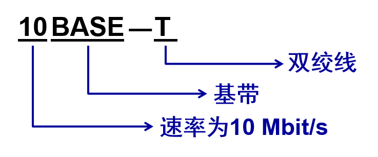
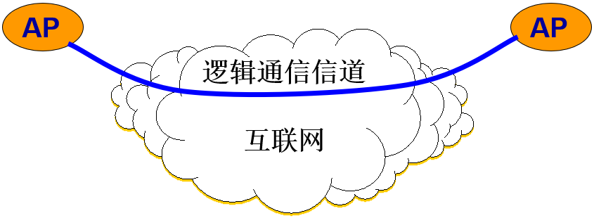

第一章、计算机网络概述
1.1 计算机网络在信息时代中的作用
-
21 世纪的一些重要特征是数字化、网络化和信息化，它是一个以网络为核心的信息时代。
-
网络现在已经成为信息社会的命脉和发展知识经济的重要基础。
-
大众熟悉的三大类网络有：
- 电信网络：提供电话、电报及传真等服务； 有线电视网络：向用户传送各种电视节目；
- 计算机网络：使用户能在计算机之间传送数据文件；
-
随着技术的发展，网络技术相互融合：
- 电信网络和有线电视网络都逐渐融入了现代计算机网络技术，扩大了原有的服务范围；
- 计算机网络也能够向用户提供电话通信、视频通信以及传送视频节目的服务。
-
从理论上讲，可以把上述三种网络融合成一种网络就能够提供所有的上述服务，这就是很早以前就提出来的“三网融合”。
-
但实现融合并不简单，因为这涉及到各方面的经济利益和行政管辖权的问题。
Internet 发展
自从 20 世纪 90 年代以后，以 Internet 为代表的计算机网络得到了飞速的发展。
已从最初的教育科研网络（免费）逐步发展成为商业网络（有偿使用）。
已成为全球最大的和最重要的计算机网络。
是人类自印刷术发明以来人类在存储和交换信息领域中的最大变革。
Internet 中文译名
Internet 的中文译名并不统一。现有的 Internet 译名有两种：
- 因特网，这个译名是全国科学技术名词审定委员会推荐的，但却长期未得到推广；
- 互联网，这是目前流行最广的、事实上的标准译名。现在我国的各种报刊杂志、政府文件以及电视节目中都毫无例外地使用这个译名。
该译名能够体现出 Internet 最主要的特征：由数量极大的各种计算机网络互连起来的。
互连网与互联网
不同的网络。
互连网：指在局部范围互连起来的计算机网络。
互联网：指当今世界上最大的计算机网络。 Internet。
“网”与互联网
有时，往往使用更加简洁的方式表示互联网，这就是只用一个 “网”字。
例如：
“上网”就是表示使用某个电子设备连接到互联网，而不是连接到其他的网络上。
网民、网吧、网银（网上银行）、网购（网上购物）等。这里的“网”，一般都不是指电信网或有线电视网，而是指当今世界上最大的计算机网络 Internet ——互联网。
什么是互联网？
互联网是由数量极大的各种计算机网络互连起来而形成的网络。
可以从两种不同的方面来认识互联网：
- 互联网应用
- 互联网工作原理与特点
互联网应用
- 绝大多数人通过使用互联网而认识了互联网。
- 上网玩游戏
- 看网上视频
- 和朋友在微信上聊天
- 在互联网上搜索和查阅各种信息
- 利用互联网的电子邮件相互通信（包括传送各种照片和视频文件）
- 互联网上购买各种物品
- 在互联网上购买机票或火车票
- 在互联网上预订酒店
- 利用互联网进行转账或买卖股票等交易
- ……
互联网的两个重要特点
互联网之所以能够向用户提供许多服务，是因为互联网具有两个重要基本特点：
连通性 (connectivity)
- 使上网用户之间都可以交换信息（数据，以及各种音频视频） ，好像这些用户的计算机都可以彼此直接连通一样。
- 注意，互联网具有虚拟的特点，无法准确知道对方是谁，也无法知道对方的位置。
共享 (Sharing)
- 指资源共享。
- 资源共享的含义是多方面的。可以是信息共享、软件共享，也可以是硬件共享。
- 由于网络的存在，这些资源好像就在用户身边一样，方便使用。
互联网在生活中的地位
现在人们的生活、工作、学习和交往都已离不开互联网。
互联网已经成为现代社会最为重要的基础设施。
同时，互联网也使人们的生活方式发生了重大的变化。
互联网+
指“互联网 + 各个传统行业”。
利用信息通信技术以及互联网平台，让互联网与传统行业进行深度融合，创造新的发展生态。
特点：把互联网的创新成果深度融合于经济社会各领域之中，从而大大地提升了实体经济的创新力和生产力。

互联网负面影响
互联网也给人们带来了一些负面影响，例如：
- 利用互联网传播计算机病毒
- 利用互联网窃取国家机密和盗窃银行或储户的钱财
- 网上欺诈
- 在网上肆意散布谣言、不良信息和播放不健康的视频节目
- 青少年弃学而沉溺于网络游戏等
因此，必须加强对互联网的管理。
1.2 互联网概述.
1.2.1 网络的网络
互联网 (Internet)
特指Internet，起源于美国，现已发展成为世界上最大的、覆盖全球的计算机网络。
计算机网络 (简称为网络)
由若干结点(node)和连接这些结点的链路(link)组成。
互连网 (internetwork 或 internet)
可以通过路由器把网络互连起来，这就构成了一个覆盖范围更大的计算机网络，称之为互连网。
“网络的网络”(network of networks)。

请注意名词“结点”
- 在网络中， node 的标准译名是“结点”而不是“节点”。
- 虽然 node 有时也可译为“节点”，但这是指像天线上的驻波的节点，这种节点很像竹竿上的“节”。
- 数据结构的树 (tree) 中的 node 应当译为“节点”。
关于“云”
当使用一朵“云”来表示网络时，可能会有两种不同的情况：
- 云表示的网络已经包含了和网络相连的计算机。
- 云表示的网络里面就只剩下许多路由器和连接这些路由器的链路，把有关的计算机画在云的外面。习惯上，与网络相连的计算机常称为主机 (host)。

基本概念要清楚
- 网络把许多计算机连接在一起。
- 互连网则把许多网络通过路由器连接在一起。
- 与网络相连的计算机常称为主机。

1.2.2 互联网基础结构发展的三个阶段
第一阶段：
- 从单个网络 ARPANET 向互联网发展的过程。
- 1983 年， TCP/IP 协议成为 ARPANET 上的标准协议，使得所有使用 TCP/IP 协议的计算机都能利用互连网相互通信。
- 人们把 1983 年作为互联网的诞生时间。
- 1990年，ARPANET 正式宣布关闭。
internet 和 Internet 的区别
以小写字母 “i” 开始的 internet（互连网）是一个通用名词，它泛指由多个计算机网络互连而成的网络。
以大写字母 “I” 开始的的 Internet（互联网或因特网）则是一个专用名词，它指当前全球最大的、开放的、由众多网络相互连接而成的特定计算机网络，它采用 TCP/IP 协议族作为通信的规则，且其前身是美国的 ARPANET。
任意把几个计算机网络互连起来（不管采用什么协议），并能够相互通信，这样构成的是一个互连网 (internet)，而不是互联网 (Internet)。
第二阶段：
建成了三级结构的互联网。
.它是一个三级计算机网络，分为主干网、地区网和校园网（或企业网）。

第三阶段：
逐渐形成了多层次 ISP 结构的互联网。
出现了互联网服务提供者 ISP (Internet Service Provider)。
任何机构和个人只要向某个 ISP 交纳规定的费用，就可从该 ISP 获取所需 IP 地址的使用权，并可通过该 ISP 接入到互联网。
根据提供服务的覆盖面积大小以及所拥有的 IP 地址数目的不同，ISP 也分成为不同层次的 ISP：主干 ISP、地区 ISP 和 本地 ISP。

到2016 年 3 月，全球已经有 226 个 IXP，分布在 172 个国家和地区。但互联网的发展在全世界还很不平衡。

万维网 WWW 的问世
- 互联网已经成为世界上规模最大和增长速率最快的计算机网络，没有人能够准确说出互联网究竟有多大。
- 互联网的迅猛发展始于 20 世纪 90 年代。由欧洲原子核研究组织 CERN 开发的万维网 WWW (World Wide Web) 被广泛使用在互联网上，大大方便了广大非网络专业人员对网络的使用，成为互联网的这种指数级增长的主要驱动力。
互联网的发展情况概况
从 1993 年至 2016 年互联网用户数的增长情况如图所示。这里的用户是指在家中上网的人。
可以看出，在 2005 年互联网的用户数超过了 10 亿，在 2010 年超过了 20 亿，而在2014年 已接近了 30亿。

1.2.3 互联网的标准化工作
互联网的标准化工作对互联网的发展起到了非常重要的作用。

成为互联网正式标准要经过三个阶段
所有互联网标准都以 RFC 的形式在互联网上发表。
- 互联网草案 (Internet Draft) ——有效期只有六个月。在这个阶段还不是 RFC 文档。
- 建议标准 (Proposed Standard) ——从这个阶段开始就成为 RFC 文档。
- 互联网标准 (Internet Standard) ——达到正式标准后，每个标准就分配到一个编号 STD xxxx。 一个标准可以和多个 RFC 文档关联。
各种 RFC 之间的关系
除了建议标准和互联网标准这两种 RFC 文档外，还有三种 RFC 文档，即历史的、实验的和提供信息的 RFC 文档。

1.3 互联网的组成
1.3.1 互联网的边缘部分
从互联网的工作方式上看，可以划分为两大块：
(1) 边缘部分： 由所有连接在互联网上的主机组成。这部分是用户直接使用的，用来进行通信（传送数据、音频或视频）和资源共享。
(2) 核心部分：由大量网络和连接这些网络的路由器组成。这部分是为边缘部分提供服务的（提供连通性和交换）。
互联网的边缘部分与核心部分

处在互联网边缘的部分就是连接在互联网上的所有的主机。这些主机又称为端系统 (end system)。
端系统在功能上可能有很大的差别
- 小的端系统可以是一台普通个人电脑，具有上网功能的智能手机，甚至是一个很小的网络摄像头。
- 大的端系统则可以是一台非常昂贵的大型计算机。
- 端系统的拥有者可以是个人，也可以是单位（如学校、企业、政府机关等），当然也可以是某个 ISP。
端系统之间通信的含义
“主机 A 和主机 B 进行通信”实际上是指：“运行在主机 A 上的某个程序和运行在主机 B 上的另一个程序进行通信”。
即“主机 A 的某个进程和主机 B 上的另一个进程进行通信”。简称为“计算机之间通信”。
端系统之间的通信方式通常可划分为两大类：
客户-服务器方式（C/S 方式） 即 Client/Server 方式，简称为 C/S 方式。 对等方式（P2P 方式） 即 PeertoPeer 方式 ，简称为 P2P 方式。
1. 客户服-务器方式
- 客户 (client) 和服务器 (server) 都是指通信中所涉及的两个应用进程。
- 客户服务器方式所描述的是进程之间服务和被服务的关系。
- 客户是服务的请求方，服务器是服务的提供方。
服务请求方和服务提供方都要使用网络核心部分所提供的服务。

客户软件的特点
- 被用户调用后运行，在打算通信时主动向远地服务器发起通信（请求服务）。因此，客户程序必须知道服务器程序的地址。
- 不需要特殊的硬件和很复杂的操作系统。
- 一种专门用来提供某种服务的程序，可同时处理多个远地或本地客户的请求。
- 系统启动后即自动调用并一直不断地运行着，被动地等待并接受来自各地的客户的通信请求。因此，服务器程序不需要知道客户程序的地址。
- 一般需要强大的硬件和高级的操作系统支持。
客户与服务器的通信关系建立后，通信可以是双向的，客户和服务器都可发送和接收数据。
2. 对等连接方式
- 对等连接 (peer-to-peer，简写为 P2P) 是指两个主机在通信时并不区分哪一个是服务请求方还是服务提供方。
- 只要两个主机都运行了对等连接软件 (P2P 软件) ，它们就可以进行平等的、对等连接通信。
- 双方都可以下载对方已经存储在硬盘中的共享文档。
对等连接方式的特点
- 对等连接方式从本质上看仍然是使用客户服务器方式，只是对等连接中的每一个主机既是客户又是服务器。
- 例如主机 C 请求 D 的服务时，C 是客户，D 是服务器。但如果 C 又同时向 F提供服务，那么 C 又同时起着服务器的作用。
对等连接工作方式可支持大量对等用户（如上百万个）同时工作。

1.3.2 互联网的核心部分
-
网络核心部分是互联网中最复杂的部分。
-
网络中的核心部分要向网络边缘中的大量主机提供连通性，使边缘部分中的任何一个主机都能够向其他主机通信（即传送或接收各种形式的数据）。
-
在网络核心部分起特殊作用的是路由器 (router)。
-
路由器是实现分组交换 (packet switching) 的关键构件，其任务是转发收到的分组，这是网络核心部分最重要的功能。
-
为了理解分组交换，首先了解电路交换的基本概念。
1. 电路交换的主要特点
2 部电话机只需要用 1 对电线直接连接就能够互相通话。

5 部电话机两两直接相连，需 10 对电线。

N 部电话机两两直接相连，需 N(N – 1)/2 对电线。这种直接连接方法所需要的电线对的数量与电话机数量的平方（ N2 ）成正比。

使用交换机
每一部电话都直接连接到交换机上，而交换机使用交换的方法，让电话用户彼此之间可以很方便地通信。 所采用的交换方式就是电路交换 (circuit switching)。
(c) 用交换机连接许多部电话
电话机的不同连接方法
“交换”的含义
在这里，“交换”(switching)的含义就是转接 —— 把一条电话线转接到另一条电话线，使它们连通起来。
从通信资源的分配角度来看，“交换”就是按照某种方式动态地分配传输线路的资源。
电路交换特点
电路交换必定是面向连接的。
电路交换分为三个阶段：
- 建立连接：建立一条专用的物理通路，以保证双方通话时所需的通信资源在通信时不会被其他用户占用；
- 通信：主叫和被叫双方就能互相通电话；
- 释放连接：释放刚才使用的这条专用的物理通路（释放刚才占用的所有通信资源）。
电路交换举例
A 和 B 通话经过四个交换机
通话在 A 到 B 的连接上进行

电路交换的用户始终占用端到端的通信资源
电路交换缺点
计算机数据具有突发性。
这导致在传送计算机数据时，通信线路的利用率很低（用来传送数据的时间往往不到10%甚至1% ）。
2. 分组交换的主要特点
分组交换则采用存储转发技术。
在发送端，先把较长的报文划分成较短的、固定长度的数据段。

添加首部构成分组
每一个数据段前面添加上首部构成分组(packet)。

分组交换的传输单元
分组交换网以“分组”作为数据传输单元。
依次把各分组发送到接收端（假定接收端在左边）。每一个分组的首部都含有地址（诸如目的地址和源地址）等控制信息。 分组交换网中的结点交换机根据收到的分组首部中的地址信息，把分组转发到下一个结点交换机。 每个分组在互联网中独立地选择传输路径。 用这样的存储转发方式，最后分组就能到达最终目的地。

分组首部的重要性
- 每一个分组的首部都含有地址（诸如目的地址和源地址）等控制信息。
- 分组交换网中的结点交换机根据收到的分组首部中的地址信息，把分组转发到下一个结点交换机。
- 每个分组在互联网中独立地选择传输路径。
- 用这样的存储转发方式，最后分组就能到达最终目的地。
收到分组后剥去首部
接收端收到分组后剥去首部还原成报文。

最后还原成原来的报文
最后，在接收端把收到的数据恢复成为原来的报文。
这里我们假定分组在传输过程中没有出现差错，在转发时也没有被丢弃。
互联网的核心部分
互联网的核心部分是由许多网络和把它们互连起来的路由器组成，而主机处在互联网的边缘部分。
互联网核心部分中的路由器之间一般都用高速链路相连接，而在网络边缘的主机接入到核心部分则通常以相对较低速率的链路相连接。
主机的用途是为用户进行信息处理的，并且可以和其他主机通过网络交换信息。路由器的用途则是用来转发分组的，即进行分组交换的。

分组交换网的示意图

- 在路由器 A 暂存查找转发表找到转发的端口
- 在路由器 C 暂存查找转发表找到转发的端口
- 在路由器 E 暂存查找转发表找到转发的端口
- 最后到达目的主机 H5
路由器
在路由器中的输入和输出端口之间没有直接连线。
路由器处理分组的过程是：
- 把收到的分组先放入缓存（暂时存储）；
- 查找转发表，找出到某个目的地址应从哪个端口转发；
- 把分组送到适当的端口转发出去。
主机和路由器的作用不同
主机是为用户进行信息处理的，并向网络发送分组，从网络接收分组。 路由器对分组进行存储转发，最后把分组交付目的主机。
分组交换的优点
| 优点 | 所采用的手段 |
|---|---|
| 高效 | 在分组传输的过程中动态分配传输带宽，对通信链路是逐段占用。 |
| 灵活 | 为每一个分组独立地选择最合适的转发路由 |
| 迅速 | 以分组作为传送单位，可以不先建立连接就能向其他主机发送分组 |
| 可靠 | 保证可靠性的网络协议；分布式多路由的分组交换网，使网络有很好的生存性 |
分组交换带来的问题
分组在各结点存储转发时需要排队，这就会造成一定的时延。
分组必须携带的首部（里面有必不可少的控制信息）也造成了一定的开销。
存储转发原理并非完全新的概念
在 20 世纪 40 年代，电报通信也采用了基于存储转发原理的报文交换 (message switching)。
报文交换的时延较长，从几分钟到几小时不等。现在报文交换已经很少有人使用了。
三种交换的比较
三种交换的比较
若要连续传送大量的数据，且其传送时间远大于连接建立时间，则电路交换的传输速率较快。
报文交换和分组交换不需要预先分配传输带宽，在传送突发数据时可提高整个网络的信道利用率。
由于一个分组的长度往往远小于整个报文的长度，因此分组交换比报文交换的时延小，同时也具有更好的灵活性。
1.4 计算机网络在我国的发展
1980 年，铁道部开始进行计算机联网实验。
1989 年11 月，我国第一个公用分组交换网 CNPAC 建成运行。
1994 年 4 月 20 日，我国用 64 kbit/s 专线正式连入互联网，我国被国际上正式承认为接入互联网的国家。
1994 年 5 月，中国科学院高能物理研究所设立了我国的第一个万维网服务器。
1994 年 9 月中国公用计算机互联网 CHINANET 正式启动。
到目前为止，我国陆续建造了基于互联网技术的并能够和互联网互连的多个全国范围的公用计算机网络，其中规模最大的就是下面这五个：
(1) 中国电信互联网 CHINANET（也就是原来的中国公用计算机互联网）
(2) 中国联通互联网 UNINET
(3) 中国移动互联网 CMNET
(4) 中国教育和科研计算机网 CERNET
(5) 中国科学技术网 CSTNET
中国教育和科研计算机网 CERNET (China Education and Research NETwork) 始建于 1994 年，是我国第一个 IPv4 互联网主干网。
2004 年 2 月，我国的第一个下一代互联网 CNGI 的主干网 CERNET2 试验网正式开通，并提供服务。
中国互联网络信息中心 CNNIC (ChiNa Network Information Center) 每年两次公布我国互联网的发展情况。
1.5 计算机网络的类别
1.5.1 计算机网络的定义
计算机网络的精确定义并未统一。
较好的定义：
- 计算机网络主要是由一些通用的、可编程的硬件互连而成的，而这些硬件并非专门用来实现某一特定目的（例如，传送数据或视频信号）。这些可编程的硬件能够用来传送多种不同类型的数据，并能支持广泛的和日益增长的应用。
根据这个定义：
(1) 计算机网络所连接的硬件，并不限于一般的计算机，而是包括了智能手机。
(2) 计算机网络并非专门用来传送数据，而是能够支持很多种的应用（包括今后可能出现的各种应用）。
请注意，上述的“可编程的硬件”表明这种硬件一定包含有中央处理机 (CPU)。
1.5.2 几种不同类别的网络
计算机网络有多种类别。典型包括：
- 按照网络的作用范围进行分类
- 按照网络的使用者进行分类
- 用来把用户接入到互联网的网络
1. 按照网络的作用范围进行分类
广域网 WAN (Wide Area Network)：作用范围通常为几十到几千公里。
城域网 MAN (Metropolitan Area Network)：作用距离约为 5 ~ 50 公里。
局域网 LAN (Local Area Network) ：局限在较小的范围（如 1 公里左右）。
个人区域网 PAN (Personal Area Network) ：范围很小，大约在 10 米左右。
若中央处理机之间的距离非常近（如仅1米的数量级甚至更小些），则一般就称之为多处理机系统，而不称它为计算机网络。
2. 按照网络的使用者进行分类
公用网 (public network)
按规定交纳费用的人都可以使用的网络。因此也可称为公众网。
专用网 (private network)
为特殊业务工作的需要而建造的网络。
公用网和专用网都可以提供多种服务。如传送的是计算机数据，则分别是公用计算机网络和专用计算机网络。
3. 用来把用户接入到互联网的网络
接入网 AN (Access Network)，它又称为本地接入网或居民接入网。
接入网是一类比较特殊的计算机网络，用于将用户接入互联网。
接入网本身既不属于互联网的核心部分，也不属于互联网的边缘部分。
接入网是从某个用户端系统到互联网中的第一个路由器（也称为边缘路由器）之间的一种网络。
从覆盖的范围看，很多接入网还是属于局域网。
从作用上看，接入网只是起到让用户能够与互联网连接的“桥梁”作用。
1.6 计算机网络的性能
1.6.1 计算机网络的性能指标
计算机网络的性能一般是指它的几个重要的性能指标，主要包括：
- 速率
- 带宽
- 吞吐率
- 时延
- 时延带宽积
- 往返时间 RTT
- 利用率
1. 速率
比特（bit）是计算机中数据量的单位，也是信息论中使用的信息量的单位。 比特（bit）来源于 binary digit，意思是一个“二进制数字”，因此一个比特就是二进制数字中的一个 1 或 0。 速率是计算机网络中最重要的一个性能指标，指的是数据的传送速率，它也称为数据率 (data rate)或比特率 (bit rate)。 速率的单位是 bit/s，或 kbit/s、Mbit/s、 Gbit/s 等。例如 4*10^10 bit/s 的数据率就记为 40 Gbit/s。 速率往往是指额定速率或标称速率，非实际运行速率。
2. 带宽
两种不同意义：
- “带宽”(bandwidth) 本来是指信号具有的频带宽度，其单位是赫（或千赫、兆赫、吉赫等）。
- 在计算机网络中，带宽用来表示网络中某通道传送数据的能力。表示在单位时间内网络中的某信道所能通过的“最高数据率”。单位是 bit/s ，即 “比特每秒”。
在“带宽”的上述两种表述中，前者为频域称谓，而后者为时域称谓，其本质是相同的。也就是说，一条通信链路的“带宽”越宽，其所能传输的“最高数据率”也越高。
数字信号流随时间的变化
在时间轴上信号的宽度随带宽的增大而变窄。

3. 吞吐量
- 吞吐量 (throughput) 表示在单位时间内通过某个网络（或信道、接口）的数据量。
- 吞吐量更经常地用于对现实世界中的网络的一种测量，以便知道实际上到底有多少数据量能够通过网络。
- 吞吐量受网络的带宽或网络的额定速率的限制。
4. 时延 (delay 或 latency)
时延 (delay 或 latency) 是指数据（一个报文或分组，甚至比特）从网络（或链路）的一端传送到另一端所需的时间。
有时也称为延迟或迟延。
网络中的时延由以下几个不同的部分组成：
(1) 发送时延
(2) 传播时延
(3) 处理时延
(4) 排队时延
(1) 发送时延
也称为传输时延。
发送数据时，数据帧从结点进入到传输媒体所需要的时间。
也就是从发送数据帧的第一个比特算起，到该帧的最后一个比特发送完毕所需的时间。

(2) 传播时延
电磁波在信道中需要传播一定的距离而花费的时间。
发送时延与传播时延有本质上的不同。
信号发送速率和信号在信道上的传播速率是完全不同的概念。

(3) 处理时延
主机或路由器在收到分组时，为处理分组（例如分析首部、提取数据、差错检验或查找路由）所花费的时间。
(4) 排队时延
分组在路由器输入输出队列中排队等待处理所经历的时延。 排队时延的长短往往取决于网络中当时的通信量。
数据在网络中经历的总时延就是发送时延、传播时延、处理时延和排队时延之和。
总时延 = 发送时延
+ 传播时延
+ 处理时延
+ 排队时延
必须指出，在总时延中，究竟是哪一种时延占主导地位，必须具体分析。
四种时延所产生的地方 ：
假设从结点 A 向结点 B 发送数据

容易产生的错误概念
对于高速网络链路，我们提高的仅仅是数据的发送速率而不是比特在链路上的传播速率。
提高链路带宽减小了数据的发送时延。
以下说法是错误的：
“在高速链路（或高带宽链路）上，比特会传送得更快些”。
5. 时延带宽积
链路的时延带宽积又称为以比特为单位的链路长度。

6. 往返时间 RTT
互联网上的信息不仅仅单方向传输，而是双向交互的。因此，有时很需要知道双向交互一次所需的时间。
往返时间表示从发送方发送数据开始，到发送方收到来自接收方的确认，总共经历的时间。
在互联网中，往返时间还包括各中间结点的处理时延、排队时延以及转发数据时的发送时延。
当使用卫星通信时，往返时间 RTT 相对较长，是很重要的一个性能指标。
7. 利用率
分为信道利用率和网络利用率。
信道利用率指出某信道有百分之几的时间是被利用的（有数据通过）。完全空闲的信道的利用率是零。
网络利用率则是全网络的信道利用率的加权平均值。
信道利用率并非越高越好。当某信道的利用率增大时，该信道引起的时延也就迅速增加。
时延与网络利用率的关系
根据排队论的理论，当某信道的利用率增大时，该信道引起的时延也就迅速增加。
若令 D0 表示网络空闲时的时延，D 表示网络当前的时延，则在适当的假定条件下，可以用下面的简单公式表示 D 和 D0之间的关系：


1.6.2 计算机网络的非性能特征
一些非性能特征也很重要。它们与前面介绍的性能指标有很大的关系。主要包括：
- 费用
- 质量
- 标准化
- 可靠性
- 可扩展性和可升级性
- 易于管理和维护
1.7 计算机网络的体系结构
1.7.1 计算机网络体系结构的形成
计算机网络是个非常复杂的系统。
相互通信的两个计算机系统必须高度协调工作才行，而这种“协调”是相当复杂的。
“分层”可将庞大而复杂的问题，转化为若干较小的局部问题，而这些较小的局部问题就比较易于研究和处理。
1974 年，美国的 IBM 公司宣布了系统网络体系结构SNA (System Network Architecture)。这个著名的网络标准就是按照分层的方法制定的。
不久后，其他一些公司也相继推出自己公司的具有不同名称的体系结构。
由于网络体系结构的不同，不同公司的设备很难互相连通。
开放系统互连参考模型 OSI/RM
为了使不同体系结构的计算机网络都能互连，国际标准化组织 ISO 于 1977 年成立了专门机构研究该问题。
他们提出了一个试图使各种计算机在世界范围内互连成网的标准框架，即著名的开放系统互连基本参考模型 OSI/RM (Open Systems Interconnection Reference Model)，简称为 OSI。
为了使不同体系结构的计算机网络都能互连，国际标准化组织 ISO 于 1977 年成立了专门机构研究该问题。
他们提出了一个试图使各种计算机在世界范围内互连成网的标准框架，即著名的开放系统互连基本参考模型 OSI/RM (Open Systems Interconnection Reference Model)，简称为 OSI。
只要遵循 OSI 标准，一个系统就可以和位于世界上任何地方的、也遵循这同一标准的其他任何系统进行通信。
OSI 只获得了一些理论研究的成果，在市场化方面却失败了。原因包括：
- OSI 的专家们在完成 OSI 标准时没有商业驱动力；
- OSI 的协议实现起来过分复杂，且运行效率很低；
- OSI 标准的制定周期太长，因而使得按 OSI 标准生产的设备无法及时进入市场；
- OSI 的层次划分也不太合理，有些功能在多个层次中重复出现。
两种国际标准
法律上的 (de jure) 国际标准 OSI 并没有得到市场的认可。
非国际标准 TCP/IP 却获得了最广泛的应用。TCP/IP 常被称为事实上的 (de facto) 国际标准。
1.7.2 协议与划分层次
计算机网络中的数据交换必须遵守事先约定好的规则。
这些规则明确规定了所交换的数据的格式以及有关的同步问题（同步含有时序的意思）。
网络协议 (network protocol)，简称为协议，是为进行网络中的数据交换而建立的规则、标准或约定。
网络协议的三个组成要素
语法：数据与控制信息的结构或格式 。
语义：需要发出何种控制信息，完成何种动作以及做出何种响应。
同步：事件实现顺序的详细说明。
由此可见，网络协议是计算机网络的不可缺少的组成部分。
协议的两种形式
一种是使用便于人来阅读和理解的文字描述。
另一种是使用让计算机能够理解的程序代码。
这两种不同形式的协议都必须能够对网络上信息交换过程做出精确的解释。
层次式协议结构
ARPANET 的研制经验表明，对于非常复杂的计算机网络协议，其结构应该是层次式的。
划分层次的概念举例


再设计一个通信服务模块

再设计一个网络接入模块

分层的好处与缺点
优点
各层之间是独立的。
灵活性好。
结构上可分割开。
易于实现和维护。
能促进标准化工作。
缺点
降低效率。
有些功能会在不同的层次中重复出现，因而产生了额外开销。
层数多少要适当
层数太少，就会使每一层的协议太复杂。
层数太多，又会在描述和综合各层功能的系统工程任务时遇到较多的困难。
各层完成的主要功能
① 差错控制：使相应层次对等方的通信更加可靠。 ② 流量控制：发送端的发送速率必须使接收端来得及接收，不要太快。 ③ 分段和重装 ：发送端将要发送的数据块划分为更小的单位，在接收端将其还原。 ④ 复用和分用：发送端几个高层会话复用一条低层的连接，在接收端再进行分用。 ⑤ 连接建立和释放：交换数据前先建立一条逻辑连接，数据传送结束后释放连接。
计算机网络的体系结构
计算机网络的体系结构 (architecture) 是计算机网络的各层及其协议的集合。
体系结构就是这个计算机网络及其部件所应完成的功能的精确定义。
实现 (implementation) 是遵循这种体系结构的前提下用何种硬件或软件完成这些功能的问题。
体系结构是抽象的，而实现则是具体的，是真正在运行的计算机硬件和软件。
1.7.3 具有五层协议的体系结构
OSI 的七层协议体系结构的概念清楚，理论也较完整，但它既复杂又不实用。
TCP/IP 是四层体系结构：应用层、运输层、网际层和网络接口层。
但最下面的网络接口层并没有具体内容。
因此往往采取折中的办法，即综合 OSI 和 TCP/IP 的优点，采用一种只有五层协议的体系结构 。

五层协议的体系结构

主机 1 向主机 2 发送数据

- 应用层 PDU 再传送到运输层，加上运输层首部，成为运输层报文
- 运输层报文再传送到网络层，加上网络层首部，成为 IP 数据报（或分组）
- IP 数据报再传送到数据链路层，加上链路层首部和尾部，成为数据链路层帧
- 数据链路层帧再传送到物理层，最下面的物理层把比特流传送到物理媒体
- 电信号（或光信号）在物理媒体中传播从发送端物理层传送到接收端物理层
- 物理层接收到比特流，上交给数据链路层
- 数据链路层剥去帧首部和帧尾部取出数据部分，上交给网络层
- 网络层剥去首部，取出数据部分,上交给运输层
- 运输层剥去首部，取出数据部分,上交给应用层
- 应用层剥去首部，取出应用程序数据,上交给应用进程
- 我收到了 AP1 发来的应用程序数据！
主机 1 向主机 2 发送数据
注意观察加入或剥去首部（尾部）的层次


OSI 参考模型把对等层次之间传送的数据单位称为该层的协议数据单元 PDU (Protocol Data Unit)。这个名词现已被许多非 OSI 标准采用。
任何两个同样的层次把数据（即数据单元加上控制信息）通过水平虚线直接传递给对方。这就是所谓的“对等层”(peer layers)之间的通信。
各层协议实际上就是在各个对等层之间传递数据时的各项规定。
1.7.4 实体、协议、服务和服务访问点
- 实体 (entity) 表示任何可发送或接收信息的硬件或软件进程。
- 协议是控制两个对等实体进行通信的规则的集合。
- 在协议的控制下，两个对等实体间的通信使得本层能够向上一层提供服务。
- 要实现本层协议，还需要使用下层所提供的服务。
协议和服务在概念上是不一样的
- 协议的实现保证了能够向上一层提供服务。
- 本层的服务用户只能看见服务而无法看见下面的协议。即下面的协议对上面的服务用户是透明的。
- 协议是“水平的”，即协议是控制对等实体之间通信的规则。
- 服务是“垂直的”，即服务是由下层向上层通过层间接口提供的。
- 上层使用服务原语获得下层所提供的服务。
服务访问点
- 同一系统相邻两层的实体进行交互的地方，称为服务访问点 SAP (Service Access Point)。
- 服务访问点SAP是一个抽象的概念，它实际上就是一个逻辑接口。
- OSI把层与层之间交换的数据的单位称为服务数据单元 SDU (Service Data Unit)。
- SDU 可以与 PDU 不一样，例如，可以是多个 SDU 合成为一个 PDU，也可以是一个 SDU 划分为几个 PDU。
1.7.5 TCP/IP 的体系结构

协议很复杂
协议必须把所有不利的条件事先都估计到，而不能假定一切都是正常的和非常理想的。
看一个计算机网络协议是否正确，不能光看在正常情况下是否正确，还必须非常仔细地检查这个协议能否应付各种异常情况。
【例1-1】著名的协议举例
占据东、西两个山顶的蓝军 1 和蓝军 2 与驻扎在山谷的白军作战。其力量对比是：单独的蓝军1或蓝军2打不过白军，但蓝军 1 和蓝军 2 协同作战则可战胜白军。现蓝军 1 拟于次日正午向白军发起攻击。于是用计算机发送电文给蓝军 2。但通信线路很不好，电文出错或丢失的可能性较大（没有电话可使用）。因此要求收到电文的友军必须送回一个确认电文。但此确认电文也可能出错或丢失。试问能否设计出一种协议使得蓝军 1 和蓝军 2 能够实现协同作战，因而一定（即 100 %而不是 99.999…%）取得胜利？

结论
这样无限循环下去，两边的蓝军都始终无法确定自己最后发出的电文对方是否已经收到。 没有一种协议能够使蓝军 100% 获胜。 这个例子告诉我们，看似非常简单的协议，设计起来要考虑的问题还是比较多的。

TCP/IP 体系结构的另一种表示方法
实际上，现在的互联网使用的 TCP/IP 体系结构有时已经发生了演变，即某些应用程序可以直接使用 IP 层，或甚至直接使用最下面的网络接口层。


【例1-2】客户进程和服务器进程 使用 TCP/IP 协议栈进行通信

功能较强的计算机 可同时运行多个服务器进程

第二章、物理层
2.1 物理层的基本概念
物理层考虑的是怎样才能在连接各种计算机的传输媒体上传输数据比特流，而不是指具体的传输媒体。
物理层的作用是要尽可能地屏蔽掉不同传输媒体和通信手段的差异。
用于物理层的协议也常称为物理层规程 (procedure)。
物理层的主要任务
主要任务：确定与传输媒体的接口的一些特性。
机械特性 ：指明接口所用接线器的形状和尺寸、引线数目和排列、固定和锁定装置等。 电气特性：指明在接口电缆的各条线上出现的电压的范围。 功能特性：指明某条线上出现的某一电平的电压表示何种意义。 过程特性 ：指明对于不同功能的各种可能事件的出现顺序。
2.2 数据通信的基础知识
2.2.1 数据通信系统的模型
一个数据通信系统包括三大部分：源系统（或发送端、发送方）、传输系统（或传输网络）和目的系统（或接收端、接收方）。

常用术语
数据 (data) —— 运送消息的实体。 信号 (signal) —— 数据的电气的或电磁的表现。 模拟信号 (analogous signal) —— 代表消息的参数的取值是连续的。 数字信号 (digital signal) —— 代表消息的参数的取值是离散的。 码元 (code) —— 在使用时间域（或简称为时域）的波形表示数字信号时，代表不同离散数值的基本波形。
2.2.2 有关信道的几个基本概念
信道 —— 一般用来表示向某一个方向传送信息的媒体。 单向通信（单工通信）——只能有一个方向的通信而没有反方向的交互。 双向交替通信（半双工通信）——通信的双方都可以发送信息，但不能双方同时发送(当然也就不能同时接收)。 双向同时通信（全双工通信）——通信的双方可以同时发送和接收信息。
基带信号（即基本频带信号）—— 来自信源的信号。像计算机输出的代表各种文字或图像文件的数据信号都属于基带信号。 基带信号往往包含有较多的低频成分，甚至有直流成分，而许多信道并不能传输这种低频分量或直流分量。因此必须对基带信号进行调制 (modulation)。
调制分为两大类：
基带调制：仅对基带信号的波形进行变换，使它能够与信道特性相适应。变换后的信号仍然是基带信号。把这种过程称为编码 (coding)。
带通调制：使用载波 (carrier)进行调制，把基带信号的频率范围搬移到较高的频段，并转换为模拟信号，这样就能够更好地在模拟信道中传输（即仅在一段频率范围内能够通过信道） 。
带通信号 ：经过载波调制后的信号。
(1) 常用编码方式
不归零制：正电平代表 1，负电平代表 0。 归零制：正脉冲代表 1，负脉冲代表 0。 曼彻斯特编码：位周期中心的向上跳变代表 0，位周期中心的向下跳变代表 1。但也可反过来定义。 差分曼彻斯特编码：在每一位的中心处始终都有跳变。位开始边界有跳变代表 0，而位开始边界没有跳变代表 1。

从信号波形中可以看出，曼彻斯特 (Manchester) 编码和差分曼彻斯特编码产生的信号频率比不归零制高。 从自同步能力来看，不归零制不能从信号波形本身中提取信号时钟频率（这叫作没有自同步能力），而曼彻斯特编码和差分曼彻斯特编码具有自同步能力。
(2) 基本的带通调制方法
- 基带信号往往包含有较多的低频成分，甚至有直流成分，而许多信道并不能传输这种低频分量或直流分量。为了解决这一问题，就必须对基带信号进行调制 (modulation)。
- 最基本的二元制调制方法有以下几种：
- 调幅(AM)：载波的振幅随基带数字信号而变化。
- 调频(FM)：载波的频率随基带数字信号而变化。
- 调相(PM) ：载波的初始相位随基带数字信号而变化。

正交振幅调制 QAM(Quadrature Amplitude Modulation)
举例
为了达到更高的信息传输速率，必须采用技术上更为复杂的多元制的振幅相位混合调制方法。
例如： 可供选择的相位有 12 种，而对于每一种相位有 1 或 2 种振幅可供选择。总共有 16 种组合，即 16 个码元。 由于 4 bit 编码共有 16 种不同的组合，因此这 16 个点中的每个点可对应于一种 4 bit 的编码。数据传输率可提高 4 倍。
不是码元越多越好。若每一个码元可表示的比特数越多，则在接收端进行解调时要正确识别每一种状态就越困难，出错率增加。
2.2.3 信道的极限容量
任何实际的信道都不是理想的，在传输信号时会产生各种失真以及带来多种干扰。
码元传输的速率越高，或信号传输的距离越远，或传输媒体质量越差，在信道的输出端的波形的失真就越严重。
数字信号通过实际的信道

从概念上讲，限制码元在信道上的传输速率的因素有以下两个：
- 信道能够通过的频率范围
- 信噪比
(1) 信道能够通过的频率范围
具体的信道所能通过的频率范围总是有限的。信号中的许多高频分量往往不能通过信道。 1924年，奈奎斯特 (Nyquist) 就推导出了著名的奈氏准则。他给出了在假定的理想条件下，为了避免码间串扰，码元的传输速率的上限值。
在任何信道中，码元传输的速率是有上限的，否则就会出现码间串扰的问题，使接收端对码元的判决（即识别）成为不可能。
如果信道的频带越宽，也就是能够通过的信号高频分量越多，那么就可以用更高的速率传送码元而不出现码间串扰
(2) 信噪比
噪声存在于所有的电子设备和通信信道中。 噪声是随机产生的，它的瞬时值有时会很大。因此噪声会使接收端对码元的判决产生错误。 但噪声的影响是相对的。如果信号相对较强，那么噪声的影响就相对较小。 信噪比就是信号的平均功率和噪声的平均功率之比。常记为 S/N，并用分贝 (dB) 作为度量单位。即： 信噪比(dB) = 10 log10(S/N) (dB) 例如，当 S/N = 10 时，信噪比为 10 dB，而当 S/N = 1000时，信噪比为 30 dB。
1984年，香农 (Shannon) 用信息论的理论推导出了带宽受限且有高斯白噪声干扰的信道的极限、无差错的信息传输速率（香农公式）。 信道的极限信息传输速率 C 可表达为： C = W log2(1+S/N) (bit/s) 其中： W 为信道的带宽（以 Hz 为单位）； S 为信道内所传信号的平均功率； N 为信道内部的高斯噪声功率。
香农公式表明
信道的带宽或信道中的信噪比越大，则信息的极限传输速率就越高。
只要信息传输速率低于信道的极限信息传输速率，就一定可以找到某种办法来实现无差错的传输。
若信道带宽 W 或信噪比 S/N 没有上限（当然实际信道不可能是这样的），则信道的极限信息传输速率 C 也就没有上限。
实际信道上能够达到的信息传输速率要比香农的极限传输速率低不少。
请注意
对于频带宽度已确定的信道，如果信噪比不能再提高了，并且码元传输速率也达到了上限值，那么还有办法提高信息的传输速率。 这就是：用编码的方法让每一个码元携带更多比特的信息量。
2.3 物理层下面的传输媒体
传输媒体也称为传输介质或传输媒介，它就是数据传输系统中在发送器和接收器之间的物理通路。 传输媒体可分为两大类，即导引型传输媒体和非导引型传输媒体。 在导引型传输媒体中，电磁波被导引沿着固体媒体（铜线或光纤）传播。 非导引型传输媒体就是指自由空间。在非导引型传输媒体中，电磁波的传输常称为无线传输。

2.3.1 导引型传输媒体
双绞线 最常用的传输媒体。 模拟传输和数字传输都可以使用双绞线，其通信距离一般为几到十几公里。 屏蔽双绞线 STP (Shielded Twisted Pair) 带金属屏蔽层 无屏蔽双绞线 UTP (Unshielded Twisted Pair)

双绞线标准
1991年，美国电子工业协会 EIA 和电信行业协会联合发布了一个用于室内传送数据的无屏蔽双绞线和屏蔽双绞线的标准 EIA/TIA-568。 1995年将布线标准更新为 EIA/TIA-568-A。 此标准规定了 5 个种类的 UTP 标准（从 1 类线到 5 类线）。 对传送数据来说，现在最常用的 UTP 是5类线（Category 5 或 CAT5）。
常用的绞合线的类别、带宽和典型应用
| 绞合线类别 | 带宽 | 线缆特点 | 典型应用 |
|---|---|---|---|
| 3 | 16 MHz | 2对4芯双绞线 | 模拟电话；曾用于传统以太网（10 Mbit/s） |
| 4 | 20 MHz | 4对8芯双绞线 | 曾用于令牌局域网 |
| 5 | 100 MHz | 与4类相比增加了绞合度 | 传输速率不超过100 Mbit/s的应用 |
| 5E（超5类） | 125 MHz | 与5类相比衰减更小 | 传输速率不超过1 Gbit/s的应用 |
| 6 | 250 MHz | 与5类相比改善了串扰等性能 | 传输速率高于1 Gbit/s的应用 |
| 7 | 600 MHz | 使用屏蔽双绞线 | 传输速率高于10 Gbit/s的应用 |
同轴电缆
同轴电缆具有很好的抗干扰特性，被广泛用于传输较高速率的数据。 同轴电缆的带宽取决于电缆的质量。 50 Ω同轴电缆 —— LAN / 数字传输常用 75 Ω 同轴电缆 —— 有线电视 / 模拟传输常用

光缆 光纤是光纤通信的传输媒体。 由于可见光的频率非常高，约为 108 MHz 的量级，因此一个光纤通信系统的传输带宽远远大于目前其他各种传输媒体的带宽。
光线在光纤中的折射

光纤的工作原理

只要从纤芯中射到纤芯表面的光线的入射角大于某个临界角度，就可产生全反射。
多模光纤 可以存在多条不同角度入射的光线在一条光纤中传输。这种光纤就称为多模光纤。 单模光纤 若光纤的直径减小到只有一个光的波长，则光纤就像一根波导那样，它可使光线一直向前传播，而不会产生多次反射。这样的光纤称为单模光纤。

光纤通信中使用的光波的波段
常用的三个波段的中心分别位于 850 nm, 1300 nm 和 1550 nm。 所有这三个波段都具有 25000~30000 GHz 的带宽，可见光纤的通信容量非常大。
光纤优点
(1) 通信容量非常大。 (2) 传输损耗小，中继距离长。 (2) 抗雷电和电磁干扰性能好。 (3) 无串音干扰，保密性好。 (4) 体积小，重量轻。
2.3.2 非导引型传输媒体
-
将自由空间称为“非导引型传输媒体”。
-
无线传输所使用的频段很广。
-
短波通信（即高频通信）主要是靠电离层的反射，但短波信道的通信质量较差，传输速率低。
-
微波在空间主要是直线传播。
-
传统微波通信有两种方式：
- 地面微波接力通信
- 卫星通信
无线局域网使用的 ISM 频段
要使用某一段无线电频谱进行通信，通常必须得到本国政府有关无线电频谱管理机构的许可证。但是，也有一些无线电频段是可以自由使用的。例如：ISM。各国的 ISM 标准有可能略有差别。

2.4 信道复用技术
2.4.1 频分复用、时分复用和统计时分复用
复用 (multiplexing) 是通信技术中的基本概念。 它允许用户使用一个共享信道进行通信，降低成本，提高利用率。

频分复用 FDM (Frequency Division Multiplexing)
将整个带宽分为多份，用户在分配到一定的频带后，在通信过程中自始至终都占用这个频带。 频分复用的所有用户在同样的时间占用不同的带宽资源（请注意，这里的“带宽”是频率带宽而不是数据的发送速率）。

**时分复用TDM (Time Division Multiplexing) **
时分复用则是将时间划分为一段段等长的时分复用帧（TDM 帧）。每一个时分复用的用户在每一个 TDM 帧中占用固定序号的时隙。 每一个用户所占用的时隙是周期性地出现（其周期就是 TDM 帧的长度）。 TDM 信号也称为等时(isochronous)信号。 时分复用的所有用户是在不同的时间占用同样的频带宽度。

时分复用可能会造成线路资源的浪费
使用时分复用系统传送计算机数据时，由于计算机数据的突发性质，用户对分配到的子信道的利用率一般是不高的。

统计时分复用 STDM (Statistic TDM)

2.4.2 波分复用
波分复用 WDM (Wavelength Division Multiplexing)
波分复用就是光的频分复用。使用一根光纤来同时传输多个光载波信号。

2.4.3 码分复用
常用的名词是码分多址 CDMA (Code Division Multiple Access)。 各用户使用经过特殊挑选的不同码型，因此彼此不会造成干扰。 这种系统发送的信号有很强的抗干扰能力，其频谱类似于白噪声，不易被敌人发现。
码片序列(chip sequence)
-
每一个比特时间划分为 m 个短的间隔，称为码片 (chip)。
-
每个站被指派一个唯一的 m bit 码片序列。
- 如发送比特 1，则发送自己的 m bit 码片序列。
- 如发送比特 0，则发送该码片序列的二进制反码。
-
例如，S 站的 8 bit 码片序列是 00011011。
- 发送比特 1 时，就发送序列 00011011，
- 发送比特 0 时，就发送序列 11100100。
-
S 站的码片序列：(–1 –1 –1 +1 +1 –1 +1 +1)
码片序列实现了扩频
假定S站要发送信息的数据率为 b bit/s。由于每一个比特要转换成 m 个比特的码片，因此 S 站实际上发送的数据率提高到 mb bit/s，同时 S 站所占用的频带宽度也提高到原来数值的 m 倍。 这种通信方式是扩频(spread spectrum)通信中的一种。 扩频通信通常有两大类： 一种是直接序列扩频DSSS (Direct Sequence Spread Spectrum)，如上面讲的使用码片序列就是这一类。 另一种是跳频扩频FHSS (Frequency Hopping Spread Spectrum)。
CDMA 的重要特点
每个站分配的码片序列不仅必须各不相同，并且还必须互相正交 (orthogonal)。 在实用的系统中是使用伪随机码序列。
码片序列的正交关系
令向量 S 表示站 S 的码片向量，令 T 表示其他任何站的码片向量。 两个不同站的码片序列正交，就是向量 S 和T 的规格化内积 (inner product) 等于 0：
正交关系的另一个重要特性
任何一个码片向量和该码片向量自己的规格化内积都是 1 。
一个码片向量和该码片反码的向量的规格化内积值是 –1。
CDMA 的工作原理

2.5 数字传输系统
在早期电话网中，从市话局到用户电话机的用户线是采用最廉价的双绞线电缆，而长途干线采用的是频分复用 FDM 的模拟传输方式。 与模拟通信相比，数字通信无论是在传输质量上还是经济上都有明显的优势。 目前，长途干线大都采用时分复用 PCM 的数字传输方式。 脉码调制 PCM 体制最初是为了在电话局之间的中继线上传送多路的电话。
由于历史上的原因，PCM 有两个互不兼容的国际标准： 北美的 24 路 PCM（简称为 T1） 欧洲的 30 路 PCM（简称为 E1） 我国采用的是欧洲的 E1 标准。 E1 的速率是 2.048 Mbit/s，而 T1 的速率是 1.544 Mbit/s。 当需要有更高的数据率时，可采用复用的方法。
旧的数字传输系统存在许多缺点
最主要的是以下两个方面：
速率标准不统一
如果不对高次群的数字传输速率进行标准化，国际范围的基于光纤高速数据传输就很难实现。
不是同步传输
在过去相当长的时间，为了节约经费，各国的数字网主要是采用准同步方式。
当数据传输的速率很高时，收发双方的时钟同步就成为很大的问题。
同步光纤网 SONET
同步光纤网 SONET (Synchronous Optical Network) 的各级时钟都来自一个非常精确的主时钟。 SONET 为光纤传输系统定义了同步传输的线路速率等级结构 对电信信号称为第 1 级同步传送信号 STS-1 (Synchronous Transport Signal)，其传输速率是 51.84 Mbit/s。 对光信号则称为第 1 级光载波 OC-1 (OC 表示Optical Carrier)。 现已定义了从 51.84 Mbit/s (即OC-1) 一直到 9953.280 Mbit/s (即 OC-192/STS-192) 的标准。
同步数字系列 SDH
ITU-T 以美国标准 SONET 为基础，制订出国际标准同步数字系列 SDH (Synchronous Digital Hierarchy)。 一般可认为 SDH 与 SONET 是同义词。 其主要不同点是：SDH 的基本速率为 155.52 Mbit/s，称为第 1 级同步传递模块 (Synchronous Transfer Module)，即 STM-1，相当于 SONET 体系中的 OC-3 速率。
SONET的 OC级 / STS级 与SDH的 STM级 的对应关系
| 线路速率 (Mb/s) | SONET 符号 | ITU-T 符号 | 表示线路速率 的常用近似值 |
|---|---|---|---|
| 51.840 | OC-1/STS-1 | ¾ | |
| 155.520 | OC-3/STS-3 | STM-1 | 155 Mbit/s |
| 466.560 | OC-9/STS-9 | STM-3 | |
| 622.080 | OC-12/STS-12 | STM-4 | 622 Mbit/s |
| 933.120 | OC-18/STS-18 | STM-6 | |
| 1244.160 | OC-24/STS-24 | STM-8 | |
| 2488.320 | OC-48/STS-48 | STM-16 | 2.5 Gbit/s |
| 4976.640 | OC-96/STS-96 | STM-32 | |
| 9953.280 | OC-192/STS-192 | STM-64 | 10 Gbit/s |
| 39813.120 | OC-768/STS-768 | STM-256 | 40 Gbit/s |
SONET / SDH 标准的意义
使不同的数字传输体制在 STM-1 等级上获得了统一。 第一次真正实现了数字传输体制上的世界性标准。 已成为公认的新一代理想的传输网体制。 SDH 标准也适合于微波和卫星传输的技术体制。
2.6 宽带接入技术
用户要连接到互联网，必须先连接到某个 ISP。 在互联网的发展初期，用户都是利用电话的用户线通过调制解调器连接到 ISP 的，电话用户线接入到互联网的速率最高只能达到 56 kbit/s。 美国联邦通信委员会 FCC 认为只要双向速率之和超过 200 kbit/s 就是宽带。
从宽带接入的媒体来看，可以划分为两大类： 有线宽带接入 无线宽带接入 下面讨论有线的宽带接入。
2.6.1 ADSL 技术
非对称数字用户线 ADSL (Asymmetric Digital Subscriber Line) 技术就是用数字技术对现有的模拟电话用户线进行改造，使它能够承载宽带业务。
标准模拟电话信号的频带被限制在 300~3400 Hz 的范围内，但用户线本身实际可通过的信号频率仍然超过 1 MHz。
ADSL 技术就把 0~4 kHz 低端频谱留给传统电话使用，而把原来没有被利用的高端频谱留给用户上网使用。
DSL 就是数字用户线 (Digital Subscriber Line) 的缩写。
DSL 的几种类型
ADSL (Asymmetric Digital Subscriber Line)：非对称数字用户线 HDSL (High speed DSL)：高速数字用户线 SDSL (Single-line DSL)：1 对线的数字用户线 VDSL (Very high speed DSL)：甚高速数字用户线 DSL (Digital Subscriber Line) ：数字用户线。 RADSL (Rate-Adaptive DSL)：速率自适应 DSL，是 ADSL 的一个子集，可自动调节线路速率）。
ADSL 的传输距离
ADSL 的传输距离取决于数据率和用户线的线径（用户线越细，信号传输时的衰减就越大）。 ADSL 所能得到的最高数据传输速率与实际的用户线上的信噪比密切相关。 例如： 0.5 毫米线径的用户线，传输速率为 1.5 ~ 2.0 Mbit/s 时可传送 5.5 公里，但当传输速率提高到 6.1 Mbit/s 时，传输距离就缩短为 3.7 公里。 如果把用户线的线径减小到 0.4 毫米，那么在 6.1 Mbit/s 的传输速率下就只能传送 2.7 公里。
ADSL 的特点
上行和下行带宽做成不对称的。 上行指从用户到 ISP，而下行指从 ISP 到用户。 ADSL 在用户线（铜线）的两端各安装一个 ADSL 调制解调器。 我国目前采用的方案是离散多音调 DMT (Discrete Multi-Tone)调制技术。 这里的“多音调”就是“多载波”或“多子信道”的意思。
DMT 技术
DMT 调制技术采用频分复用的方法，把 40 kHz 以上一直到 1.1 MHz 的高端频谱划分为许多的子信道，其中 25 个子信道用于上行信道，而 249 个子信道用于下行信道。
每个子信道占据 4 kHz 带宽（严格讲是 4.3125 kHz），并使用不同的载波（即不同的音调）进行数字调制。这种做法相当于在一对用户线上使用许多小的调制解调器并行地传送数据。
DMT 技术的频谱分布

ADSL 的数据率
由于用户线的具体条件往往相差很大（距离、线径、受到相邻用户线的干扰程度等都不同），因此 ADSL 采用自适应调制技术使用户线能够传送尽可能高的数据率。
当 ADSL 启动时，用户线两端的 ADSL 调制解调器就测试可用的频率、各子信道受到的干扰情况，以及在每一个频率上测试信号的传输质量。
ADSL 不能保证固定的数据率。对于质量很差的用户线甚至无法开通 ADSL。
通常下行数据率在 32 kbit/s 到 6.4 Mbit/s 之间，而上行数据率在 32 kbit/s 到 640 kbit/s 之间。
ADSL 的组成
基于 ADSL 的接入网的组成

DSLAM (DSL Access Multiplexer) ：数字用户线接入复用器 ATU (Access Termination Unit) ：接入端接单元 ATU-C (C 代表端局 Central Office) ATU-R (R 代表远端 Remote) PS (POTS Splitter) ：电话分离器
第二代 ADSL
包括 ADSL2（G.992.3 和 G.992.4）和 ADSL2+（G.992.5） 通过提高调制效率得到了更高的数据率。 ADSL2 要求至少应支持下行 8 Mbit/s、上行 800 kbit/s的速率。 ADSL2+ 则将频谱范围从 1.1 MHz 扩展至 2.2 MHz，下行速率可达 16 Mbit/s（最大传输速率可达 25 Mbit/s），而上行速率可达 800 kbit/s。 采用了无缝速率自适应技术 SRA (Seamless Rate Adaptation)，可在运营中不中断通信和不产生误码的情况下，自适应地调整数据率。 改善了线路质量评测和故障定位功能，这对提高网络的运行维护水平具有非常重要的意义。
2.6.2 光纤同轴混合网（HFC网）
HFC (Hybrid Fiber Coax) 网是在目前覆盖面很广的有线电视网 CATV 的基础上开发的一种居民宽带接入网。 HFC 网除可传送 CATV 外，还提供电话、数据和其他宽带交互型业务。 现有的 CATV 网是树形拓扑结构的同轴电缆网络，它采用模拟技术的频分复用对电视节目进行单向传输。 HFC 网对 CATV 网进行了改造。
HFC 网的主干线路采用光纤
HFC 网将原 CATV 网中的同轴电缆主干部分改换为光纤，并使用模拟光纤技术。 在模拟光纤中采用光的振幅调制 AM，这比使用数字光纤更为经济。 模拟光纤从头端连接到光纤结点 (fiber node)，即光分配结点 ODN (Optical Distribution Node)。在光纤结点光信号被转换为电信号。在光纤结点以下就是同轴电缆。
**HFC 网采用结点体系结构 **

HFC 网具有双向传输功能，扩展了传输频带

每个家庭要安装一个用户接口盒
用户接口盒 UIB (User Interface Box) 要提供三种连接，即： 使用同轴电缆连接到机顶盒 (set-top box)，然后再连接到用户的电视机。 使用双绞线连接到用户的电话机。 使用电缆调制解调器连接到用户的计算机。
电缆调制解调器 (Cable Modem)
电缆调制解调器是为 HFC 网而使用的调制解调器。 电缆调制解调器最大的特点就是传输速率高。 下行速率一般在 3 10 Mbit/s之间，最高可达 30 Mbit/s。 上行速率一般为 0.2 2 Mbit/s，最高可达 10 Mbit/s。 电缆调制解调器比在普通电话线上使用的调制解调器要复杂得多，并且不是成对使用，而是只安装在用户端。
2.6.3 FTTx 技术
FTTx 是一种实现宽带居民接入网的方案，代表多种宽带光纤接入方式。 FTTx 表示 Fiber To The…（光纤到…），例如： 光纤到户 FTTH (Fiber To The Home)：光纤一直铺设到用户家庭，可能是居民接入网最后的解决方法。 光纤到大楼 FTTB (Fiber To The Building)：光纤进入大楼后就转换为电信号，然后用电缆或双绞线分配到各用户。 光纤到路边 FTTC (Fiber To The Curb)：光纤铺到路边，从路边到各用户可使用星形结构双绞线作为传输媒体。
无源光网络 PON (Passive Optical Network) 的组成

第三章、数据链路层
1、数据链路层使用的信道
数据链路层使用的信道主要有以下两种类型：
- 点对点信道。这种信道使用一对一的点对点通信方式。
- 广播信道。这种信道使用一对多的广播通信方式，因此过程比较复杂。广播信道上连接的主机很多，因此必须使用专用的共享信道协议来协调这些主机的数据发送。
2、数据链路层的简单模型


3.1 使用点对点信道的数据链路层
3.1.1 数据链路和帧 3.1.2 三个基本问题
3.1.1 数据链路和帧
- 链路 (link) 是一条无源的点到点的物理线路段，中间没有任何其他的交换结点。
- 一条链路只是一条通路的一个组成部分。
- 数据链路 (data link) 除了物理线路外，还必须有通信协议来控制这些数据的传输。若把实现这些协议的硬件和软件加到链路上，就构成了数据链路。
- 现在最常用的方法是使用适配器（即网卡）来实现这些协议的硬件和软件。一般的适配器都包括了数据链路层和物理层这两层的功能。
也有人采用另外的术语。这就是把链路分为物理链路和逻辑链路。
物理链路就是上面所说的链路。
逻辑链路就是上面的数据链路，是物理链路加上必要的通信协议。
早期的数据通信协议曾叫做通信规程 (procedure)。因此在数据链路层，规程和协议是同义语。

数据链路层像个数字管道
常常在两个对等的数据链路层之间画出一个数字管道，而在这条数字管道上传输的数据单位是帧。

数据链路层不必考虑物理层如何实现比特传输的细节。甚至还可以更简单地设想好像是沿着两个数据链路层之间的水平方向把帧直接发送到对方。
3.1.2 三个基本问题
数据链路层协议有许多种，但有三个基本问题则是共同的。这三个基本问题是：
- 封装成帧
- 透明传输
- 差错控制
1、封装成帧
封装成帧 (framing) 就是在一段数据的前后分别添加首部和尾部，然后就构成了一个帧。确定帧的界限。 首部和尾部的一个重要作用就是进行帧定界。

用控制字符进行帧定界的方法举例
当数据是由可打印的 ASCII 码组成的文本文件时，帧定界可以使用特殊的帧定界符。
控制字符 SOH (Start Of Header) 放在一帧的最前面，表示帧的首部开始。另一个控制字符 EOT (End Of Transmission) 表示帧的结束。

2、透明传输
如果数据中的某个字节的二进制代码恰好和 SOH 或 EOT 一样，数据链路层就会错误地“找到帧的边界”。

数据部分恰好出现与 EOT 一样的代码
解决透明传输问题
解决方法：字节填充 (byte stuffing) 或字符填充 (character stuffing)。
发送端的数据链路层在数据中出现控制字符“SOH”或“EOT”的前面插入一个转义字符“ESC” (其十六进制编码是 1B)。
接收端的数据链路层在将数据送往网络层之前删除插入的转义字符。
如果转义字符也出现在数据当中，那么应在转义字符前面插入一个转义字符 ESC。当接收端收到连续的两个转义字符时，就删除其中前面的一个。
用字节填充法解决透明传输的问题

3、差错检测
- 在传输过程中可能会产生比特差错：1 可能会变成 0 而 0 也可能变成 1。
- 在一段时间内，传输错误的比特占所传输比特总数的比率称为误码率 BER (Bit Error Rate)。
- 误码率与信噪比有很大的关系。
- 为了保证数据传输的可靠性，在计算机网络传输数据时，必须采用各种差错检测措施。
循环冗余检验的原理
- 在数据链路层传送的帧中，广泛使用了循环冗余检验 CRC 的检错技术。
- 在发送端，先把数据划分为组。假定每组 k 个比特。
- 假设待传送的一组数据 M = 101001（现在 k = 6）。我们在 M 的后面再添加供差错检测用的 n 位冗余码一起发送。
冗余码的计算
- 用二进制的模 2 运算进行 2n 乘 M 的运算，这相当于在 M 后面添加 n 个 0。
- 得到的 (k + n) 位的数除以事先选定好的长度为 (n + 1) 位的除数 P，得出商是 Q 而余数是 R，余数 R 比除数 P 少 1 位，即 R 是 n 位。
- 将余数 R 作为冗余码拼接在数据 M 后面发送出去。
冗余码的计算举例


帧检验序列 FCS
- 在数据后面添加上的冗余码称为帧检验序列 FCS (Frame Check Sequence)。
- 循环冗余检验 CRC 和帧检验序列 FCS 并不等同。
- CRC 是一种常用的检错方法，而 FCS 是添加在数据后面的冗余码。
- FCS 可以用 CRC 这种方法得出，但 CRC 并非用来获得 FCS 的唯一方法。
接收端对收到的每一帧进行 CRC 检验
(1) 若得出的余数 R = 0，则判定这个帧没有差错，就接受 (accept)。
(2) 若余数 R 0，则判定这个帧有差错，就丢弃。
但这种检测方法并不能确定究竟是哪一个或哪几个比特出现了差错。
只要经过严格的挑选，并使用位数足够多的除数 P，那么出现检测不到的差错的概率就很小很小。
应当注意
- 仅用循环冗余检验 CRC 差错检测技术只能做到无差错接受 (accept)。
- “无差错接受”是指：“凡是接受的帧（即不包括丢弃的帧），我们都能以非常接近于 1 的概率认为这些帧在传输过程中没有产生差错”。
- 也就是说：“凡是接收端数据链路层接受的帧都没有传输差错”（有差错的帧就丢弃而不接受）。
- 要做到“可靠传输”（即发送什么就收到什么）就必须再加上确认和重传机制。
- 应当明确，“无比特差错”与“无传输差错”是不同的概念。
- 在数据链路层使用 CRC 检验，能够实现无比特差错的传输，但这还不是可靠传输。
- 本章介绍的数据链路层协议都不是可靠传输的协议。
3.2 点对点协议 PPP
3.2.1 PPP 协议的特点
- 对于点对点的链路，目前使用得最广泛的数据链路层协议是点对点协议 PPP (Point-to-Point Protocol)。
- 用户使用拨号电话线接入互联网时， 用户计算机和 ISP 进行通信时所使用的数据链路层协议就是 PPP 协议。
- PPP 协议在1994年就已成为互联网的正式标准。
用户到 ISP 的链路使用 PPP 协议

1、PPP 协议应满足的需求
- 简单 —— 这是首要的要求。
- 封装成帧 —— 必须规定特殊的字符作为帧定界符。
- 透明性 —— 必须保证数据传输的透明性。
- 多种网络层协议 —— 能够在同一条物理链路上同时支持多种网络层协议。
- 多种类型链路 —— 能够在多种类型的链路上运行。
- 差错检测 —— 能够对接收端收到的帧进行检测，并立即丢弃有差错的帧。
- 检测连接状态 —— 能够及时自动检测出链路是否处于正常工作状态。
- 最大传送单元 —— 必须对每一种类型的点对点链路设置最大传送单元 MTU 的标准默认值，促进各种实现之间的互操作性。
- 网络层地址协商 —— 必须提供一种机制使通信的两个网络层实体能够通过协商知道或能够配置彼此的网络层地址。
- 数据压缩协商 —— 必须提供一种方法来协商使用数据压缩算法。
2、PPP 协议不需要的功能
- 纠错
- 流量控制
- 序号
- 多点线路
- 半双工或单工链路
3、PPP 协议的组成
PPP 协议有三个组成部分：
(1) 一个将 IP 数据报封装到串行链路的方法。
(2) 链路控制协议 LCP (Link Control Protocol)。
(3) 网络控制协议 NCP (Network Control Protocol)。
3.2.2 PPP 协议的帧格式
- PPP 帧的首部和尾部分别为 4 个字段和 2 个字段。
- 标志字段 F = 0x7E （符号“0x”表示后面的字符是用十六进制表示。十六进制的 7E 的二进制表示是 01111110）。
- 地址字段 A 只置为 0xFF。地址字段实际上并不起作用。
- 控制字段 C 通常置为 0x03。
- PPP 是面向字节的，所有的 PPP 帧的长度都是整数字节。
PPP 协议的帧格式

透明传输问题
- 当 PPP 用在同步传输链路时，协议规定采用硬件来完成比特填充（和 HDLC 的做法一样）。
- 当 PPP 用在异步传输时，就使用一种特殊的字符填充法。
字符填充
- 将信息字段中出现的每一个 0x7E 字节转变成为 2 字节序列 (0x7D, 0x5E)。
- 若信息字段中出现一个 0x7D 的字节, 则将其转变成为 2 字节序列 (0x7D, 0x5D)。
- 若信息字段中出现 ASCII 码的控制字符（即数值小于 0x20 的字符），则在该字符前面要加入一个 0x7D 字节，同时将该字符的编码加以改变。
零比特填充
- PPP 协议用在 SONET/SDH 链路时，使用同步传输（一连串的比特连续传送）。这时 PPP 协议采用零比特填充方法来实现透明传输。
- 在发送端，只要发现有 5 个连续 1，则立即填入一个 0。
- 接收端对帧中的比特流进行扫描。每当发现 5 个连续1时，就把这 5 个连续 1 后的一个 0 删除。

不提供使用序号和确认的可靠传输
PPP 协议之所以不使用序号和确认机制是出于以下的考虑：
- 在数据链路层出现差错的概率不大时，使用比较简单的 PPP 协议较为合理。
- 在因特网环境下，PPP 的信息字段放入的数据是 IP 数据报。数据链路层的可靠传输并不能够保证网络层的传输也是可靠的。
- 帧检验序列 FCS 字段可保证无差错接受。
3.2.3 PPP 协议的工作状态
- 当用户拨号接入 ISP 时，路由器的调制解调器对拨号做出确认，并建立一条物理连接。
- PC 机向路由器发送一系列的 LCP 分组（封装成多个 PPP 帧）。
- 这些分组及其响应选择一些 PPP 参数，并进行网络层配置，NCP 给新接入的 PC 机分配一个临时的 IP 地址，使 PC 机成为因特网上的一个主机。
- 通信完毕时，NCP 释放网络层连接，收回原来分配出去的 IP 地址。接着，LCP 释放数据链路层连接。最后释放的是物理层的连接。
- 可见，PPP 协议已不是纯粹的数据链路层的协议，它还包含了物理层和网络层的内容。

3.3 使用广播信道的数据链路层
3.3.1 局域网的数据链路层
-
局域网最主要的特点是：
- 网络为一个单位所拥有；
- 地理范围和站点数目均有限。
-
局域网具有如下主要优点：
- 具有广播功能，从一个站点可很方便地访问全网。局域网上的主机可共享连接在局域网上的各种硬件和软件资源。
- 便于系统的扩展和逐渐地演变，各设备的位置可灵活调整和改变。
- 提高了系统的可靠性、可用性和残存性。
局域网拓扑结构

媒体共享技术
静态划分信道:
- 频分复用
- 时分复用
- 波分复用
- 码分复用
动态媒体接入控制（多点接入）:
- 随机接入
- 受控接入 ，如多点线路探询 (polling)，或轮询。
1 以太网的两个标准
- DIX Ethernet V2 是世界上第一个局域网产品（以太网）的规约。
- IEEE 802.3 是第一个 IEEE 的以太网标准。
- DIX Ethernet V2 标准与 IEEE 的 802.3 标准只有很小的差别，因此可以将 802.3 局域网简称为“以太网”。
- 严格说来，“以太网”应当是指符合 DIX Ethernet V2 标准的局域网 。
数据链路层的两个子层
-
为了使数据链路层能更好地适应多种局域网标准，IEEE 802 委员会就将局域网的数据链路层拆成两个子层：
- 逻辑链路控制 LLC (Logical Link Control)子层；
- 媒体接入控制 MAC (Medium Access Control)子层。
-
与接入到传输媒体有关的内容都放在 MAC子层，而 LLC 子层则与传输媒体无关。
-
不管采用何种协议的局域网，对 LLC 子层来说都是透明的。
局域网对LLC子层是透明的

一般不考虑 LLC 子层
由于 TCP/IP 体系经常使用的局域网是 DIX Ethernet V2 而不是 802.3 标准中的几种局域网，因此现在 802 委员会制定的逻辑链路控制子层 LLC（即 802.2 标准）的作用已经不大了。
很多厂商生产的适配器上就仅装有 MAC 协议而没有 LLC 协议。
2. 适配器的作用
- 网络接口板又称为通信适配器 (adapter) 或网络接口卡 NIC (Network Interface Card)，或“网卡”。
- 适配器的重要功能：
- 进行串行/并行转换。
- 对数据进行缓存。
- 在计算机的操作系统安装设备驱动程序。
- 实现以太网协议。
计算机通过适配器和局域网进行通信

3.3.2 CSMA/CD 协议
最初的以太网是将许多计算机都连接到一根总线上。当初认为这样的连接方法既简单又可靠，因为总线上没有有源器件。

以太网采用广播方式发送
- 总线上的每一个工作的计算机都能检测到 B 发送的数据信号。
- 由于只有计算机 D 的地址与数据帧首部写入的地址一致，因此只有 D 才接收这个数据帧。
- 其他所有的计算机（A, C 和 E）都检测到不是发送给它们的数据帧，因此就丢弃这个数据帧而不能够收下来。
- 在具有广播特性的总线上实现了一对一的通信。
以太网采取了两种重要的措施
为了通信的简便，以太网采取了两种重要的措施：
(1) 采用较为灵活的无连接的工作方式
- 不必先建立连接就可以直接发送数据。
- 对发送的数据帧不进行编号，也不要求对方发回确认。
- 这样做的理由是局域网信道的质量很好，因信道质量产生差错的概率是很小的。
以太网提供的服务
- 以太网提供的服务是不可靠的交付，即尽最大努力的交付。
- 当目的站收到有差错的数据帧时就丢弃此帧，其他什么也不做。差错的纠正由高层来决定。
- 如果高层发现丢失了一些数据而进行重传，但以太网并不知道这是一个重传的帧，而是当作一个新的数据帧来发送。
(2) 以太网发送的数据都使用曼彻斯特 (Manchester) 编码

CSMA/CD协议
- CSMA/CD 含义：载波监听多点接入 / 碰撞检测 (Carrier Sense Multiple Access with Collision Detection) 。
- “多点接入”表示许多计算机以多点接入的方式连接在一根总线上。
- “载波监听”是指每一个站在发送数据之前先要检测一下总线上是否有其他计算机在发送数据，如果有，则暂时不要发送数据，以免发生碰撞。
- 总线上并没有什么“载波”。因此， “载波监听”就是用电子技术检测总线上有没有其他计算机发送的数据信号。
碰撞检测
- “碰撞检测”就是计算机边发送数据边检测信道上的信号电压大小。
- 当几个站同时在总线上发送数据时，总线上的信号电压摆动值将会增大（互相叠加）。
- 当一个站检测到的信号电压摆动值超过一定的门限值时，就认为总线上至少有两个站同时在发送数据，表明产生了碰撞。
- 所谓“碰撞”就是发生了冲突。因此“碰撞检测”也称为“冲突检测”。
检测到碰撞后
- 在发生碰撞时，总线上传输的信号产生了严重的失真，无法从中恢复出有用的信息来。
- 每一个正在发送数据的站，一旦发现总线上出现了碰撞，就要立即停止发送，免得继续浪费网络资源，然后等待一段随机时间后再次发送。
为什么要进行碰撞检测？
- 由于电磁波在总线上的传播速率是有限的，当某个站监听到总线是空闲时，也可能总线并非真正是空闲的。
- A 向 B 发出的信息，要经过一定的时间后才能传送到 B。
- B 若在 A 发送的信息到达 B 之前发送自己的帧 (因为这时 B 的载波监听检测不到 A 所发送的信息)，则必然要在某个时间和 A 发送的帧发生碰撞。
- 碰撞的结果是两个帧都变得无用。
- 所以需要在发送期间进行碰撞检测，以检测冲突。
信号传播时延对载波监听的影响


CSMA/CD 重要特性
- 使用 CSMA/CD 协议的以太网不能进行全双工通信而只能进行双向交替通信（半双工通信）。
- 每个站在发送数据之后的一小段时间内，存在着遭遇碰撞的可能性。
- 这种发送的不确定性使整个以太网的平均通信量远小于以太网的最高数据率。
争用期
最先发送数据帧的站，在发送数据帧后至多经过时间 2 （两倍的端到端往返时延）就可知道发送的数据帧是否遭受了碰撞。
以太网的端到端往返时延 2 称为争用期，或碰撞窗口。
经过争用期这段时间还没有检测到碰撞，才能肯定这次发送不会发生碰撞。
二进制指数类型退避算法 (truncated binary exponential type)

争用期的长度
10 Mbit/s 以太网取 51.2 s 为争用期的长度。
对于 10 Mbit/s 以太网，在争用期内可发送 512 bit，即 64 字节。
这意味着： 以太网在发送数据时，若前 64 字节没有发生冲突，则后续的数据就不会发生冲突。
最短有效帧长
- 如果发生冲突，就一定是在发送的前 64 字节之内。
- 由于一检测到冲突就立即中止发送，这时已经发送出去的数据一定小于 64 字节。
- 以太网规定了最短有效帧长为 64 字节，凡长度小于 64 字节的帧都是由于冲突而异常中止的无效帧。
强化碰撞
当发送数据的站一旦发现发生了碰撞时：
(1) 立即停止发送数据；
(2) 再继续发送若干比特的人为干扰信号 (jamming signal)，以便让所有用户都知道现在已经发生了碰撞。
人为干扰信号

CSMA/CD协议的要点
(1) 准备发送。但在发送之前，必须先检测信道。
(2) 检测信道。若检测到信道忙，则应不停地检测，一直等待信道转为空闲。若检测到信道空闲，并在 96 比特时间内信道保持空闲（保证了帧间最小间隔），就发送这个帧。
(3) 检查碰撞。在发送过程中仍不停地检测信道，即网络适配器要边发送边监听。这里只有两种可能性：
①发送成功：在争用期内一直未检测到碰撞。这个帧肯定能够发送成功。发送完毕后，其他什么也不做。然后回到 (1)。
②发送失败：在争用期内检测到碰撞。这时立即停止发送数据，并按规定发送人为干扰信号。适配器接着就执行指数退避算法，等待 r 倍 512 比特时间后，返回到步骤 (2)，继续检测信道。但若重传达 16 次仍不能成功，则停止重传而向上报错。
3.3.3 使用集线器的星形拓扑
传统以太网最初是使用粗同轴电缆，后来演进到使用比较便宜的细同轴电缆，最后发展为使用更便宜和更灵活的双绞线。
采用双绞线的以太网采用星形拓扑，在星形的中心则增加了一种可靠性非常高的设备，叫做集线器 (hub)。
使用集线器的双绞线以太网

星形以太网 10BASE-T
1990 年，IEEE 制定出星形以太网 10BASE-T 的标准 802.3i。
- 使用无屏蔽双绞线，采用星形拓扑。
- 每个站需要用两对双绞线，分别用于发送和接收。
- 双绞线的两端使用 RJ-45 插头。
- 集线器使用了大规模集成电路芯片，因此集线器的可靠性提高。
- 10BASE-T 的通信距离稍短，每个站到集线器的距离不超过 100 m。
10BASE-T 以太网在局域网中的统治地位
- 这种 10 Mbit/s 速率的无屏蔽双绞线星形网的出现，既降低了成本，又提高了可靠性。 具有很高的性价比。
- 10BASE-T 双绞线以太网的出现，是局域网发展史上的一个非常重要的里程碑，它为以太网在局域网中的统治地位奠定了牢固的基础。
- 从此以太网的拓扑就从总线形变为更加方便的星形网络，而以太网也就在局域网中占据了统治地位。
集线器的一些特点
(1) 集线器是使用电子器件来模拟实际电缆线的工作，因此整个系统仍然像一个传统的以太网那样运行。
(2) 使用集线器的以太网在逻辑上仍是一个总线网，各工作站使用的还是 CSMA/CD 协议，并共享逻辑上的总线。
(3) 集线器很像一个多接口的转发器，工作在物理层。
(4) 集线器采用了专门的芯片，进行自适应串音回波抵消，减少了近端串音。
具有三个接口的集线器

3.3.4 以太网的信道利用率

以太网信道被占用的情况
一个站在发送帧时出现了碰撞。经过一个争用期 2 后，可能又出现了碰撞。这样经过若干个争用期后，一个站发送成功了。假定发送帧需要的时间是 T0。

以太网信道被占用的情况

参数 α 与利用率

对以太网参数 α 的要求
- 为提高利用率，以太网的参数a的值应当尽可能小些。
- 对以太网参数 α 的要求是：
- 当数据率一定时，以太网的连线的长度受到限制，否则 的数值会太大。
- 以太网的帧长不能太短，否则 T0 的值会太小，使 α 值太大。
信道利用率的最大值 S****max

3.3.5 以太网的 MAC 层
重点介绍：
1 MAC 层的硬件地址
在局域网中，硬件地址又称为物理地址，或 MAC 地址。
802 标准所说的“地址”严格地讲应当是每一个站的“名字”或标识符。
但鉴于大家都早已习惯了将这种 48 位的“名字”称为“地址”，所以本书也采用这种习惯用法，尽管这种说法并不太严格。
请注意，如果连接在局域网上的主机或路由器安装有多个适配器，那么这样的主机或路由器就有多个“地址”。更准确些说，这种 48 位“地址”应当是某个接口的标识符。
48 位的 MAC 地址
IEEE 802 标准规定 MAC 地址字段可采用 6 字节 ( 48位) 或 2 字节 ( 16 位) 这两种中的一种。
IEEE 的注册管理机构 RA 负责向厂家分配地址字段 6 个字节中的前三个字节 (即高位 24 位)，称为组织唯一标识符。
地址字段 6 个字节中的后三个字节 (即低位 24 位) 由厂家自行指派，称为扩展唯一标识符，必须保证生产出的适配器没有重复地址。

一个地址块可以生成 2^24 个不同的地址。这种 48 位地址称为 MAC-48，它的通用名称是 EUI-48。 生产适配器时，6 字节的 MAC 地址已被固化在适配器的 ROM，因此，MAC 地址也叫做硬件地址 (hardware address)或物理地址。 “MAC地址”实际上就是适配器地址或适配器标识符 EUI-48。
单站地址，组地址，广播地址
IEEE 规定地址字段的第一字节的最低位为 I/G 位。I/G 表示 Individual / Group。
当 I/G位 = 0 时，地址字段表示一个单站地址。
当 I/G位 = 1 时，表示组地址，用来进行多播（以前曾译为组播）。此时，IEEE 只分配地址字段前三个字节中的 23 位。
当 I/G 位分别为 0 和 1 时，一个地址块可分别生成 223 个单个站地址和 223 个组地址。
所有 48 位都为 1 时，为广播地址。只能作为目的地址使用。
全球管理与本地管理
IEEE 把地址字段第一字节的最低第 2 位规定为 G/L 位，表示 Global / Local。
当 G/L位 = 0 时，是全球管理（保证在全球没有相同的地址），厂商向IEEE购买的 OUI 都属于全球管理。
当 G/L位 = 1 时， 是本地管理，这时用户可任意分配网络上的地址。
适配器检查 MAC 地址
-
适配器从网络上每收到一个 MAC 帧就首先用硬件检查 MAC 帧中的 MAC 地址。
- 如果是发往本站的帧则收下，然后再进行其他的处理。
- 否则就将此帧丢弃，不再进行其他的处理。
-
“发往本站的帧”包括以下三种帧：
- 单播 (unicast) 帧（一对一）
- 广播 (broadcast) 帧（一对全体）
- 多播 (multicast) 帧（一对多）
-
所有的适配器都至少能够识别前两种帧，即能够识别单播地址和广播地址。
-
有的适配器可用编程方法识别多播地址。
-
只有目的地址才能使用广播地址和多播地址。
-
以混杂方式 (promiscuous mode) 工作的以太网适配器只要“听到”有帧在以太网上传输就都接收下来。
2 MAC 帧的格式
常用的以太网 MAC 帧格式有两种标准 ：
- DIX Ethernet V2 标准
- IEEE 的 802.3 标准
最常用的 MAC 帧是以太网 V2 的格式。
以太网V2的 MAC 帧格式

以太网 V2 的 MAC 帧格式


在帧的前面插入（硬件生成）的 8 字节中，第一个字段共 7 个字节，是前同步码，用来迅速实现 MAC 帧的比特同步。第二个字段 1 个字节是帧开始定界符，表示后面的信息就是 MAC 帧。

无效的 MAC 帧
- 数据字段的长度与长度字段的值不一致；
- 帧的长度不是整数个字节；
- 用收到的帧检验序列 FCS 查出有差错；
- 数据字段的长度不在 46 ~ 1500 字节之间。
- 有效的 MAC 帧长度为 64 ~ 1518 字节之间。
对于检查出的无效 MAC 帧就简单地丢弃。以太网不负责重传丢弃的帧。
IEEE 802.3 MAC 帧格式
与以太网V2 MAC 帧格式相似，区别在于：
(1) IEEE 802.3 规定的 MAC 帧的第三个字段是“长度 / 类型”。
- 当这个字段值大于 0x0600 时（相当于十进制的 1536），就表示“类型”。这样的帧和以太网 V2 MAC 帧完全一样。
- 当这个字段值小于 0x0600 时才表示“长度”。
(2) 当“长度/类型”字段值小于 0x0600 时，数据字段必须装入上面的逻辑链路控制 LLC 子层的 LLC 帧。
现在市场上流行的都是以太网V2 的 MAC 帧，但大家也常常把它称为 IEEE 802.3 标准的 MAC 帧。
帧间最小间隔
帧间最小间隔为 9.6 us，相当于 96 bit 的发送时间。
一个站在检测到总线开始空闲后，还要等待 9.6 us 才能再次发送数据。
这样做是为了使刚刚收到数据帧的站的接收缓存来得及清理，做好接收下一帧的准备。
3.4 扩展的以太网
3.4.1 在物理层扩展以太网
使用光纤扩展
- 主机使用光纤（通常是一对光纤）和一对光纤调制解调器连接到集线器。
- 很容易使主机和几公里以外的集线器相连接。

使用集线器扩展
- 使用多个集线器可连成更大的、多级星形结构的以太网。
- 例如，一个学院的三个系各有一个 10BASE-T 以太网，可通过一个主干集线器把各系的以太网连接起来，成为一个更大的以太网。

用集线器扩展以太网
优点
- 使原来属于不同碰撞域的以太网上的计算机能够进行跨碰撞域的通信。
- 扩大了以太网覆盖的地理范围。
缺点
- 碰撞域增大了，但总的吞吐量并未提高。
- 如果不同的碰撞域使用不同的数据率，那么就不能用集线器将它们互连起来。
3.4.2 在数据链路层扩展以太网
扩展以太网更常用的方法是在数据链路层进行。
早期使用网桥，现在使用以太网交换机。
- 网桥工作在数据链路层。 它根据 MAC 帧的目的地址对收到的帧进行转发和过滤。 当网桥收到一个帧时，并不是向所有的接口转发此帧，而是先检查此帧的目的 MAC 地址，然后再确定将该帧转发到哪一个接口，或把它丢弃。
- 1990 年问世的交换式集线器 (switching hub) 可明显地提高以太网的性能。 交换式集线器常称为以太网交换机 (switch) 或第二层交换机 (L2 switch)，强调这种交换机工作在数据链路层。
1. 以太网交换机的特点
以太网交换机实质上就是一个多接口的网桥。
- 通常都有十几个或更多的接口。
每个接口都直接与一个单台主机或另一个以太网交换机相连，并且一般都工作在全双工方式。
以太网交换机具有并行性。
- 能同时连通多对接口，使多对主机能同时通信。
相互通信的主机都是独占传输媒体，无碰撞地传输数据。
以太网交换机的接口有存储器，能在输出端口繁忙时把到来的帧进行缓存。
以太网交换机是一种即插即用设备，其内部的帧交换表（又称为地址表）是通过自学习算法自动地逐渐建立起来的。
以太网交换机使用了专用的交换结构芯片，用硬件转发，其转发速率要比使用软件转发的网桥快很多。
用户独享带宽，增加了总容量。
- 对于普通 10 Mbit/s 的共享式以太网，若共有 N 个用户，则每个用户占有的平均带宽只有总带宽 (10 Mbit/s)的 N 分之一。
- 使用以太网交换机时，虽然在每个接口到主机的带宽还是 10 Mbit/s，但由于一个用户在通信时是独占而不是和其他网络用户共享传输媒体的带宽，因此对于拥有 N 个接口的交换机的总容量为 N10 Mbit/s。
从共享总线以太网转到交换式以太网时，所有接入设备的软件和硬件、适配器等都不需要做任何改动。
以太网交换机一般都具有多种速率的接口，方便了各种不同情况的用户。
-
存储转发方式
把整个数据帧先缓存后再进行处理。
-
直通 (cut-through) 方式
接收数据帧的同时就立即按数据帧的目的 MAC 地址决定该帧的转发接口，因而提高了帧的转发速度。
缺点是它不检查差错就直接将帧转发出去，因此有可能也将一些无效帧转发给其他的站。
在某些情况下，仍需要采用基于软件的存储转发方式进行交换，例如，当需要进行线路速率匹配、协议转换或差错检测时。
2. 以太网交换机的自学习功能
以太网交换机运行自学习算法自动维护交换表。
开始时，以太网交换机里面的交换表是空的。

按照以下自学习算法处理收到的帧和建立交换表
- A 先向 B 发送一帧，从接口 1 进入到交换机。
- 交换机收到帧后，先查找交换表，没有查到应从哪个接口转发这个帧。
- 交换机把这个帧的源地址 A 和接口 1 写入交换表中，并向除接口1以外的所有的接口广播这个帧。
- C 和 D 将丢弃这个帧，因为目的地址不对。只 B 才收下这个目的地址正确的帧。这也称为过滤。
- 从新写入交换表的项目 (A, 1) 可以看出，以后不管从哪一个接口收到帧，只要其目的地址是A，就应当把收到的帧从接口1转发出去。
- B 通过接口 3 向 A 发送一帧。
- 交换机查找交换表，发现交换表中的 MAC 地址有 A。表明要发送给A的帧（即目的地址为 A 的帧）应从接口1转发。于是就把这个帧传送到接口 1 转发给 A。显然，现在已经没有必要再广播收到的帧。
- 交换表这时新增加的项目 (B, 3)，表明今后如有发送给 B 的帧，就应当从接口 3 转发出去。
- 经过一段时间后，只要主机 C 和 D 也向其他主机发送帧，以太网交换机中的交换表就会把转发到 C 或 D 应当经过的接口号（2 或 4）写入到交换表中。

以太网交换机的这种自学习方法使得以太网交换机能够即插即用，不必人工进行配置，因此非常方便。
交换机自学习和转发帧的步骤归纳
- 交换机收到一帧后先进行自学习。查找交换表中与收到帧的源地址有无相匹配的项目。
- 如没有，就在交换表中增加一个项目（源地址、进入的接口和有效时间）。
- 如有，则把原有的项目进行更新（进入的接口或有效时间）。
- 转发帧。查找交换表中与收到帧的目的地址有无相匹配的项目。
- 如没有，则向所有其他接口（进入的接口除外）转发。
- 如有，则按交换表中给出的接口进行转发。
- 若交换表中给出的接口就是该帧进入交换机的接口，则应丢弃这个帧（因为这时不需要经过交换机进行转发）。
交换机使用了生成树协议
- 增加冗余链路时，自学习的过程就可能导致以太网帧在网络的某个环路中无限制地兜圈子。
- 如图，假定开始时，交换机 #1 和 #2 的交换表都是空的，主机 A 通过接口交换机 #1 向主机 B 发送一帧。

- 按交换机自学习和转发方法，该帧的某个走向如下：离开交换机 #1 的接口 3 → 交换机 #2 的接口 1 → 接口 2 → 交换机 #1 的接口 4 → 接口 3 → 交换机 #2 的接口 1 →……。这样就无限制地循环兜圈子下去，白白消耗了网络资源。

-
IEEE 802.1D 标准制定了一个生成树协议 STP (Spanning Tree Protocol)。
-
其要点是：不改变网络的实际拓扑，但在逻辑上则切断某些链路，使得从一台主机到所有其他主机的路径是无环路的树状结构，从而消除了兜圈子现象。
3. 从总线以太网到星形以太网
- 早期，以太网采用无源的总线结构。
- 现在，采用以太网交换机的星形结构成为以太网的首选拓扑。
- 总线以太网使用 CSMA/CD 协议，以半双工方式工作。
- 以太网交换机不使用共享总线，没有碰撞问题，因此不使用 CSMA/CD 协议，而是以全双工方式工作。但仍然采用以太网的帧结构。
3.4.3 虚拟局域网
- 利用以太网交换机可以很方便地实现虚拟局域网 VLAN (Virtual LAN)。
- 虚拟局域网 VLAN 是由一些局域网网段构成的与物理位置无关的逻辑组，而这些网段具有某些共同的需求。每一个 VLAN 的帧都有一个明确的标识符，指明发送这个帧的计算机是属于哪一个 VLAN。
- 虚拟局域网其实只是局域网给用户提供的一种服务，而并不是一种新型局域网。
- 由于虚拟局域网是用户和网络资源的逻辑组合，因此可按照需要将有关设备和资源非常方便地重新组合，使用户从不同的服务器或数据库中存取所需的资源。

- 10 台计算机划分为三个虚拟局域网： VLAN1, VLAN2 和 VLAN3
- 当 B1 向 VLAN2 工作组内成员发送数据时，工作站 B2 和 B3 将会收到广播的信息。
- B1 发送数据时，工作站 A1，A2 和 C1都不会收到 B1 发出的广播信息。
- 虚拟局域网限制了接收广播信息的工作站数，使得网络不会因传播过多的广播信息(即“广播风暴”)而引起性能恶化。
虚拟局域网使用的以太网帧格式
IEEE 批准了 802.3ac 标准，该标准定义了以太网的帧格式的扩展，以支持虚拟局域网。
虚拟局域网协议允许在以太网的帧格式中插入一个4字节的标识符，称为 VLAN 标记 (tag)，用来指明发送该帧的计算机属于哪一个虚拟局域网。
插入 VLAN 标记得出的帧称为 802.1Q 帧 或 带标记的以太网帧。

3.5 高速以太网
3.5.1 100BASE-T 以太网
- 速率达到或超过 100 Mbit/s 的以太网称为高速以太网。
- 100BASE-T 在双绞线上传送 100 Mbit/s 基带信号的星形拓扑以太网，仍使用 IEEE 802.3 的CSMA/CD 协议。
- 100BASE-T 以太网又称为快速以太网 (Fast Ethernet)。
- 1995 年IEEE已把 100BASE-T 的快速以太网定为正式标准，其代号为 IEEE 802.3u。
100BASE-T 以太网的特点
可在全双工方式下工作而无冲突发生。在全双工方式下工作时，不使用 CSMA/CD 协议。
MAC 帧格式仍然是 802.3 标准规定的。
保持最短帧长不变，但将一个网段的最大电缆长度减小到 100 m。
帧间时间间隔从原来的 9.6 s 改为现在的 0.96 us。
100 Mbit/s 以太网的三种不同的物理层标准
100BASE-TX
- 使用 2 对 UTP 5 类线 或 屏蔽双绞线 STP。
- 网段最大程度：100米。
100BASE-T4
- 使用 4 对 UTP 3 类线 或 5 类线。
- 网段最大程度：100米。
100BASE-FX
- 使用 2 对光纤。
- 网段最大程度：2000米。
3.5.2 吉比特以太网
允许在 1 Gbit/s 下以全双工和半双工两种方式工作。
使用 IEEE 802.3 协议规定的帧格式。
在半双工方式下使用 CSMA/CD 协议，全双工方式不使用 CSMA/CD 协议。
与 10BASE-T 和 100BASE-T 技术向后兼容。
吉比特以太网可用作现有网络的主干网，也可在高带宽（高速率）的应用场合中。
吉比特以太网的物理层
使用两种成熟的技术：一种来自现有的以太网，另一种则是美国国家标准协会 ANSI 制定的光纤通道 FC (Fiber Channel)。

半双工方式工作的吉比特以太网
吉比特以太网工作在半双工方式时，就必须进行碰撞检测。
为保持 64 字节最小帧长度，以及 100 米的网段的最大长度，吉比特以太网增加了两个功能：
- 载波延伸 (carrier extension)
- 分组突发 (packet bursting)
载波延伸
使最短帧长仍为 64 字节（这样可以保持兼容性），同时将争用时间增大为 512 字节。
凡发送的 MAC 帧长不足 512 字节时，就用一些特殊字符填充在帧的后面，使MAC 帧的发送长度增大到 512 字节。接收端在收到以太网的 MAC 帧后，要将所填充的特殊字符删除后才向高层交付。

分组突发
当很多短帧要发送时，第一个短帧要采用载波延伸方法进行填充，随后的一些短帧则可一个接一个地发送，只需留有必要的帧间最小间隔即可。这样就形成可一串分组的突发，直到达到 1500 字节或稍多一些为止。

全双工方式工作的吉比特以太网
当吉比特以太网工作在全双工方式时（即通信双方可同时进行发送和接收数据），不使用载波延伸和分组突发。
吉比特以太网的配置举例

3.5.3 10吉比特以太网 (10GE) 和更快的以太网
10 吉比特以太网（10GE）并非把吉比特以太网的速率简单地提高到 10 倍，其主要特点有：
- 与 10 Mbit/s、100 Mbit/s 和 1 Gbit/s 以太网的帧格式完全相同。
- 保留了 802.3 标准规定的以太网最小和最大帧长，便于升级。
- 不再使用铜线而只使用光纤作为传输媒体。
- 只工作在全双工方式，因此没有争用问题，也不使用 CSMA/CD 协议。
10 吉比特以太网的物理层

更快的以太网
- 以太网的技术发展得很快。
- 在 10GE 之后又制订了 40GE/100GE（即 40 吉比特以太网和 100 吉比特以太网）的标准 IEEE 802.3ba-2010 和 802.3bm-2015。
- 40GE/100GE 只工作在全双工的传输方式（因而不使用 CSMA/CD 协议），并仍保持了以太网的帧格式以及 802.3 标准规定的以太网最小和最大帧长。
- 100GE 在使用单模光纤传输时，仍然可以达到 40 km 的传输距离，但这是需要波分复用（使用 4 个波长复用一根光纤，每一个波长的有效传输速率是 25 Gbit/s）。
40GE/100GE 的物理层

**端到端的以太网传输 **
以太网的工作范围已经从局域网（校园网、企业网）扩大到城域网和广域网，从而实现了端到端的以太网传输。
这种工作方式的好处有：
- 技术成熟；
- 互操作性很好；
- 在广域网中使用以太网时价格便宜；
- 采用统一的以太网帧格式，简化了操作和管理。
以太网从 10 Mbit/s 到100 Gbit/s 的演进
以太网从 10 Mbit/s 到 100 Gbit/s 的演进证明了以太网是：
- 可扩展的（从 10 Mbit/s 到 100 Gbit/s）；
- 灵活的（多种传输媒体、全/半双工、共享/交换）；
- 易于安装；
- 稳健性好。
3.5.4 使用以太网进行宽带接入
IEEE 在 2001 年初成立了 802.3 EFM 工作组，专门研究高速以太网的宽带接入技术问题。
以太网宽带接入具有以下特点：
- 可以提供双向的宽带通信。
- 可以根据用户对带宽的需求灵活地进行带宽升级。
- 可以实现端到端的以太网传输，中间不需要再进行帧格式的转换。这就提高了数据的传输效率且降低了传输的成本。
- 但是不支持用户身份鉴别。
PPPoE
- PPPoE (PPP over Ethernet) 的意思是“在以太网上运行 PPP”，它把 PPP 协议与以太网协议结合起来 —— 将 PPP 帧再封装到以太网中来传输。
- 现在的光纤宽带接入 FTTx 都要使用 PPPoE 的方式进行接入。在 PPPoE 弹出的窗口中键入在网络运营商购买的用户名和密码，就可以进行宽带上网了。
- 利用 ADSL 进行宽带上网时，从用户个人电脑到家中的 ADSL 调制解调器之间，也是使用 RJ-45 和 5 类线（即以太网使用的网线）进行连接的，并且也是使用 PPPoE 弹出的窗口进行拨号连接的。
第四章、网络层
4.1 网络层提供的两种服务
在计算机网络领域，网络层应该向运输层提供怎样的服务（“面向连接”还是“无连接”）曾引起了长期的争论。
争论焦点的实质就是：在计算机通信中，可靠交付应当由谁来负责？是网络还是端系统？
一种观点：让网络负责可靠交付
这种观点认为，应借助于电信网的成功经验，让网络负责可靠交付，计算机网络应模仿电信网络，使用面向连接的通信方式。
通信之前先建立虚电路 (Virtual Circuit)，以保证双方通信所需的一切网络资源。
如果再使用可靠传输的网络协议，就可使所发送的分组无差错按序到达终点，不丢失、不重复。
虚电路服务

H1 发送给 H2 的所有分组都沿着同一条虚电路传送
虚电路是逻辑连接
虚电路表示这只是一条逻辑上的连接，分组都沿着这条逻辑连接按照存储转发方式传送，而并不是真正建立了一条物理连接。
请注意，电路交换的电话通信是先建立了一条真正的连接。
因此分组交换的虚连接和电路交换的连接只是类似，但并不完全一样。
另一种观点：网络提供数据报服务
互联网的先驱者提出了一种崭新的网络设计思路。
网络层向上只提供简单灵活的、无连接的、尽最大努力交付的数据报服务。
网络在发送分组时不需要先建立连接。每一个分组（即 IP 数据报）独立发送，与其前后的分组无关（不进行编号）。
网络层不提供服务质量的承诺。即所传送的分组可能出错、丢失、重复和失序（不按序到达终点），当然也不保证分组传送的时限。
尽最大努力交付
由于传输网络不提供端到端的可靠传输服务，这就使网络中的路由器可以做得比较简单，而且价格低廉（与电信网的交换机相比较）。
如果主机（即端系统）中的进程之间的通信需要是可靠的，那么就由网络的主机中的运输层负责可靠交付（包括差错处理、流量控制等） 。
采用这种设计思路的好处是：网络的造价大大降低，运行方式灵活，能够适应多种应用。
互连网能够发展到今日的规模，充分证明了当初采用这种设计思路的正确性。
数据报服务

H1 发送给 H2 的分组可能沿着不同路径传送
虚电路服务与数据报服务的对比
| 对比的方面 | 虚电路服务 | 数据报服务 |
|---|---|---|
| 思路 | 可靠通信应当由网络来保证 | 可靠通信应当由用户主机来保证 |
| 连接的建立 | 必须有 | 不需要 |
| 终点地址 | 仅在连接建立阶段使用，每个分组使用短的虚电路号 | 每个分组都有终点的完整地址 |
| 分组的转发 | 属于同一条虚电路的分组均按照同一路由进行转发 | 每个分组独立选择路由进行转发 |
| 当结点出故障时 | 所有通过出故障的结点的虚电路均不能工作 | 出故障的结点可能会丢失分组，一些路由可能会发生变化 |
| 分组的顺序 | 总是按发送顺序到达终点 | 到达终点时不一定按发送顺序 |
| 端到端的差错处理和流量控制 | 可以由网络负责，也可以由用户主机负责 | 由用户主机负责 |
4.2 网际协议 IP
网际协议 IP 是 TCP/IP 体系中两个最主要的协议之一。
与 IP 协议配套使用的还有三个协议：
地址解析协议 ARP
(Address Resolution Protocol)
网际控制报文协议 ICMP
(Internet Control Message Protocol)
网际组管理协议 IGMP
(Internet Group Management Protocol)
网际层的 IP 协议及配套协议

4.2.1 虚拟互连网络
将网络互连并能够互相通信，会遇到许多问题需要解决，如：
不同的寻址方案
不同的最大分组长度
不同的网络接入机制
不同的超时控制
不同的差错恢复方法
不同的状态报告方法
不同的路由选择技术
不同的用户接入控制
不同的服务（面向连接服务和无连接服务）
不同的管理与控制方式 等
如何将异构的网络互相连接起来？
使用一些中间设备进行互连
- 将网络互相连接起来要使用一些中间设备。
- 中间设备又称为中间系统或中继 (relay)系统。
- 有以下五种不同的中间设备：
- 物理层中继系统：转发器 (repeater)。
- 数据链路层中继系统：网桥 或 桥接器 (bridge)。
- 网络层中继系统：路由器 (router)。
- 网桥和路由器的混合物：桥路器 (brouter)。
- 网络层以上的中继系统：网关 (gateway)。
网络互连使用路由器
当中继系统是转发器或网桥时，一般并不称之为网络互连，因为这仅仅是把一个网络扩大了，而这仍然是一个网络。
网关由于比较复杂，目前使用得较少。
网络互连都是指用路由器进行网络互连和路由选择。
由于历史的原因，许多有关 TCP/IP 的文献将网络层使用的路由器称为网关。
互连网络与虚拟互连网络

虚拟互连网络的意义
- 所谓虚拟互连网络也就是逻辑互连网络，它的意思就是互连起来的各种物理网络的异构性本来是客观存在的，但是我们利用 IP 协议就可以使这些性能各异的网络从用户看起来好像是一个统一的网络。
- 使用 IP 协议的虚拟互连网络可简称为 IP 网。
- 使用虚拟互连网络的好处是：当互联网上的主机进行通信时，就好像在一个网络上通信一样，而看不见互连的各具体的网络异构细节。
- 如果在这种覆盖全球的 IP 网的上层使用 TCP 协议，那么就是现在的互联网 (Internet)。
分组在互联网中的传送

从网络层看 IP 数据报的传送
如果我们只从网络层考虑问题，那么 IP 数据报就可以想象是在网络层中传送。

4.2.2 分类的 IP 地址
在 TCP/IP 体系中，IP 地址是一个最基本的概念。
本部分重点学习：
- IP 地址及其表示方法
- 常用的三种类别的 IP 地址
1. IP 地址及其表示方法
- 我们把整个因特网看成为一个单一的、抽象的网络。
- IP 地址就是给每个连接在互联网上的主机（或路由器）分配一个在全世界范围是唯一的 32 位的标识符。
- IP 地址现在由互联网名字和数字分配机构ICANN (Internet Corporation for Assigned Names and Numbers)进行分配。
IP 地址的编址方法
分类的 IP 地址。这是最基本的编址方法，在 1981 年就通过了相应的标准协议。
子网的划分。这是对最基本的编址方法的改进，其标准[RFC 950] 在 1985 年通过。
构成超网。这是比较新的无分类编址方法。1993 年提出后很快就得到推广应用。
分类 IP 地址
- 将IP地址划分为若干个固定类。
- 每一类地址都由两个固定长度的字段组成，其中一个字段是网络号 net-id，它标志主机（或路由器）所连接到的网络，而另一个字段则是主机号 host-id，它标志该主机（或路由器）。
- 主机号在它前面的网络号所指明的网络范围内必须是唯一的。
- 由此可见，一个 IP 地址在整个互联网范围内是唯一的。
这种两级的 IP 地址结构如下：
这种两级的 IP 地址可以记为：
各类 IP 地址的网络号字段和主机号字段
A 类地址的网络号字段 net-id 为 1 字节
B 类地址的网络号字段 net-id 为 2 字节
C 类地址的网络号字段 net-id 为 3 字节
A 类地址的主机号字段 host-id 为 3 字节
B 类地址的主机号字段 host-id 为 2 字节
C 类地址的主机号字段 host-id 为 1 字节
D 类地址是多播地址
E 类地址保留为今后使用
点分十进制记法

点分十进制记法举例
| 32 位二进制数 | 等价的点分十进制数 |
|---|---|
| 10000001 00110100 00000110 00000000 | 129.52.6.0 |
| 11000000 00000101 00110000 00000011 | 192.5.48.3 |
| 00001010 00000010 00000000 00100101 | 10.2.0.37 |
| 10000000 00001010 00000010 00000011 | 128.10.2.3 |
| 10000000 10000000 11111111 00000000 | 128.128.255.0 |
2. 常用的三种类别的 IP 地址
IP 地址的指派范围
| 网络 类别 | 最大可指派 的网络数 | 第一个可指派的 网络号 | 最后一个可指派的 网络号 | 每个网络中 最大主机数 |
|---|---|---|---|---|
| A | 126 (27 – 2) | 1 | 126 | 16777214 |
| B | 16383 (214 – 1) | 128.1 | 191.255 | 65534 |
| C | 2097151 (221 – 1) | 192.0.1 | 223.255.255 | 254 |
一般不使用的特殊的 IP 地址
| 网络号 | 主机号 | 源地址 使用 | 目的地址 使用 | 代表的意思 |
|---|---|---|---|---|
| 0 | 0 | 可以 | 不可 | 在本网络上的本主机（见6.6节DHCP协议） |
| 0 | host-id | 可以 | 不可 | 在本网络上的某台主机host-id |
| 全1 | 全1 | 不可 | 可以 | 只在本网络上进行广播（各路由器均不转发） |
| net-id | 全1 | 不可 | 可以 | 对net-id上的所有主机进行广播 |
| 127 | 非全0或全1的任何数 | 可以 | 可以 | 用作本地软件环回测试之用 |
IP 地址的一些重要特点
(1) IP 地址是一种分等级的地址结构。分两个等级的好处是：
- 第一，IP 地址管理机构在分配 IP 地址时只分配网络号，而剩下的主机号则由得到该网络号的单位自行分配。这样就方便了 IP 地址的管理
- 第二，路由器仅根据目的主机所连接的网络号来转发分组（而不考虑目的主机号），这样就可以使路由表中的项目数大幅度减少，从而减小了路由表所占的存储空间。
(2) 实际上 IP 地址是标志一个主机（或路由器）和一条链路的接口。
- 当一个主机同时连接到两个网络上时，该主机就必须同时具有两个相应的 IP 地址，其网络号 net-id 必须是不同的。这种主机称为多归属主机 (multihomed host)。
- 由于一个路由器至少应当连接到两个网络（这样它才能将 IP 数据报从一个网络转发到另一个网络），因此一个路由器至少应当有两个不同的 IP 地址。
(3) 用转发器或网桥连接起来的若干个局域网仍为一个网络，因此这些局域网都具有同样的网络号 net-id。
(4) 所有分配到网络号 net-id 的网络，无论是范围很小的局域网，还是可能覆盖很大地理范围的广域网，都是平等的。
**互联网中的 IP 地址 **


4.2.3 IP 地址与硬件地址
IP 地址与硬件地址是不同的地址。
从层次的角度看，
- 硬件地址（或物理地址）是数据链路层和物理层使用的地址。
- IP 地址是网络层和以上各层使用的地址，是一种逻辑地址（称 IP 地址是逻辑地址是因为 IP 地址是用软件实现的）。


主机 H1 与 H2 通信中使用的 IP地址 与 硬件地址HA
| 在网络层 写入IP数据报首部的地址 | 在数据链路层 写入MAC帧首部的地址 | |||
|---|---|---|---|---|
| 源地址 | 目的地址 | 源地址 | 目的地址 | |
| 从H1到R1 | IP1 | IP2 | HA1 | HA3 |
| 从R1到R2 | IP1 | IP2 | HA4 | HA5 |
| 从R2到H2 | IP1 | IP2 | HA6 | HA2 |
4.2.4 地址解析协议 ARP
通信时使用了两个地址：
- IP 地址（网络层地址）
- MAC 地址（数据链路层地址）

地址解析协议 ARP 的作用
已经知道了一个机器（主机或路由器）的IP地址，如何找出其相应的硬件地址？
地址解析协议 ARP 就是用来解决这样的问题的。

地址解析协议 ARP 要点
不管网络层使用的是什么协议，在实际网络的链路上传送数据帧时，最终还是必须使用硬件地址。
每一个主机都设有一个 ARP 高速缓存 (ARP cache)，里面有所在的局域网上的各主机和路由器的 IP 地址到硬件地址的映射表。
< IP address；MAC address；TTL >
TTL (Time To Live)：地址映射有效时间 。
当主机 A 欲向本局域网上的某个主机 B 发送 IP 数据报时，就先在其 ARP 高速缓存中查看有无主机 B 的 IP 地址。
- 如有，就可查出其对应的硬件地址，再将此硬件地址写入 MAC 帧，然后通过局域网将该 MAC 帧发往此硬件地址。
- 如没有， ARP 进程在本局域网上广播发送一个 ARP 请求分组。收到 ARP 响应分组后，将得到的 IP 地址到硬件地址的映射写入 ARP 高速缓存。
ARP请求分组：包含发送方硬件地址 / 发送方 IP 地址 / 目标方硬件地址(未知时填 0) / 目标方 IP 地址。
本地广播 ARP 请求（路由器不转发ARP请求）。
ARP 响应分组：包含发送方硬件地址 / 发送方 IP地址 / 目标方硬件地址 / 目标方 IP 地址。
ARP 分组封装在物理网络的帧中传输。

ARP 高速缓存的作用
存放最近获得的 IP 地址到 MAC 地址的绑定，以减少 ARP 广播的数量。
为了减少网络上的通信量，主机 A 在发送其 ARP 请求分组时，就将自己的 IP 地址到硬件地址的映射写入 ARP 请求分组。
当主机 B 收到 A 的 ARP 请求分组时，就将主机 A 的这一地址映射写入主机 B 自己的 ARP 高速缓存中。这对主机 B 以后向 A 发送数据报时就更方便了。
应当注意的问题
ARP 是解决同一个局域网上的主机或路由器的 IP 地址和硬件地址的映射问题。
如果所要找的主机和源主机不在同一个局域网上，那么就要通过 ARP 找到一个位于本局域网上的某个路由器的硬件地址，然后把分组发送给这个路由器，让这个路由器把分组转发给下一个网络。剩下的工作就由下一个网络来做。
从 IP 地址到硬件地址的解析是自动进行的，主机的用户对这种地址解析过程是不知道的。
只要主机或路由器要和本网络上的另一个已知 IP 地址的主机或路由器进行通信，ARP 协议就会自动地将该 IP 地址解析为链路层所需要的硬件地址。
使用 ARP 的四种典型情况
- 发送方是主机，要把 IP 数据报发送到本网络上的另一个主机。这时用 ARP 找到目的主机的硬件地址。
- 发送方是主机，要把 IP 数据报发送到另一个网络上的一个主机。这时用 ARP 找到本网络上的一个路由器的硬件地址。剩下的工作由这个路由器来完成。
- 发送方是路由器，要把 IP 数据报转发到本网络上的一个主机。这时用 ARP 找到目的主机的硬件地址。
- 发送方是路由器，要把 IP 数据报转发到另一个网络上的一个主机。这时用 ARP 找到本网络上另一个路由器的硬件地址。剩下的工作由这个路由器来完成。
什么？我们不直接使用硬件地址进行通信？
由于全世界存在着各式各样的网络，它们使用不同的硬件地址。要使这些异构网络能够互相通信就必须进行非常复杂的硬件地址转换工作，因此几乎是不可能的事。
IP 编址把这个复杂问题解决了。连接到互联网的主机只需各自拥有一个唯一的 IP 地址，它们之间的通信就像连接在同一个网络上那样简单方便，因为上述的调用 ARP 的复杂过程都是由计算机软件自动进行的，对用户来说是看不见这种调用过程的。
因此，在虚拟的 IP 网络上用 IP 地址进行通信给广大的计算机用户带来了很大的方便。
4.2.5 IP 数据报的格式
一个 IP 数据报由首部和数据两部分组成。
首部的前一部分是固定长度，共 20 字节，是所有 IP 数据报必须具有的。
在首部的固定部分的后面是一些可选字段，其长度是可变的。
首部的前一部分是固定长度，共 20 字节，是所有 IP 数据报必须具有的。

首部的前一部分是固定长度，共 20 字节，是所有 IP 数据报必须具有的。
可选字段，其长度是可变的
1. IP 数据报首部的固定部分中的各字段
- 版本——占 4 位，指 IP 协议的版本。 目前的 IP 协议版本号为 4 (即 IPv4)。
- 首部长度——占 4 位，可表示的最大数值 是 15 个单位(一个单位为 4 字节)， 因此 IP 的首部长度的最大值是 60 字节。
- 区分服务——占 8 位，用来获得更好的服务。 在旧标准中叫做服务类型，但实际上一直未被使用过。 1998 年这个字段改名为区分服务。 只有在使用区分服务（DiffServ）时，这个字段才起作用。 在一般的情况下都不使用这个字段
- 总长度——占 16 位，指首部和数据之和的长度， 单位为字节，因此数据报的最大长度为 65535 字节。 总长度必须不超过最大传送单元 MTU。
- 标识(identification) ——占 16 位， 它是一个计数器，用来产生 IP 数据报的标识。
- 标志(flag) ——占 3 位，目前只有前两位有意义。 标志字段的最低位是 MF (More Fragment)。 MF 1 表示后面“还有分片”。MF 0 表示最后一个分片。 标志字段中间的一位是 DF (Don't Fragment) 。 只有当 DF 0 时才允许分片。
- 片偏移—— 占13 位，指出：较长的分组在分片后 某片在原分组中的相对位置。 片偏移以 8 个字节为偏移单位。
【例4-1】 IP 数据报分片
一数据报的总长度为 3820 字节，其数据部分的长度为 3800 字节（使用固定首部），需要分片为长度不超过 1420 字节的数据报片。
因固定首部长度为 20 字节，因此每个数据报片的数据部分长度不能超过 1400 字节。
于是分为 3 个数据报片，其数据部分的长度分别为 1400、1400 和 1000 字节。
原始数据报首部被复制为各数据报片的首部，但必须修改有关字段的值。

IP 数据报首部中与分片有关的字段中的数值
| 总长度 | 标识 | MF | DF | 片偏移 | |
|---|---|---|---|---|---|
| 原始数据报 | 3820 | 12345 | 0 | 0 | 0 |
| 数据报片1 | 1420 | 12345 | 1 | 0 | 0 |
| 数据报片2 | 1420 | 12345 | 1 | 0 | 175 |
| 数据报片3 | 1020 | 12345 | 0 | 0 | 350 |
-
生存时间——占8 位，记为 TTL (Time To Live)， 指示数据报在网络中可通过的路由器数的最大值。
-
协议——占8 位，指出此数据报携带的数据使用何种协议， 以便目的主机的 IP 层将数据部分 上交给那个处理过程
IP 协议支持多种协议，IP 数据报可以封装多种协议 PDU。

- 首部检验和——占16 位，只检验数据报的首部， 不检验数据部分。这里不采用 CRC 检验码而采用简单的计算方法。

- 源地址和目的地址都各占 4 字节
2. IP 数据报首部的可变部分
IP 首部的可变部分就是一个选项字段，用来支持排错、测量以及安全等措施，内容很丰富。
选项字段的长度可变，从 1 个字节到 40 个字节不等，取决于所选择的项目。
增加首部的可变部分是为了增加 IP 数据报的功能，但这同时也使得 IP 数据报的首部长度成为可变的。这就增加了每一个路由器处理数据报的开销。 实际上这些选项很少被使用。
4.2.6 IP 层转发分组的流程
在路由表中，对每一条路由，最主要的是（目的网络地址，下一跳地址）

查找路由表
根据目的网络地址就能确定下一跳路由器，这样做的结果是：
- IP 数据报最终一定可以找到目的主机所在目的网络上的路由器（可能要通过多次的间接交付）。
- 只有到达最后一个路由器时，才试图向目的主机进行直接交付。
特定主机路由
虽然互联网所有的分组转发都是基于目的主机所在的网络，但在大多数情况下都允许有这样的特例，即为特定的目的主机指明一个路由。
采用特定主机路由可使网络管理人员能更方便地控制网络和测试网络，同时也可在需要考虑某种安全问题时采用这种特定主机路由。
默认路由 (default route)
路由器还可采用默认路由以减少路由表所占用的空间和搜索路由表所用的时间。
这种转发方式在一个网络只有很少的对外连接时是很有用的。
默认路由在主机发送 IP 数据报时往往更能显示出它的好处。
如果一个主机连接在一个小网络上，而这个网络只用一个路由器和互联网连接，那么在这种情况下使用默认路由是非常合适的。
默认路由举例
只要目的网络不是 N1 和 N2， 就一律选择默认路由， 把数据报先间接交付路由器 R1， 让 R1 再转发给下一个路由器。

必须强调指出
IP 数据报的首部中没有地方可以用来指明“下一跳路由器的 IP 地址”。
当路由器收到待转发的数据报，不是将下一跳路由器的 IP 地址填入 IP 数据报，而是送交下层的网络接口软件。
网络接口软件使用 ARP 负责将下一跳路由器的 IP 地址转换成硬件地址，并将此硬件地址放在链路层的 MAC 帧的首部，然后根据这个硬件地址找到下一跳路由器。
路由器分组转发算法
(1) 从数据报的首部提取目的主机的 IP 地址 D, 得出目的网络地址为 N。
(2) 若网络 N 与此路由器直接相连，则把数据报直接交付目的主机 D；否则是间接交付，执行(3)。
(3) 若路由表中有目的地址为 D 的特定主机路由，则把数据报传送给路由表中所指明的下一跳路由器；否则，执行(4)。
(4) 若路由表中有到达网络 N 的路由，则把数据报传送给路由表指明的下一跳路由器；否则，执行(5)。
(5) 若路由表中有一个默认路由，则把数据报传送给路由表中所指明的默认路由器；否则，执行(6)。
(6) 报告转发分组出错。
关于路由表
路由表没有给分组指明到某个网络的完整路径。
路由表指出，到某个网络应当先到某个路由器（即下一跳路由器）。
在到达下一跳路由器后，再继续查找其路由表，知道再下一步应当到哪一个路由器。
这样一步一步地查找下去，直到最后到达目的网络。
4.3 划分子网和构造超网
4.3.1 划分子网
1. 从两级 IP 地址到三级 IP 地址
在 ARPANET 的早期，IP 地址的设计确实不够合理：
(1) IP 地址空间的利用率有时很低。 (2) 给每一个物理网络分配一个网络号会使路由表变得太大因而使网络性能变坏。 (3) 两级的 IP 地址不够灵活。
三级 IP 地址
从 1985 年起在 IP 地址中又增加了一个“子网号字段”，使两级的 IP 地址变成为三级的 IP 地址。
这种做法叫作划分子网 (subnetting) 。
划分子网已成为互联网的正式标准协议。
划分子网的基本思路
划分子网纯属一个单位内部的事情。单位对外仍然表现为没有划分子网的网络。
从主机号借用若干个位作为子网号 subnet-id，而主机号 host-id 也就相应减少了若干个位。

凡是从其他网络发送给本单位某个主机的 IP 数据报，仍然是根据 IP 数据报的目的网络号 net-id，先找到连接在本单位网络上的路由器。
然后此路由器在收到 IP 数据报后，再按目的网络号 net-id 和子网号 subnet-id 找到目的子网。
最后就将 IP 数据报直接交付目的主机。
一个未划分子网的 B 类网络145.13.0.0

划分为三个子网后对外仍是一个网络

划分子网后变成了三级结构
当没有划分子网时，IP 地址是两级结构。
划分子网后 IP 地址就变成了三级结构。
划分子网只是把 IP 地址的主机号 host-id 这部分进行再划分，而不改变 IP 地址原来的网络号 net-id。
优点
- 减少了 IP 地址的浪费
- 使网络的组织更加灵活
- 更便于维护和管理
划分子网纯属一个单位内部的事情，对外部网络透明，对外仍然表现为没有划分子网的一个网络。
2. 子网掩码
从一个 IP 数据报的首部并无法判断源主机或目的主机所连接的网络是否进行了子网划分。
使用子网掩码(subnet mask)可以找出 IP 地址中的子网部分。
规则：
子网掩码长度＝32位
某位＝1：IP地址中的对应位为网络号和子网号
某位＝0：IP地址中的对应位为主机号
IP 地址的各字段和子网掩码
(IP 地址) AND (子网掩码) =网络地址
默认子网掩码
子网掩码是一个重要属性
子网掩码是一个网络或一个子网的重要属性。
路由器在和相邻路由器交换路由信息时，必须把自己所在网络（或子网）的子网掩码告诉相邻路由器。
路由器的路由表中的每一个项目，除了要给出目的网络地址外，还必须同时给出该网络的子网掩码。
若一个路由器连接在两个子网上就拥有两个网络地址和两个子网掩码。
子网划分方法
有固定长度子网和变长子网两种子网划分方法。
在采用固定长度子网时，所划分的所有子网的子网掩码都是相同的。
虽然根据已成为互联网标准协议的RFC 950文档，子网号不能为全1或全0，但随着无分类域间路由选择CIDR的广泛使用，现在全1和全0的子网号也可以使用了，但一定要谨慎使用，确认你的路由器所用的路由选择软件是否支持全0或全1的子网号这种较新的用法。
划分子网增加了灵活性，但却减少了能够连接在网络上的主机总数。
B 类地址的子网划分选择（使用固定长度子网）
| 子网号的位数 | 子网掩码 | 子网数 | 每个子网的主机数 |
|---|---|---|---|
| 2 | 255.255.192.0 | 2 | 16382 |
| 3 | 255.255.224.0 | 6 | 8190 |
| 4 | 255.255.240.0 | 14 | 4094 |
| 5 | 255.255.248.0 | 30 | 2046 |
| 6 | 255.255.252.0 | 62 | 1022 |
| 7 | 255.255.254.0 | 126 | 510 |
| 8 | 255.255.255.0 | 254 | 254 |
| 9 | 255.255.255.128 | 510 | 126 |
| 10 | 255.255.255.192 | 1022 | 62 |
| 11 | 255.255.255.224 | 2046 | 30 |
| 12 | 255.255.255.240 | 4094 | 14 |
| 13 | 255.255.255.248 | 8190 | 6 |
| 14 | 255.255.255.252 | 16382 | 2 |
表中的“子网号的位数”中没有0, 1, 15和16这四种情况，因为这没有意义。
【例4-2】已知 IP 地址是 141.14.72.24，子网掩码是 255.255.192.0。试求网络地址。

【例4-3】上例中，若子网掩码改为255.255.224.0，试求网络地址，讨论所得结果。

不同的子网掩码得出相同的网络地址。但不同的掩码的效果是不同的。
4.3.2 使用子网时分组的转发
在不划分子网的两级 IP 地址下，从 IP 地址得出网络地址是个很简单的事。
但在划分子网的情况下，从 IP 地址却不能唯一地得出网络地址来，这是因为网络地址取决于那个网络所采用的子网掩码，但数据报的首部并没有提供子网掩码的信息。
因此分组转发的算法也必须做相应的改动。
在划分子网情况下路由器转发分组的算法
(1) 从收到的分组的首部提取目的 IP 地址 D。 (2) 先用各网络的子网掩码和 D 逐位相“与”，看是否和相应的网 络地址匹配。若匹配，则将分组直接交付。否则就是间接交付， 执行 (3)。 (3) 若路由表中有目的地址为 D 的特定主机路由，则将分组传送给 指明的下一跳路由器；否则，执行 (4)。 (4) 对路由表中的每一行，将子网掩码和 D 逐位相“与”。若结果与该行的目的网络地址匹配，则将分组传送给该行指明的下一跳路由器；否则，执行 (5)。 (5) 若路由表中有一个默认路由，则将分组传送给路由表中所指明 的默认路由器；否则，执行 (6)。 (6) 报告转发分组出错。
【例4-4】已知互联网和路由器 R1 中的路由表。主机 H1 向 H2 发送分组。试讨论 R1 收到 H1 向 H2 发送的分组后查找路由表的过程。


主机 H1 首先将 本子网的子网掩码 255.255.255.128 与分组的 IP 地址 128.30.33.138 逐比特相“与”(AND 操作)

因此 H1 必须把分组传送到路由器 R1 然后逐项查找路由表

路由器 R1 收到分组后就用路由表中第 1 个项目的 子网掩码和 128.30.33.138 逐比特 AND 操作

路由器 R1 收到分组后就用路由表中第 1 个项目的 子网掩码和 128.30.33.138 逐比特 AND 操作

4.3.3 无分类编址 CIDR（构造超网）
1. 网络前缀
划分子网在一定程度上缓解了互联网在发展中遇到的困难。然而在 1992 年互联网仍然面临三个必须尽早解决的问题：
(1) B 类地址在 1992 年已分配了近一半，眼看就要在 1994 年 3 月全部分配完毕！
(2) 互联网主干网上的路由表中的项目数急剧增长（从几千个增长到几万个）。
(3) 整个 IPv4 的地址空间最终将全部耗尽。
IP 编址问题的演进
1987 年，RFC 1009 就指明了在一个划分子网的网络中可同时使用几个不同的子网掩码。
使用变长子网掩码 VLSM (Variable Length Subnet Mask)可进一步提高 IP 地址资源的利用率。
在 VLSM 的基础上又进一步研究出无分类编址方法，它的正式名字是无分类域间路由选择 CIDR (Classless Inter-Domain Routing)。
CIDR 最主要的特点
CIDR 消除了传统的 A 类、B 类和 C 类地址以及划分子网的概念，因而可以更加有效地分配 IPv4 的地址空间。
CIDR使用各种长度的“网络前缀”(network-prefix)来代替分类地址中的网络号和子网号。
IP 地址从三级编址（使用子网掩码）又回到了两级编址。
无分类的两级编址
无分类的两级编址的记法是：
CIDR 使用“斜线记法”(slash notation)，它又称为 CIDR 记法，即在 IP 地址面加上一个斜线“/”，然后写上网络前缀所占的位数（这个数值对应于三级编址中子网掩码中 1 的个数）。例如： 220.78.168.0/24
CIDR 地址块
CIDR 把网络前缀都相同的连续的 IP 地址组成“CIDR 地址块”。
128.14.32.0/20 表示的地址块共有 212 个地址（因为斜线后面的 20 是网络前缀的位数，所以这个地址的主机号是 12 位）。
- 这个地址块的起始地址是 128.14.32.0。
- 在不需要指出地址块的起始地址时，也可将这样的地址块简称为“/20 地址块”。
- 128.14.32.0/20 地址块的最小地址：128.14.32.0
- 128.14.32.0/20 地址块的最大地址：128.14.47.255
- 全 0 和全 1 的主机号地址一般不使用。
128.14.32.0/20 表示的地址（212 个地址）

路由聚合 (route aggregation)
一个 CIDR 地址块可以表示很多地址，这种地址的聚合常称为路由聚合，它使得路由表中的一个项目可以表示很多个（例如上千个）原来传统分类地址的路由。
路由聚合有利于减少路由器之间的路由选择信息的交换，从而提高了整个互联网的性能。
路由聚合也称为构成超网 (supernetting)。
CIDR 虽然不使用子网了，但仍然使用“掩码”这一名词（但不叫子网掩码）。
对于 /20 地址块，它的掩码是 20 个连续的 1。 斜线记法中的数字就是掩码中1的个数。
CIDR 记法的其他形式
10.0.0.0/10 可简写为 10/10，也就是把点分十进制中低位连续的 0 省略。 10.0.0.0/10 隐含地指出 IP 地址 10.0.0.0 的掩码是 255.192.0.0。此掩码可表示为：

网络前缀的后面加一个星号 * 的表示方法，如 00001010 00*，在星号 * 之前是网络前缀，而星号 * 表示 IP 地址中的主机号，可以是任意值。
常用的 CIDR 地址块
| CIDR 前缀长度 | 点分十进制 | 包含的地址数 | 相当于包含分类的网络数 |
|---|---|---|---|
| /13 | 255.248.0.0 | 512 K | 8个B类或2048个C类 |
| /14 | 255.252.0.0 | 256 K | 4个B类或1024个C类 |
| /15 | 255.254.0.0 | 128 K | 2个B类或512个C类 |
| /16 | 255.255.0.0 | 64 K | 1个B类或256个C类 |
| /17 | 255.255.128.0 | 32 K | 128个C类 |
| /18 | 255.255.192.0 | 16 K | 64个C类 |
| /19 | 255.255.224.0 | 8 K | 32个C类 |
| /20 | 255.255.240.0 | 4 K | 16个C类 |
| /21 | 255.255.248.0 | 2 K | 8个C类 |
| /22 | 255.255.252.0 | 1 K | 4个C类 |
| /23 | 255.255.254.0 | 512 | 2个C类 |
| /24 | 255.255.255.0 | 256 | 1个C类 |
| /25 | 255.255.255.128 | 128 | 1/2个C类 |
| /26 | 255.255.255.192 | 64 | 1/4个C类 |
| /27 | 255.255.255.224 | 32 | 1/8个C类 |
构成超网
前缀长度不超过 23 位的 CIDR 地址块都包含了多个 C 类地址。 这些 C 类地址合起来就构成了超网。 CIDR 地址块中的地址数一定是 2 的整数次幂。 网络前缀越短，其地址块所包含的地址数就越多。而在三级结构的IP地址中，划分子网是使网络前缀变长。 CIDR 的一个好处是：可以更加有效地分配 IPv4 的地址空间，可根据客户的需要分配适当大小的 CIDR 地址块。
CIDR 地址块划分举例

这个 ISP 共有 64 个 C 类网络。如果不采用 CIDR 技术，则在与该 ISP 的路由器交换路由信息的每一个路由器的路由表中，就需要有 64 个项目。但采用地址聚合后，只需用路由聚合后的 1 个项目 206.0.64.0/18 就能找到该 ISP。
2. 最长前缀匹配
使用 CIDR 时，路由表中的每个项目由“网络前缀”和“下一跳地址”组成。在查找路由表时可能会得到不止一个匹配结果。 应当从匹配结果中选择具有最长网络前缀的路由：最长前缀匹配 (longest-prefix matching)。 网络前缀越长，其地址块就越小，因而路由就越具体 (more specific) 。 最长前缀匹配又称为最长匹配或最佳匹配。
最长前缀匹配举例
收到的分组的目的地址 D = 206.0.71.130 路由表中的项目：206.0.68.0/22 1 206.0.71.128/25 2
查找路由表中的第 1 个项目：
第 1 个项目 206.0.68.0/22 的掩码 M 有 22 个连续的 1。
M = 11111111 11111111 11111100 00000000
因此只需把 D 的第 3 个字节转换成二进制。

查找路由表中的第 2 个项目：
第 2 个项目 206.0.71.128/25 的掩码 M 有 25 个连续的 1。
M = 11111111 11111111 11111100 00000000
因此只需把 D 的第 4 个字节转换成二进制。

D AND (11111111 11111111 11111100 00000000) = 206.0.68.0/22 匹配
D AND (11111111 11111111 11111111 10000000) = 206.0.71.128/25 匹配
选择两个匹配的地址中更具体的一个，即选择最长前缀的地址。
3. 使用二叉线索查找路由表
当路由表的项目数很大时，怎样设法减小路由表的查找时间就成为一个非常重要的问题。 为了进行更加有效的查找，通常是将无分类编址的路由表存放在一种层次的数据结构中，然后自上而下地按层次进行查找。这里最常用的就是二叉线索 (binary trie)。 IP 地址中从左到右的比特值决定了从根结点逐层向下层延伸的路径，而二叉线索中的各个路径就代表路由表中存放的各个地址。 为了提高二叉线索的查找速度，广泛使用了各种压缩技术。
用 5 个前缀构成的二叉线索
32 位的 IP 地址 唯一前缀
01000110 00000000 00000000 00000000 0100 01010110 00000000 00000000 00000000 0101 01100001 00000000 00000000 00000000 011 10110000 00000010 00000000 00000000 10110 10111011 00001010 00000000 00000000 10111

从二叉线索的根节点自顶向下的深度最多有32层，每一层对应于IP地址中的一位。一个IP地址存入二叉线索的规则很简单。先检查IP地址左边的第一位，如为 0，则第一层的节点就在根节点的左下方；如为 1，则在右下方。然后再检查地址的第二位，构造出第二层的节点。依此类推，直到唯一前缀的最后一位。
4.4 网际控制报文协议 ICMP
为了更有效地转发 IP 数据报和提高交付成功的机会，在网际层使用了网际控制报文协议 ICMP (Internet Control Message Protocol)。 ICMP 是互联网的标准协议。 ICMP 允许主机或路由器报告差错情况和提供有关异常情况的报告。 但 ICMP 不是高层协议（看起来好像是高层协议，因为 ICMP 报文是装在 IP 数据报中，作为其中的数据部分），而是 IP 层的协议。
ICMP 报文的格式

4.4.1 ICMP 报文的种类
ICMP 报文的种类有两种，即 ICMP 差错报告报文和 ICMP 询问报文。 ICMP 报文的前 4 个字节是统一的格式，共有三个字段：即类型、代码和检验和。接着的 4 个字节的内容与 ICMP 的类型有关。
ICMP 差错报告报文共有 4 种
终点不可达 时间超过 参数问题 改变路由（重定向）(Redirect)
ICMP 差错报告报文的数据字段的内容

不应发送 ICMP 差错报告报文的几种情况
对 ICMP 差错报告报文不再发送 ICMP 差错报告报文。 对第一个分片的数据报片的所有后续数据报片都不发送 ICMP 差错报告报文。 对具有多播地址的数据报都不发送 ICMP 差错报告报文。 对具有特殊地址（如127.0.0.0 或 0.0.0.0）的数据报不发送 ICMP 差错报告报文。
ICMP 询问报文有两种
回送请求和回答报文 时间戳请求和回答报文 下面的几种 ICMP 报文不再使用： 信息请求与回答报文 掩码地址请求和回答报文 路由器询问和通告报文 源点抑制报文
4.4.2 ICMP 的应用举例
PING (Packet InterNet Groper) PING 用来测试两个主机之间的连通性。 PING 使用了 ICMP 回送请求与回送回答报文。 PING 是应用层直接使用网络层 ICMP 的例子，它没有通过运输层的 TCP 或UDP。
PING 的应用举例

用 PING 测试主机的连通性
Traceroute 的应用举例 在 Windows 操作系统中这个命令是 tracert。 用来跟踪一个分组从源点到终点的路径。 它利用 IP 数据报中的 TTL 字段和 ICMP 时间超过差错报告报文实现对从源点到终点的路径的跟踪。

用 tracert 命令获得到目的主机的路由信息
4.5 互联网的路由选择协议
4.5.1 有关路由选择协议的几个基本概念
1、 理想的路由算法
算法必须是正确的和完整的。 算法在计算上应简单。 算法应能适应通信量和网络拓扑的变化，这就是说，要有自适应性。 算法应具有稳定性。 算法应是公平的。 算法应是最佳的。
关于“最佳路由”
不存在一种绝对的最佳路由算法。 所谓“最佳”只能是相对于某一种特定要求下得出的较为合理的选择而已。 实际的路由选择算法，应尽可能接近于理想的算法。 路由选择是个非常复杂的问题 它是网络中的所有结点共同协调工作的结果。 路由选择的环境往往是不断变化的，而这种变化有时无法事先知道。
从路由算法的自适应性考虑
静态路由选择策略——即非自适应路由选择，其特点是简单和开销较小，但不能及时适应网络状态的变化。 动态路由选择策略——即自适应路由选择，其特点是能较好地适应网络状态的变化，但实现起来较为复杂，开销也比较大。
2. 分层次的路由选择协议
互联网采用分层次的路由选择协议。这是因为： (1) 互联网的规模非常大。如果让所有的路由器知道所有的网络应怎样到达，则这种路由表将非常大，处理起来也太花时间。而所有这些路由器之间交换路由信息所需的带宽就会使互联网的通信链路饱和。 (2) 许多单位不愿意外界了解自己单位网络的布局细节和本部门所采用的路由选择协议（这属于本部门内部的事情），但同时还希望连接到互联网上。
自治系统 AS (Autonomous System)
自治系统 AS 的定义：在单一的技术管理下的一组路由器，而这些路由器使用一种 AS 内部的路由选择协议和共同的度量以确定分组在该 AS 内的路由，同时还使用一种 AS 之间的路由选择协议用以确定分组在 AS之间的路由。 现在对自治系统 AS 的定义是强调下面的事实：尽管一个 AS 使用了多种内部路由选择协议和度量，但重要的是一个 AS 对其他 AS 表现出的是一个单一的和一致的路由选择策略。

互联网有两大类路由选择协议
内部网关协议 IGP (Interior Gateway Protocol)
- 在一个自治系统内部使用的路由选择协议。
- 目前这类路由选择协议使用得最多，如 RIP 和 OSPF 协议。
外部网关协议 EGP (External Gateway Protocol)
- 若源站和目的站处在不同的自治系统中，当数据报传到一个自治系统的边界时，就需要使用一种协议将路由选择信息传递到另一个自治系统中。这样的协议就是外部网关协议 EGP。
- 在外部网关协议中目前使用最多的是 BGP-4。
自治系统和内部网关协议、外部网关协议

自治系统之间的路由选择也叫作域间路由选择 (interdomain routing)，在自治系统内部的路由选择叫作域内路由选择 (intradomain routing) 。
这里要指出两点
互联网的早期 RFC 文档中未使用“路由器”而是使用“网关”这一名词。但是在新的 RFC 文档中又使用了“路由器”这一名词。应当把这两个术语当作同义词。 IGP 和 EGP 是协议类别的名称。但 RFC 在使用 EGP 这个名词时出现了一点混乱，因为最早的一个外部网关协议的协议名字正好也是 EGP。因此在遇到名词 EGP 时，应弄清它是指旧的协议 EGP 还是指外部网关协议 EGP 这个类别。
互联网的路由选择协议
内部网关协议 IGP：具体的协议有多种，如 RIP 和 OSPF 等。 外部网关协议 EGP：目前使用的协议就是 BGP。

4.5.2 内部网关协议 RIP
1. 工作原理
路由信息协议 RIP (Routing Information Protocol) 是内部网关协议 IGP 中最先得到广泛使用的协议。 RIP 是一种分布式的、基于距离向量的路由选择协议。 RIP 协议要求网络中的每一个路由器都要维护从它自己到其他每一个目的网络的距离记录。
“距离”的定义
- 从一个路由器到直接连接的网络的距离定义为 1。
- 从一个路由器到非直接连接的网络的距离定义为所经过的路由器数加 1。
- RIP 协议中的“距离”也称为“跳数”(hop count)，因为每经过一个路由器，跳数就加 1。
- 这里的“距离”实际上指的是“最短距离”。
- RIP 认为一个好的路由就是它通过的路由器的数目少，即“距离短”。
- RIP 允许一条路径最多只能包含 15 个路由器。
- “距离”的最大值为 16 时即相当于不可达。可见 RIP 只适用于小型互联网。
- RIP 不能在两个网络之间同时使用多条路由。RIP 选择一个具有最少路由器的路由（即最短路由），哪怕还存在另一条高速(低时延)但路由器较多的路由。
RIP 协议的三个特点
(1) 仅和相邻路由器交换信息。 (2) 交换的信息是当前本路由器所知道的全部信息，即自己的路由表。 (3) 按固定的时间间隔交换路由信息，例如，每隔 30 秒。当网络拓扑发生变化时，路由器也及时向相邻路由器通告拓扑变化后的路由信息。
路由表的建立
路由器在刚刚开始工作时，只知道到直接连接的网络的距离（此距离定义为1）。它的路由表是空的。 以后，每一个路由器也只和数目非常有限的相邻路由器交换并更新路由信息。 经过若干次更新后，所有的路由器最终都会知道到达本自治系统中任何一个网络的最短距离和下一跳路由器的地址。 RIP 协议的收敛 (convergence) 过程较快。“收敛”就是在自治系统中所有的结点都得到正确的路由选择信息的过程。
2. 距离向量算法
路由器收到相邻路由器（其地址为 X）的一个 RIP 报文： (1) 先修改此 RIP 报文中的所有项目：把“下一跳”字段中的地址都改为 X，并把所有的“距离”字段的值加 1。 (2) 对修改后的 RIP 报文中的每一个项目，重复以下步骤： 若项目中的目的网络不在路由表中，则把该项目加到路由表中。 否则 若下一跳字段给出的路由器地址是同样的，则把收到的项目替换原路由表中的项目。 否则 若收到项目中的距离小于路由表中的距离，则进行更新， 否则，什么也不做。 (3) 若 3 分钟还没有收到相邻路由器的更新路由表，则把此相邻路由器记为不可达路由器，即将距离置为 16（表示不可达）。 (4) 返回。
距离向量算法的基础就是 Bellman-Ford 算法（或 Ford-Fulkerson 算法）。 这种算法的要点是这样的： 设X是结点 A 到 B 的最短路径上的一个结点。 若把路径 A→B 拆成两段路径 A→X 和 X→B，则每一段路径 A→X 和 X→B 也都分别是结点 A 到 X 和结点 X 到 B 的最短路径。
路由器之间交换信息与路由表更新
RIP 协议让互联网中的所有路由器都和自己的相邻路由器不断交换路由信息，并不断更新其路由表，使得从每一个路由器到每一个目的网络的路由都是最短的（即跳数最少）。 虽然所有的路由器最终都拥有了整个自治系统的全局路由信息，但由于每一个路由器的位置不同，它们的路由表当然也应当是不同的。
【例4-5】已知路由器 R6 有表4-9(a)所示的路由表。现在收到相邻路由器 R4 发来的路由更新信息，如表4-9(b)所示。试更新路由器 R6 的路由表。


3. RIP2 协议的报文格式

RIP2 报文
RIP2 报文由首部和路由部分组成。 RIP2 报文中的路由部分由若干个路由信息组成。每个路由信息需要用 20 个字节。地址族标识符（又称为地址类别）字段用来标志所使用的地址协议。 路由标记填入自治系统的号码，这是考虑使RIP 有可能收到本自治系统以外的路由选择信息。 再后面指出某个网络地址、该网络的子网掩码、下一跳路由器地址以及到此网络的距离。
好消息传播得快，坏消息传播得慢
RIP协议特点：好消息传播得快，坏消息传播得慢。 RIP存在的一个问题：当网络出现故障时，要经过比较长的时间 (例如数分钟) 才能将此信息传送到所有的路由器。

R1 说：“我到网 1 的距离是 1，是直接交付。”

R2 说：“我到网 1 的距离是 2，是经过 R1。”

R1 说：“我到网 1 的距离是 16 （表示无法到达）， 是直接交付。”
但 R2 在收到 R1 的更新报文之前，还发送原来的报文， 因为这时 R2 并不知道 R1 出了故障。

R1 收到 R2 的更新报文后，误认为可经过 R2 到达网1，于是更新自己的路由表，说：“我到网 1 的距离是 3，下一跳经过 R2”。然后将此更新信息发送给 R2。

R2 以后又更新自己的路由表为“1, 4, R1”，表明 “我到网 1 距离是 4，下一跳经过 R1”。
这就是好消息传播得快，而坏消息传播得慢。网络出故障的传播时间往往需要较长的时间(例如数分钟)。这是 RIP 的一个主要缺点。

这样不断更新下去，直到 R1 和 R2 到网 1 的距离都增大到 16 时，R1 和 R2 才知道网 1 是不可达的。
RIP 协议的优缺点
优点： 实现简单，开销较小。 缺点： RIP 限制了网络的规模，它能使用的最大距离为 15（16 表示不可达）。 路由器之间交换的路由信息是路由器中的完整路由表，因而随着网络规模的扩大，开销也就增加。 “坏消息传播得慢”，使更新过程的收敛时间过长。
4.5.3 内部网关协议 OSPF
开放最短路径优先 OSPF (Open Shortest Path First)是为克服 RIP 的缺点在1989年开发出来的。 OSPF 的原理很简单，但实现起来却较复杂。
1. OSPF 协议的基本特点
“开放”表明 OSPF 协议不是受某一家厂商控制，而是公开发表的。 “最短路径优先”是因为使用了 Dijkstra 提出的最短路径算法 SPF 采用分布式的链路状态协议 (link state protocol)。 注意：OSPF 只是一个协议的名字，它并不表示其他的路由选择协议不是“最短路径优先”。
三个要点
向本自治系统中所有路由器发送信息，这里使用的方法是洪泛法。 发送的信息就是与本路由器相邻的所有路由器的链路状态，但这只是路由器所知道的部分信息。 “链路状态”就是说明本路由器都和哪些路由器相邻，以及该链路的“度量”(metric)。 只有当链路状态发生变化时，路由器才用洪泛法向所有路由器发送此信息。
链路状态数据库 (link-state database)
由于各路由器之间频繁地交换链路状态信息，因此所有的路由器最终都能建立一个链路状态数据库。 这个数据库实际上就是全网的拓扑结构图，它在全网范围内是一致的（这称为链路状态数据库的同步）。 OSPF 的链路状态数据库能较快地进行更新，使各个路由器能及时更新其路由表。 OSPF 的更新过程收敛得快是其重要优点。
OSPF 的区域 (area)
为了使 OSPF 能够用于规模很大的网络，OSPF 将一个自治系统再划分为若干个更小的范围，叫作区域。 每一个区域都有一个 32 位的区域标识符（用点分十进制表示）。 区域也不能太大，在一个区域内的路由器最好不超过 200 个。
OSPF 划分为两种不同的区域

划分区域
划分区域的好处就是将利用洪泛法交换链路状态信息的范围局限于每一个区域而不是整个的自治系统，这就减少了整个网络上的通信量。 在一个区域内部的路由器只知道本区域的完整网络拓扑，而不知道其他区域的网络拓扑的情况。 OSPF 使用层次结构的区域划分。在上层的区域叫作主干区域 (backbone area)。 主干区域的标识符规定为0.0.0.0。主干区域的作用是用来连通其他在下层的区域。
主干路由器


OSPF 直接用 IP 数据报传送
OSPF 不用 UDP 而是直接用 IP 数据报传送。 OSPF 构成的数据报很短。这样做可减少路由信息的通信量。 数据报很短的另一好处是可以不必将长的数据报分片传送。 但分片传送的数据报只要丢失一个，就无法组装成原来的数据报，而整个数据报就必须重传。
OSPF 的其他特点
OSPF 对不同的链路可根据 IP 分组的不同服务类型 TOS 而设置成不同的代价。因此，OSPF 对于不同类型的业务可计算出不同的路由。 如果到同一个目的网络有多条相同代价的路径，那么可以将通信量分配给这几条路径。这叫作多路径间的负载平衡。 所有在 OSPF 路由器之间交换的分组都具有鉴别的功能。 支持可变长度的子网划分和无分类编址 CIDR。 每一个链路状态都带上一个 32 位的序号，序号越大状态就越新。

2. OSPF 的五种分组类型
类型1，问候 (Hello) 分组。 类型2，数据库描述 (Database Description) 分组。 类型3，链路状态请求 (Link State Request) 分组。 类型4，链路状态更新 (Link State Update) 分组，用洪泛法对全网更新链路状态。 类型5，链路状态确认 (Link State Acknowledgment) 分组。
OSPF 的基本操作

OSPF 使用可靠的洪泛法发送更新分组

OSPF 的其他特点
OSPF 还规定每隔一段时间，如 30 分钟，要刷新一次数据库中的链路状态。 由于一个路由器的链路状态只涉及到与相邻路由器的连通状态，因而与整个互联网的规模并无直接关系。因此当互联网规模很大时，OSPF 协议要比距离向量协议 RIP 好得多。 OSPF 没有“坏消息传播得慢”的问题，据统计，其响应网络变化的时间小于 100 ms。
指定的路由器
多点接入的局域网采用了指定的路由器 (designated router) 的方法，使广播的信息量大大减少。 指定的路由器代表该局域网上所有的链路向连接到该网络上的各路由器发送状态信息。
4.5.4 外部网关协议 BGP
BGP 是不同自治系统的路由器之间交换路由信息的协议。 BGP 较新版本是 2006 年 1 月发表的 BGP-4（BGP 第 4 个版本），即 RFC 4271 ~ 4278。 可以将 BGP-4 简写为 BGP。
BGP 使用环境不同
互联网的规模太大，使得自治系统之间路由选择非常困难。对于自治系统之间的路由选择，要寻找最佳路由是很不现实的。 当一条路径通过几个不同 AS 时，要想对这样的路径计算出有意义的代价是不太可能的。 比较合理的做法是在 AS 之间交换“可达性”信息。 自治系统之间的路由选择必须考虑有关策略。 因此，边界网关协议 BGP 只能是力求寻找一条能够到达目的网络且比较好的路由（不能兜圈子），而并非要寻找一条最佳路由。
BGP 发言人
每一个自治系统的管理员要选择至少一个路由器作为该自治系统的“ BGP 发言人” (BGP speaker) 。
一般说来，两个 BGP 发言人都是通过一个共享网络连接在一起的，而 BGP 发言人往往就是 BGP 边界路由器，但也可以不是 BGP 边界路由器。
BGP 交换路由信息
一个 BGP 发言人与其他自治系统中的 BGP 发言人要交换路由信息，就要先建立 TCP 连接，然后在此连接上交换 BGP 报文以建立 BGP 会话(session)，利用 BGP 会话交换路由信息。
使用 TCP 连接能提供可靠的服务，也简化了路由选择协议。
使用 TCP 连接交换路由信息的两个 BGP 发言人，彼此成为对方的邻站(neighbor)或对等站(peer) 。
BGP 发言人和自治系统 AS 的关系

AS 的连通图举例
BGP 所交换的网络可达性的信息就是要到达某个网络所要经过的一系列 AS。 当 BGP 发言人互相交换了网络可达性的信息后，各 BGP 发言人就根据所采用的策略从收到的路由信息中找出到达各 AS 的较好路由。

BGP 发言人交换路径向量
自治系统 AS2 的 BGP 发言人通知主干网 AS1 的 BGP 发言人：“要到达网络 N1、 N2、N3 和 N4 可经过 AS2。”

主干网还可发出通知：“要到达网络 N5、N6 和 N7 可沿路径（AS1, AS3）。”

BGP 协议的特点
BGP 协议交换路由信息的结点数量级是自治系统数的量级，这要比这些自治系统中的网络数少很多。
每一个自治系统中 BGP 发言人（或边界路由器）的数目是很少的。这样就使得自治系统之间的路由选择不致过分复杂。
BGP 支持 CIDR，因此 BGP 的路由表也就应当包括目的网络前缀、下一跳路由器，以及到达该目的网络所要经过的各个自治系统序列。
在BGP 刚刚运行时，BGP 的邻站是交换整个的 BGP 路由表。但以后只需要在发生变化时更新有变化的部分。这样做对节省网络带宽和减少路由器的处理开销都有好处。
BGP-4 **共使用 ** 四种报文
(1) 打开 (OPEN) 报文，用来与相邻的另一个BGP发言人建立关系。 (2) 更新 (UPDATE) 报文，用来发送某一路由的信息，以及列出要撤消的多条路由。 (3) 保活 (KEEPALIVE) 报文，用来确认打开报文和周期性地证实邻站关系。 (4) 通知 (NOTIFICATION) 报文，用来发送检测到的差错。
BGP 报文具有 通用首部

4.5.5 路由器的构成
路由器是一种典型的网络层设备。
路由器是互联网中的关键设备。
路由器的主要作用是：
- 连通不同的网络。
- 选择信息传送的线路。选择通畅快捷的近路，能大大提高通信速度，减轻网络系统通信负荷，节约网络系统资源，提高网络系统畅通率，从而让网络系统发挥出更大的效益来。
1. 路由器的结构
路由器是一种具有多个输入端口和多个输出端口的专用计算机，其任务是转发分组。也就是说，将路由器某个输入端口收到的分组，按照分组要去的目的地（即目的网络），把该分组从路由器的某个合适的输出端口转发给下一跳路由器。
下一跳路由器也按照这种方法处理分组，直到该分组到达终点为止。
路由器的转发分组正是网络层的主要工作。
典型的路由器的结构

整个的路由器结构可划分为两大部分：
- 路由选择部分
- 分组转发部分
路由选择部分
- 也叫作控制部分，其核心构件是路由选择处理机。
- 路由选择处理机的任务是根据所选定的路由选择协议构造出路由表，同时经常或定期地和相邻路由器交换路由信息而不断地更新和维护路由表。
分组转发部分由三部分组成：
交换结构 (switching fabric)：又称为交换组织，其作用是根据转发表 (forwarding table) 对分组进行处理。
- 一组输入端口
- 一组输出端口
（请注意：这里的端口就是硬件接口）
“转发”和“路由选择”的区别
“转发”(forwarding) 就是路由器根据转发表将用户的 IP 数据报从合适的端口转发出去。
“路由选择”(routing) 则是按照分布式算法，根据从各相邻路由器得到的关于网络拓扑的变化情况，动态地改变所选择的路由。
路由表是根据路由选择算法得出的。而转发表是从路由表得出的。
在讨论路由选择的原理时，往往不去区分转发表和路由表的区别。
输入端口对线路上收到的分组的处理
路由器的输入端口里面装有物理层、数据链路层和网络层的处理模块。 数据链路层剥去帧首部和尾部后，将分组送到网络层的队列中排队等待处理。这会产生一定的时延。 输入端口中的查找和转发功能在路由器的交换功能中是最重要的。

输出端口将交换结构传送来的分组 发送到线路
输出端口里面装有物理层、数据链路层和网络层的处理模块。
输出端口从交换结构接收分组，然后把它们发送到路由器外面的线路上。
在网络层的处理模块中设有一个缓冲区（队列）。当交换结构传送过来的分组的速率超过输出链路的发送速率时，来不及发送的分组就必须暂时存放在这个队列中。
数据链路层处理模块将分组加上链路层的首部和尾部，交给物理层后发送到外部线路。

分组丢弃
若路由器处理分组的速率赶不上分组进入队列的速率，则队列的存储空间最终必定减少到零，这就使后面再进入队列的分组由于没有存储空间而只能被丢弃。
路由器中的输入或输出队列产生溢出是造成分组丢失的重要原因。
2. 交换结构
交换结构是路由器的关键构件。 正是这个交换结构把分组从一个输入端口转移到某个合适的输出端口。 实现交换有多种方法。常用交换方法有三种：
- 通过存储器
- 通过总线
- 通过纵横交换结构
通过存储器
- 当路由器的某个输入端口收到一个分组时，就用中断方式通知路由选择处理机。然后分组就从输入端口复制到存储器中。
- 路由器处理机从分组首部提取目的地址，查找路由表，再将分组复制到合适的输出端口的缓存中。
- 若存储器的带宽（读或写）为每秒 M 个分组，那么路由器的交换速率（即分组从输入端口传送到输出端口的速率）一定小于 M/2。
通过总线
- 数据报从输入端口通过共享的总线直接传送到合适的输出端口，而不需要路由选择处理机的干预。
- 因为每一个要转发的分组都要通过这一条总线，因此路由器的转发带宽就受总线速率的限制。
- 现代的技术已经可以将总线的带宽提高到每秒吉比特的速率，因此许多的路由器产品都采用这种通过总线的交换方式。
通过纵横交换结构 ( crossbar switch fabric)
- 这种交换结构常称为互连网络 (interconnection network)。
- 它有2N条总线，可以使N个输入端口和N个输出端口相连接。
- 当输入端口收到一个分组时，就将它发送到与该输入端口相连的水平总线上。
- 若通向所要转发的输出端口的垂直总线是空闲的，则在这个结点将垂直总线与水平总线接通，然后将该分组转发到这个输出端口。
- 但若该垂直总线已被占用（有另一个分组正在转发到同一个输出端口），则后到达的分组就被阻塞，必须在输入端口排队。

三种常用的交换方法
4.6 IPv6
IP 是互联网的核心协议。 互联网经过几十年的飞速发展，到2011年2月，IPv4 的 32 位地址已经耗尽。 ISP 已经不能再申请到新的 IP 地址块了。 我国在2014-2015年也逐步停止了向新用户和应用分配 IPv4 地址。 解决 IP 地址耗尽的根本措施就是采用具有更大地址空间的新版本的 IP，即 IPv6。
4.6.1 IPv6的基本首部
IPv6 仍支持无连接的传送，但将协议数据单元 PDU 称为分组。为方便起见，本书仍采用数据报这一名词。
所引进的主要变化如下：
- 更大的地址空间。IPv6 将地址从 IPv4 的 32 位 增大到了 128 位。
- 扩展的地址层次结构。
- 灵活的首部格式。 IPv6 定义了许多可选的扩展首部。
- 改进的选项。 IPv6 允许数据报包含有选项的控制信息，其选项放在有效载荷中。
所引进的主要变化如下：
- 允许协议继续扩充。
- 支持即插即用（即自动配置）。因此 IPv6 不需要使用 DHCP。
- 支持资源的预分配。 IPv6 支持实时视像等要求，保证一定的带宽和时延的应用。
- IPv6 首部改为 8 字节对齐。首部长度必须是 8 字节的整数倍。原来的 IPv4 首部是 4 字节对齐。
IPv6 数据报的一般形式
IPv6数据报由两大部分组成：
基本首部 (base header) 有效载荷 (payload)。有效载荷也称为净负荷。有效载荷允许有零个或多个扩展首部(extension header)，再后面是数据部分。

具有多个可选扩展首部的 IPv6 数据报的一般形式
IPv6 数据报的基本首部
IPv6 将首部长度变为固定的 40 字节，称为基本首部。 把首部中不必要的功能取消了，使得 IPv6 首部的字段数减少到只有 8 个。 IPv6 对首部中的某些字段进行了如下的更改：
- 取消了首部长度字段，因为首部长度是固定的 40 字节；
- 取消了服务类型字段；
- 取消了总长度字段，改用有效载荷长度字段；
-
把 TTL 字段改称为跳数限制字段；
-
取消了协议字段，改用下一个首部字段；
-
取消了检验和字段；
-
取消了选项字段，而用扩展首部来实现选项功能。

- 版本(version)—— 4 位。它指明了协议的版本，对 IPv6 该字段总是 6。
- 通信量类(traffic class)—— 8 位。这是为了区分不同的 IPv6 数据报的类别或优先级。目前正在进行不同的通信量类性能的实验。
- 流标号(flow label)—— 20 位。 “流”是互联网络上从特定源点到特定终点的一系列数据报， “流”所经过的路径上的路由器都保证指明的服务质量。所有属于同一个流的数据报都具有同样的流标号。
- 有效载荷长度(payload length)—— 16 位。它指明 IPv6 数据报除基本首部以外的字节数（所有扩展首部都算在有效载荷之内），其最大值是 64 KB。
- 下一个首部(next header)—— 8 位。它相当于 IPv4 的协议字段或可选字段。
- 跳数限制(hop limit)—— 8 位。源站在数据报发出时即设定跳数限制。路由器在转发数据报时将跳数限制字段中的值减 1。 当跳数限制的值为零时，就要将此数据报丢弃。
- 源地址—— 128 位。是数据报的发送站的 IP 地址。
- 目的地址—— 128 位。是数据报的接收站的 IP 地址。
IPv6 的扩展首部
- IPv6 把原来 IPv4 首部中选项的功能都放在扩展首部中，并将扩展首部留给路径两端的源站和目的站的主机来处理。
- 数据报途中经过的路由器都不处理这些扩展首部（只有一个首部例外，即逐跳选项扩展首部）。
- 这样就大大提高了路由器的处理效率。
六种扩展首部
在 RFC 2460 中定义了六种扩展首部：
(1) 逐跳选项 (2) 路由选择 (3) 分片 (4) 鉴别 (5) 封装安全有效载荷 (6) 目的站选项
每一个扩展首部都由若干个字段组成，它们的长度也各不相同。但所有扩展首部的第一个字段都是8位的“下一个首部”字段。此字段的值指出了在该扩展首部后面的字段是什么。
4.6.2 IPv6的地址
IPv6 数据报的目的地址可以是以下三种基本类型地址之一： (1) 单播 (unicast)：传统的点对点通信。 (2) 多播 (multicast)：一点对多点的通信。 (3) 任播 (anycast)：这是 IPv6 增加的一种类型。任播的目的站是一组计算机，但数据报在交付时只交付其中的一个，通常是距离最近的一个。
结点与接口
IPv6 将实现 IPv6 的主机和路由器均称为结点。 一个结点就可能有多个与链路相连的接口。 IPv6 地址是分配给结点上面的接口的。
- 一个接口可以有多个单播地址。
- 其中的任何一个地址都可以当作到达该结点的目的地址。即一个结点接口的单播地址可用来唯一地标志该结点。
冒号十六进制记法
在IPv6中，每个地址占 128 位，地址空间大于 3.41038 。 为了使地址再稍简洁些，IPv6 使用冒号十六进制记法(colon hexadecimal notation, 简写为colon hex)。 每个 16 位的值用十六进制值表示，各值之间用冒号分隔。例如： 68E6:8C64:FFFF:FFFF:0:1180:960A:FFFF 在十六进制记法中，允许把数字前面的0省略。例如把0000中的前三个0省略，写成1个0。
零压缩
冒号十六进制记法可以允许零压缩 (zero compression)，即一连串连续的零可以为一对冒号所取代。
FF05:0:0:0:0:0:0:B3 可压缩为：
FF05::B3
注意：在任一地址中只能使用一次零压缩。
点分十进制记法的后缀
冒号十六进制记法可结合使用点分十进制记法的后缀，这种结合在 IPv4 向 IPv6 的转换阶段特别有用。 例如：0:0:0:0:0:0:128.10.2.1 再使用零压缩即可得出： ::128.10.2.1 CIDR 的斜线表示法仍然可用。 例如：60 位的前缀 12AB00000000CD3 可记为： 12AB:0000:0000:CD30:0000:0000:0000:0000/60 或 12AB::CD30:0:0:0:0/60 （零压缩） 或 12AB:0:0:CD30::/60 （零压缩）
IPv6 地址分类
| 地址类型 | 二进制前缀 |
|---|---|
| 未指明地址 | 00…0（128位），可记为 ::/128。 |
| 环回地址 | 00…1（128位），可记为 ::1/128。 |
| 多播地址 | 11111111（8位），可记为 FF00::/8。 |
| 本地链路单播地址 | 1111111010（10位）, 可记为 FE80::/10。 |
| 全球单播地址 | （除上述四种外，所有其他的二进制前缀） |
未指明地址
- 这是 16 字节的全 0 地址，可缩写为两个冒号“::”。
- 这个地址只能为还没有配置到一个标准的 IP 地址的主机当作源地址使用。
- 这类地址仅此一个。
环回地址
- 即 0:0:0:0:0:0:0:1（记为 ::1）。
- 作用和IPv4的环回地址一样。
- 这类地址也是仅此一个。
多播地址
- 功能和 IPv4 的一样。
- 这类地址占 IPv6 地址总数的 1/256。
本地链路单播地址 (Link-Local Unicast Address)
- 有些单位的网络使用 TCP/IP 协议，但并没有连接到互联网上。连接在这样的网络上的主机都可以使用这种本地地址进行通信，但不能和互联网上的其他主机通信。
- 这类地址占 IPv6 地址总数的 1/1024。
全球单播地址
- IPv6 的这一类单播地址是使用得最多的一类。
- 曾提出过多种方案来进一步划分这128位的单播地址。
- 根据2006年发布的草案标准RFC 4291的建议， IPv6 单播地址的划分方法非常灵活。

IPv6 单播地址的几种划分方法
4.6.3 从IPv4向IPv6过渡
- 向 IPv6 过渡只能采用逐步演进的办法，同时，还必须使新安装的 IPv6 系统能够向后兼容：IPv6 系统必须能够接收和转发 IPv4 分组，并且能够为 IPv4 分组选择路由。
- 两种向 IPv6 过渡的策略：
- 使用双协议栈
- 使用隧道技术
双协议栈
- 双协议栈(dual stack)是指在完全过渡到 IPv6 之前，使一部分主机（或路由器）装有两个协议栈，一个 IPv4 和一个 IPv6。
- 双协议栈的主机（或路由器）记为 IPv6/IPv4，表明它同时具有两种 IP 地址：一个 IPv6 地址和一个 IPv4 地址。
- 双协议栈主机在和 IPv6 主机通信时是采用 IPv6 地址，而和 IPv4 主机通信时就采用 IPv4 地址。
- 根据 DNS 返回的地址类型可以确定使用 IPv4 地址还是 IPv6 地址。

隧道技术
- 在 IPv6 数据报要进入IPv4网络时，把 IPv6 数据报封装成为 IPv4 数据报，整个的 IPv6 数据报变成了 IPv4 数据报的数据部分。
- 当 IPv4 数据报离开 IPv4 网络中的隧道时，再把数据部分（即原来的 IPv6 数据报）交给主机的 IPv6 协议栈。

4.6.4 ICMPv6
IPv6 也不保证数据报的可靠交付，因为互联网中的路由器可能会丢弃数据报。 因此 IPv6 也需要使用 ICMP 来反馈一些差错信息。新的版本称为 ICMPv6。
地址解析协议 ARP 和网际组管理协议 IGMP 协议的功能都已被合并到 ICMPv6 中。

ICMPv6 报文的分类
- CMPv6 是面向报文的协议，它利用报文来报告差错，获取信息，探测邻站或管理多播通信。
- ICMPv6 还增加了几个定义报文的功能及含义的其他协议。

4.7 IP 多播
4.7.1 IP 多播的基本概念
IP 多播 (multicast，以前曾译为组播) 已成为互联网的一个热门课题。 目的：更好第支持一对多通信。 一对多通信：一个源点发送到许多个终点。 例如，实时信息的交付（如新闻、股市行情等），软件更新，交互式会议及其他多媒体通信。
多播可大大节约网络资源
采用单播方式，向 90 台主机传送同样的视频节目需要发送 90 个单播

采用多播方式，只需发送一次到多播组。路由器复制分组。局域网具有硬件多播功能，不需要复制分组。

当多播组的主机数很大时（如成千上万个），采用多播方式就可明显地减轻网络中各种资源的消耗。
IP 多播
- 在互联网上进行多播就叫作 IP 多播。
- 互联网范围的多播要靠路由器来实现。
- 能够运行多播协议的路由器称为多播路由器(multicast router)。当然它也可以转发普通的单播IP数据报。
- 从1992年起，在互联网上开始试验虚拟的多播主干网MBONE (Multicast Backbone On the InterNEt)。 现在多播主干网已经有了相当大的规模。
多播 IP 地址
- IP 多播所传送的分组需要使用多播 IP 地址。
- 在多播数据报的目的地址写入的是多播组的标识符。
- 多播组的标识符就是 IP 地址中的 D 类地址（多播地址）。
- 每一个D类地址标志一个多播组。
- 多播地址只能用于目的地址，不能用于源地址。
多播数据报
- 多播数据报和一般的 IP 数据报的区别就是它使用 D 类 IP 地址作为目的地址，并且首部中的协议字段值是2，表明使用网际组管理协议 IGMP。
- 多播数据报也是“尽最大努力交付”，不保证一定能够交付多播组内的所有成员。
- 对多播数据报不产生 ICMP 差错报文。因此，若在 PING 命令后面键入多播地址，将永远不会收到响应。
4.7.2 在局域网上进行硬件多播
- 互联网号码指派管理局 IANA 拥有的以太网地址块的高 24 位为 00-00-5E。
- 因此 TCP/IP 协议使用的以太网多播地址块的范围是 从 00-00-5E-00-00-00 到 00-00-5E-FF-FF-FF
- 不难看出，在每一个地址中，只有23位可用作多播。
- D 类 IP 地址可供分配的有 28 位，在这 28 位中的前 5 位不能用来构成以太网硬件地址。
D 类 IP 地址 与以太网多播地址的映射关系

- 由于多播IP地址与以太网硬件地址的映射关系不是唯一的，因此收到多播数据报的主机，还要在 IP 层利用软件进行过滤，把不是本主机要接收的数据报丢弃。
4.7.3 网际组管理协议 IGMP 和多播路由选择协议
1.IP 多播需要两种协议
为了使路由器知道多播组成员的信息，需要利用网际组管理协议 IGMP (Internet Group Management Protocol)。
连接在局域网上的多播路由器还必须和互联网上的其他多播路由器协同工作，以便把多播数据报用最小代价传送给所有的组成员。这就需要使用多播路由选择协议。
IGMP 使多播路由器知道多播组成员信息

IGMP 的使用范围
IGMP 并非在互联网范围内对所有多播组成员进行管理的协议。 IGMP 不知道 IP 多播组包含的成员数，也不知道这些成员都分布在哪些网络上。 IGMP 协议是让连接在本地局域网上的多播路由器知道本局域网上是否有主机（严格讲，是主机上的某个进程）参加或退出了某个多播组。
多播路由选择协议更为复杂
多播路由选择协议比单播路由选择协议复杂得多。

多播转发必须动态地适应多播组成员的变化（这时网络拓扑并未发生变化）。请注意，单播路由选择通常是在网络拓扑发生变化时才需要更新路由。
多播路由器在转发多播数据报时，不能仅仅根据多播数据报中的目的地址，而是还要考虑这个多播数据报从什么地方来和要到什么地方去。
多播数据报可以由没有加入多播组的主机发出，也可以通过没有组成员接入的网络。
2. 网际组管理协议 IGMP
- 1989 年公布的 RFC 1112（IGMPv1）早已成为了互联网的标准协议。
- 1997 年公布的 RFC 2236（IGMPv2，建议标准）对 IGMPv1 进行了更新。
- 2002 年 10 月公布了 RFC 3376（IGMPv3，建议标准），宣布 RFC 2236（IGMPv2）是陈旧的。
IGMP 是整个网际协议 IP 的一个组成部分
- 和 ICMP 相似，IGMP 使用 IP 数据报传递其报文（即 IGMP 报文加上 IP 首部构成 IP 数据报），但它也向 IP 提供服务。
- 因此，我们不把 IGMP 看成是一个单独的协议，而是属于整个网际协议 IP 的一个组成部分。
IGMP 工作可分为两个阶段
第一阶段：加入多播组。
- 当某个主机加入新的多播组时，该主机应向多播组的多播地址发送IGMP 报文，声明自己要成为该组的成员。
- 本地的多播路由器收到 IGMP 报文后，将组成员关系转发给互联网上的其他多播路由器。
第二阶段：探询组成员变化情况。
- 因为组成员关系是动态的，因此本地多播路由器要周期性地探询本地局域网上的主机，以便知道这些主机是否还继续是组的成员。 只要对某个组有一个主机响应，那么多播路由器就认为这个组是活跃的。
- 但一个组在经过几次的探询后仍然没有一个主机响应，则不再将该组的成员关系转发给其他的多播路由器。
IGMP 采用的一些具体措施
在主机和多播路由器之间的所有通信都是使用 IP 多播。
多播路由器在探询组成员关系时，只需要对所有的组发送一个请求信息的询问报文，而不需要对每一个组发送一个询问报文。默认的询问速率是每 125 秒发送一次。
当同一个网络上连接有几个多播路由器时，它们能够迅速和有效地选择其中的一个来探询主机的成员关系。
在 IGMP 的询问报文中有一个数值 N，它指明一个最长响应时间（默认值为 10秒）。当收到询问时，主机在 0 到 N 之间随机选择发送响应所需经过的时延。对应于最小时延的响应最先发送。
同一个组内的每一个主机都要监听响应，只要有本组的其他主机先发送了响应，自己就可以不再发送响应了。
3. 多播路由选择
多播路由选择协议尚未标准化。 一个多播组中的成员是动态变化的，随时会有主机加入或离开这个多播组。 多播路由选择实际上就是要找出以源主机为根结点的多播转发树。 在多播转发树上的路由器不会收到重复的多播数据报。 对不同的多播组对应于不同的多播转发树。 同一个多播组，对不同的源点也会有不同的多播转发树。
多播路由选择协议在转发多播数据报时使用三种方法： (1) 洪泛与剪除 (2) 隧道技术 (tunneling) (3) 基于核心的发现技术
(1) 洪泛与剪除
这种方法适合于较小的多播组，而所有的组成员接入的局域网也是相邻接的。 一开始，路由器转发多播数据报使用洪泛的方法（这就是广播）。 为了避免兜圈子，采用了叫作反向路径广播 RPB (Reverse Path Broadcasting)的策略。
RPB 的要点
-
路由器收到多播数据报时，先检查它是否是从源点经最短路径传送来的。
-
若是，就向所有其他方向转发刚才收到的多播数据报（但进入的方向除外），否则就丢弃而不转发。
-
如果存在几条同样长度的最短路径，那么只能选择一条最短路径，选择的准则就是看这几条最短路径中的相邻路由器谁的 IP 地址最小。
-
最后就得出了用来转发多播数据报的多播转发树，以后就按这个多播转发树转发多播数据报。避免了多播数据报的兜圈子，同时每一个路由器也不会接收重复的多播数据报。
-
如果在多播转发树上的某个路由器发现它的下游树枝（即叶节点方向）已没有该多播组的成员，就应把它和下游的树枝一起剪除。
-
当某个树枝有新增加的组成员时，可以再接入到多播转发树上。
反向路径广播 RPB 和剪除

(2) 隧道技术 (tunneling)

(3) 基于核心的发现技术
这种方法对于多播组的大小在较大范围内变化时都适合。
这种方法是对每一个多播组 G 指定一个核心(core) 路由器，给出它的 IP 单播地址。
核心路由器按照前面讲过的方法创建出对应于多播组 G 的转发树。
几种多播路由选择协议
- 距离向量多播路由选择协议 DVMRP (Distance Vector Multicast Routing Protocol)
- 基于核心的转发树 CBT (Core Based Tree)
- 开放最短通路优先的多播扩展 MOSPF (Multicast Extensions to OSPF)
- 协议无关多播-稀疏方式 PIM-SM (Protocol Independent Multicast-Sparse Mode)
- 协议无关多播-密集方式 PIM-DM (Protocol Independent Multicast-Dense Mode)
4.8 虚拟专用网 VPN 和网络地址转换 NAT
4.8.1 虚拟专用网 VPN
由于 IP 地址的紧缺，一个机构能够申请到的IP地址数往往远小于本机构所拥有的主机数。 考虑到互联网并不很安全，一个机构内也并不需要把所有的主机接入到外部的互联网。 假定在一个机构内部的计算机通信也是采用 TCP/IP 协议，那么从原则上讲，对于这些仅在机构内部使用的计算机就可以由本机构自行分配其 IP 地址。
本地地址与全球地址
-
本地地址——仅在机构内部使用的 IP 地址，可以由本机构自行分配，而不需要向互联网的管理机构申请。
-
全球地址——全球唯一的 IP 地址，必须向互联网的管理机构申请。
-
问题：在内部使用的本地地址就有可能和互联网中某个 IP 地址重合，这样就会出现地址的二义性问题。
-
问题：在内部使用的本地地址就有可能和互联网中某个 IP 地址重合，这样就会出现地址的二义性问题。
-
解决：RFC 1918指明了一些专用地址 (private address)。专用地址只能用作本地地址而不能用作全球地址。在互联网中的所有路由器，对目的地址是专用地址的数据报一律不进行转发。
RFC 1918 指明的专用 IP 地址
三个专用 IP 地址块：
(1) 10.0.0.0 到 10.255.255.255
A类，或记为10.0.0.0/8，它又称为24位块
(2) 172.16.0.0 到 172.31.255.255
B类，或记为172.16.0.0/12，它又称为20位块
(3) 192.168.0.0 到 192.168.255.255
C类，或记为192.168.0.0/16，它又称为16位块
专用网
- 采用这样的专用 IP 地址的互连网络称为专用互联网或本地互联网，或更简单些，就叫作专用网。
- 因为这些专用地址仅在本机构内部使用。专用IP地址也叫作可重用地址(reusable address)。
虚拟专用网 VPN
利用公用的互联网作为本机构各专用网之间的通信载体，这样的专用网又称为虚拟专用网VPN (Virtual Private Network)。
“专用网”是因为这种网络是为本机构的主机用于机构内部的通信，而不是用于和网络外非本机构的主机通信。
“虚拟”表示“好像是”，但实际上并不是，因为现在并没有真正使用通信专线，而VPN只是在效果上和真正的专用网一样。
虚拟专用网 VPN 构建
如果专用网不同网点之间的通信必须经过公用的互联网，但又有保密的要求，那么所有通过互联网传送的数据都必须加密。
一个机构要构建自己的 VPN 就必须为它的每一个场所购买专门的硬件和软件，并进行配置，使每一个场所的 VPN 系统都知道其他场所的地址。
用隧道技术实现虚拟专用网


内联网 intranet 和外联网 extranet
它们都是基于 TCP/IP 协议的。
由部门 A 和 B 的内部网络所构成的虚拟专用网 VPN 又称为内联网 (intranet)，表示部门 A 和 B 都是在同一个机构的内部。
一个机构和某些外部机构共同建立的虚拟专用网 VPN 又称为外联网 (extranet)。

远程接入 VPN
远程接入 VPN (remote access VPN)可以满足外部流动员工访问公司网络的需求。
在外地工作的员工拨号接入互联网，而驻留在员工 PC 机中的 VPN 软件可在员工的 PC 机和公司的主机之间建立 VPN 隧道，因而外地员工与公司通信的内容是保密的，员工们感到好像就是使用公司内部的本地网络。
4.8.2 网络地址转换 NAT
问题：在专用网上使用专用地址的主机如何与互联网上的主机通信（并不需要加密）？ 解决： (1) 再申请一些全球 IP 地址。但这在很多情况下是不容易做到的。 (2)采用网络地址转换 NAT。这是目前使用得最多的方法。
网络地址转换 NAT
网络地址转换 NAT (Network Address Translation) 方法于1994年提出。 需要在专用网连接到互联网的路由器上安装 NAT 软件。装有 NAT 软件的路由器叫作 NAT路由器，它至少有一个有效的外部全球IP地址。 所有使用本地地址的主机在和外界通信时，都要在 NAT 路由器上将其本地地址转换成全球 IP 地址，才能和互联网连接。
网络地址转换的过程

- 内部主机 A 用本地地址 IPA 和互联网上主机 B 通信所发送的数据报必须经过 NAT 路由器。
- NAT 路由器将数据报的源地址 IPA 转换成全球地址 IPG，并把转换结果记录到NAT地址转换表中，目的地址 IPB 保持不变，然后发送到互联网。
- NAT 路由器收到主机 B 发回的数据报时，知道数据报中的源地址是 IPB 而目的地址是 IPG。
- 根据 NAT 转换表，NAT 路由器将目的地址 IPG 转换为 IPA，转发给最终的内部主机 A。
- 可以看出，在内部主机与外部主机通信时，在NAT路由器上发生了两次地址转换：
- 离开专用网时：替换源地址，将内部地址替换为全球地址；
- 进入专用网时：替换目的地址，将全球地址替换为内部地址；
NAT地址转换表举例
| 方向 | 字段 | 旧的IP地址 | 新的IP地址 |
|---|---|---|---|
| 出 | 源IP地址 | 192.168.0.3 | 172.38.1.5 |
| 入 | 目的IP地址 | 172.38.1.5 | 192.168.0.3 |
| 出 | 源IP地址 | 192.168.0.7 | 172.38.1.6 |
| 入 | 目的IP地址 | 172.38.1.6 | 192.168.0.7 |
网络地址转换 NAT
- 当 NAT 路由器具有 n 个全球 IP 地址时，专用网内最多可以同时有 n 台主机接入到互联网。这样就可以使专用网内较多数量的主机，轮流使用 NAT 路由器有限数量的全球 IP 地址。
- 通过 NAT 路由器的通信必须由专用网内的主机发起。专用网内部的主机不能充当服务器用，因为互联网上的客户无法请求专用网内的服务器提供服务。
网络地址与端口号转换 NAPT
- 为了更加有效地利用 NAT 路由器上的全球IP地址，现在常用的 NAT 转换表把运输层的端口号也利用上。这样，就可以使多个拥有本地地址的主机，共用一个 NAT 路由器上的全球 IP 地址，因而可以同时和互联网上的不同主机进行通信。
- 使用端口号的 NAT 叫作网络地址与端口号转换NAPT (Network Address and Port Translation)，而不使用端口号的 NAT 就叫作传统的 NAT (traditional NAT)。
NAPT 地址转换表
NAPT 地址转换表举例
| 方向 | 字段 | 旧的IP地址和端口号 | 新的IP地址和端口号 |
|---|---|---|---|
| 出 | 源IP地址:TCP源端口 | 192.168.0.3:30000 | 172.38.1.5:40001 |
| 出 | 源IP地址:TCP源端口 | 192.168.0.4:30000 | 172.38.1.5:40002 |
| 入 | 目的IP地址:TCP目的端口 | 172.38.1.5:40001 | 192.168.0.3:30000 |
| 入 | 目的IP地址:TCP目的端口 | 172.38.1.5:40002 | 192.168.0.4:30000 |
NAPT把专用网内不同的源 IP 地址，都转换为同样的全球 IP 地址。但对源主机所采用的 TCP 端口号（不管相同或不同），则转换为不同的新的端口号。因此，当 NAPT 路由器收到从互联网发来的应答时，就可以从 IP 数据报的数据部分找出运输层的端口号，然后根据不同的目的端口号，从 NAPT 转换表中找到正确的目的主机。
4.9 多协议标记交换 MPLS
- IETF于1997年成立了 MPLS 工作组，开发出一种新的协议——多协议标记交换 MPLS (MultiProtocol Label Switching)。
- “多协议”表示在 MPLS 的上层可以采用多种协议，例如：IP，IPX；可以使用多种数据链路层协议，例如：PPP，以太网，ATM 等。
- “标记”是指每个分组被打上一个标记，根据该标记对分组进行转发。
为了实现交换，可以利用面向连接的概念， 使每个分组携带一个叫作标记 (label) 的小整数。 当分组到达交换机（即标记交换路由器）时， 交换机读取分组的标记， 并用标记值来检索分组转发表。 这样就比查找路由表来转发分组要快得多。

MPLS 特点
MPLS并没有取代 IP，而是作为一种 IP 增强技术，被广泛地应用在互联网中。
MPLS 具有以下三个方面的特点：
- (1) 支持面向连接的服务质量；
- (2) 支持流量工程，平衡网络负载；
- (3) 有效地支持虚拟专用网 VPN。
4.9.1 MPLS 的工作原理
1. 基本工作过程
IP 分组的转发
- 在传统的 IP 网络中，分组每到达一个路由器后，都必须提取出其目的地址，按目的地址查找路由表，并按照“最长前缀匹配”的原则找到下一跳的 IP 地址（请注意，前缀的长度是不确定的）。
- 当网络很大时，查找含有大量项目的路由表要花费很多的时间。
- 在出现突发性的通信量时，往往还会使缓存溢出，这就会引起分组丢失、传输时延增大和服务质量下降。

MPLS 协议的基本原理
-
在 MPLS 域的入口处，给每一个 IP 数据报打上固定长度“标记”，然后对打上标记的 IP 数据报用硬件进行转发。
-
采用硬件技术对打上标记的 IP 数据报进行转发就称为标记交换。
-
“交换”也表示在转发时不再上升到第三层查找转发表，而是根据标记在第二层（链路层）用硬件进行转发。
-
MPLS 域 (MPLS domain) 是指该域中有许多彼此相邻的路由器，并且所有的路由器都是支持 MPLS 技术的标记交换路由器 LSR (Label Switching Router)。
-
LSR 同时具有标记交换和路由选择这两种功能，标记交换功能是为了快速转发，但在这之前LSR 需要使用路由选择功能构造转发表。

MPLS 的基本工作过程
(1) MPLS 域中的各 LSR 使用专门的标记分配协议 LDP 交换报文，并找出标记交换路径 LSP。各 LSR 根据这些路径构造出分组转发表。
(2) 分组进入到 MPLS 域时， MPLS 入口结点把分组打上标记，并按照转发表将分组转发给下一个 LSR。给IP数据报打标记的过程叫作分类(classification)。
(3) 一个标记仅仅在两个标记交换路由器 LSR 之间才有意义。分组每经过一个 LSR，LSR 就要做两件事：一是转发，二是更换新的标记，即把入标记更换成为出标记。这就叫作标记对换 (label swapping)。
转发表
| 入接口 | 入标记 | 出接口 | 出标记 |
|---|---|---|---|
| 0 | 3 | 1 | 1 |
项目含义：从入接口0 收到一个入标记为 3 的IP 数据报，转发时，应当把该 IP 数据报从出接口1转发出去，同时把标记对换为1。
(4) 当分组离开 MPLS 域时，MPLS 出口结点把分组的标记去除。再以后就按照一般分组的转发方法进行转发。
上述的这种“由入口 LSR 确定进入 MPLS 域以后的转发路径”称为显式路由选择 (explicit routing)，它和互联网中通常使用的“每一个路由器逐跳进行路由选择”有着很大的区别。
2.转发等价类 FEC
-
MPLS 有个很重要的概念就是转发等价类 FEC (Forwarding Equivalence Class)。
-
“转发等价类”就是路由器按照同样方式对待的分组的集合。
- “按照同样方式对待”表示：从同样接口转发到同样的下一跳地址，并且具有同样服务类别和同样丢弃优先级等。
-
划分 FEC 的方法不受什么限制，这都由网络管理员来控制，因此非常灵活。
-
入口结点并不是给每一个分组指派一个不同的标记，而是将属于同样 FEC 的分组都指派同样的标记。
-
FEC 和标记是一一对应的关系。
FEC 用于负载平衡

流量工程
- 网络管理员采用自定义的 FEC 就可以更好地管理网络的资源。
- 这种均衡网络负载的做法也称为流量工程 TE (Traffic Engineering) 或通信量工程。
4.9.2 MPLS 首部的位置与格式
- MPLS 并不要求下层的网络都使用面向连接的技术。
- 下层的网络并不提供打标记的手段，而 IPv4 数据报首部也没有多余的位置存放 MPLS 标记。
- 这就需要使用一种封装技术：在把 IP 数据报封装成以太网帧之前，先要插入一个 MPLS 首部。
- 从层次的角度看，MPLS 首部就处在第二层和第三层之间。
MPLS 首部的格式

“给IP数据报打上标记”其实就是在以太网的帧首部和IP数据报的首部之间插入一个 4 字节的 MPLS 首部。
MPLS 首部共包括以下四个字段： (1) 标记值（占 20 位）。可以同时容纳高达 220 个流（即 1048576 个流）。实际上几乎没有哪个 MPLS 实例会使用很大数目的流，因为通常需要管理员人工管理和设置每条交换路径。 (2) 试验（占 3 位）。目前保留用作试验。 (3) 栈S（占 1 位）。在有“标记栈”时使用。 (4) 生存时间TTL（占 8 位）。用来防止 MPLS 分组在 MPLS 域中兜圈子。
第五章、运输层
5.1 运输层协议概述
5.1.1 进程之间的通信
- 从通信和信息处理的角度看，运输层向它上面的应用层提供通信服务，它属于面向通信部分的最高层，同时也是用户功能中的最低层。
- 当网络的边缘部分中的两个主机使用网络的核心部分的功能进行端到端的通信时，只有位于网络边缘部分的主机的协议栈才有运输层，而网络核心部分中的路由器在转发分组时都只用到下三层的功能。
运输层的作用

- “逻辑通信”的意思是“好像是这样通信，但事实上并非真的这样通信”。
- 从IP层来说，通信的两端是两台主机。但“两台主机之间的通信”这种说法还不够清楚。
- 严格地讲，两台主机进行通信就是两台主机中的应用进程互相通信。
- 从运输层的角度看，通信的真正端点并不是主机而是主机中的进程。也就是说，端到端的通信是应用进程之间的通信。
网络层和运输层有明显的区别：
网络层是为主机之间提供逻辑通信， 而运输层为应用进程之间提供端到端的逻辑通信。

运输层的作用
- 在一台主机中经常有多个应用进程同时分别和另一台主机中的多个应用进程通信。
- 这表明运输层有一个很重要的功能——复用 (multiplexing)和分用 (demultiplexing)。
- 根据应用程序的不同需求，运输层需要有两种不同的运输协议，即面向连接的 TCP 和无连接的 UDP 。
基于端口的 复用 和 分用 功能

屏蔽作用
运输层向高层用户屏蔽了下面网络核心的细节（如网络拓扑、所采用的路由选择协议等），它使应用进程看见的就是好像在两个运输层实体之间有一条端到端的逻辑通信信道。
两种不同的运输协议
但这条逻辑通信信道对上层的表现却因运输层使用的不同协议而有很大的差别。
当运输层采用面向连接的 TCP 协议时，尽管下面的网络是不可靠的（只提供尽最大努力服务），但这种逻辑通信信道就相当于一条全双工的可靠信道。
当运输层采用无连接的 UDP 协议时，这种逻辑通信信道是一条不可靠信道。
可靠信道与不可靠信道

5.1.2 运输层的两个主要协议
TCP/IP 的运输层有两个主要协议：
(1) 用户数据报协议 UDP (User Datagram Protocol) (2) 传输控制协议 TCP (Transmission Control Protocol)

TCP 与 UDP
- 两个对等运输实体在通信时传送的数据单位叫作运输协议数据单元 TPDU (Transport Protocol Data Unit)。
- TCP 传送的数据单位协议是 TCP 报文段(segment)。
- UDP 传送的数据单位协议是 UDP 报文或用户数据报。
UDP：一种无连接协议
提供无连接服务。 在传送数据之前不需要先建立连接。 传送的数据单位协议是 UDP 报文或用户数据报。 对方的运输层在收到 UDP 报文后，不需要给出任何确认。 虽然 UDP 不提供可靠交付，但在某些情况下 UDP 是一种最有效的工作方式。
TCP：一种面向连接的协议
提供面向连接的服务。 传送的数据单位协议是 TCP 报文段 (segment)。 TCP 不提供广播或多播服务。 由于 TCP 要提供可靠的、面向连接的运输服务，因此不可避免地增加了许多的开销。这不仅使协议数据单元的首部增大很多，还要占用许多的处理机资源。
还要强调两点
运输层的 UDP 用户数据报与网际层的IP数据报有很大区别。
- IP 数据报要经过互连网中许多路由器的存储转发。
- UDP 用户数据报是在运输层的端到端抽象的逻辑信道中传送的。
TCP 报文段是在运输层抽象的端到端逻辑信道中传送，这种信道是可靠的全双工信道。但这样的信道却不知道究竟经过了哪些路由器，而这些路由器也根本不知道上面的运输层是否建立了 TCP 连接。
5.1.3 运输层的端口
- 运行在计算机中的进程是用进程标识符来标志的。
- 但运行在应用层的各种应用进程却不应当让计算机操作系统指派它的进程标识符。这是因为在互联网上使用的计算机的操作系统种类很多，而不同的操作系统又使用不同格式的进程标识符。
- 为了使运行不同操作系统的计算机的应用进程能够互相通信，就必须用统一的方法对 TCP/IP 体系的应用进程进行标志。
需要解决的问题
- 由于进程的创建和撤销都是动态的，发送方几乎无法识别其他机器上的进程。
- 有时我们会改换接收报文的进程，但并不需要通知所有发送方。
- 我们往往需要利用目的主机提供的功能来识别终点，而不需要知道实现这个功能的进程。
端口号 (protocol port number)
- 解决这个问题的方法就是在运输层使用协议端口号 (protocol port number)，或通常简称为端口 (port)。
- 虽然通信的终点是应用进程，但我们可以把端口想象是通信的终点，因为我们只要把要传送的报文交到目的主机的某一个合适的目的端口，剩下的工作（即最后交付目的进程）就由 TCP 来完成。
软件端口与硬件端口
- 两个不同的概念。
- 在协议栈层间的抽象的协议端口是软件端口。
- 路由器或交换机上的端口是硬件端口。
- 硬件端口是不同硬件设备进行交互的接口，而软件端口是应用层的各种协议进程与运输实体进行层间交互的一种地址。
TCP/IP 运输层端口
- 端口用一个 16 位端口号进行标志。
- 端口号只具有本地意义，即端口号只是为了标志本计算机应用层中的各进程。
- 在互联网中，不同计算机的相同端口号是没有联系的。
由此可见，两个计算机中的进程要互相通信，不仅必须知道对方的 IP 地址（为了找到对方的计算机），而且还要知道对方的端口号（为了找到对方计算机中的应用进程）。
两大类端口
(1) 服务器端使用的端口号
- 熟知端口，数值一般为 0~1023。
- 登记端口号，数值为 1024~49151，为没有熟知端口号的应用程序使用的。使用这个范围的端口号必须在 IANA 登记，以防止重复。
(2) 客户端使用的端口号
- 又称为短暂端口号，数值为 49152~65535，留给客户进程选择暂时使用。
- 当服务器进程收到客户进程的报文时，就知道了客户进程所使用的动态端口号。通信结束后，这个端口号可供其他客户进程以后使用。
常用的熟知端口

5.2 用户数据报协议 UDP
5.2.1 UDP 概述
UDP 只在 IP 的数据报服务之上增加了很少一点的功能：
- 复用和分用的功能
- 差错检测的功能
虽然 UDP 用户数据报只能提供不可靠的交付，但 UDP 在某些方面有其特殊的优点。
UDP 的主要特点
(1) UDP 是无连接的，发送数据之前不需要建立连接，，因此减少了开销和发送数据之前的时延。 (2) UDP 使用尽最大努力交付，即不保证可靠交付，因此主机不需要维持复杂的连接状态表。 (3) UDP 是面向报文的。UDP 对应用层交下来的报文，既不合并，也不拆分，而是保留这些报文的边界。UDP 一次交付一个完整的报文。 (4) UDP 没有拥塞控制，因此网络出现的拥塞不会使源主机的发送速率降低。这对某些实时应用是很重要的。很适合多媒体通信的要求。 (5) UDP 支持一对一、一对多、多对一和多对多的交互通信。 (6) UDP 的首部开销小，只有 8 个字节，比 TCP 的 20 个字节的首部要短。
面向报文的 UDP
-
发送方 UDP 对应用程序交下来的报文，在添加首部后就向下交付 IP 层。UDP 对应用层交下来的报文，既不合并，也不拆分，而是保留这些报文的边界。
-
应用层交给 UDP 多长的报文，UDP 就照样发送，即一次发送一个报文。
-
接收方 UDP 对 IP 层交上来的 UDP 用户数据报，在去除首部后就原封不动地交付上层的应用进程，一次交付一个完整的报文。
-
应用程序必须选择合适大小的报文。
- 若报文太长，UDP 把它交给 IP 层后，IP 层在传送时可能要进行分片，这会降低 IP 层的效率。
- 若报文太短，UDP 把它交给 IP 层后，会使 IP 数据报的首部的相对长度太大，这也降低了 IP 层的效率。
UDP 是面向报文的

5.2.2 UDP 的首部格式
用户数据报 UDP 有两个字段：数据字段和首部字段。首部字段很简单，只有 8 个字节。

UDP 基于端口的分用
当运输层从 IP 层收到 UDP 数据报时，就根据首部中的目的端口，把 UDP 数据报通过相应的端口，上交最后的终点——应用进程。

用户数据报 UDP 有两个字段：数据字段和首部字段。首部字段有 8 个字节，由 4 个字段组成，每个字段都是 2 个字节。
在计算检验和时，临时把“伪首部”和 UDP 用户数据报连接在一起。伪首部仅仅是为了计算检验和。

计算 UDP 检验和的例子

5.3 传输控制协议 TCP 概述
5.3.1 TCP 最主要的特点
- TCP 是面向连接的运输层协议。
- 每一条 TCP 连接只能有两个端点 (endpoint)，每一条 TCP 连接只能是点对点的（一对一）。
- TCP 提供可靠交付的服务。
- TCP 提供全双工通信。
- 面向字节流
- TCP 中的“流”(stream)指的是流入或流出进程的字节序列。
- “面向字节流”的含义是：虽然应用程序和 TCP 的交互是一次一个数据块，但 TCP 把应用程序交下来的数据看成仅仅是一连串无结构的字节流。
TCP 面向流的概念
- TCP 不保证接收方应用程序所收到的数据块和发送方应用程序所发出的数据块具有对应大小的关系。
- 但接收方应用程序收到的字节流必须和发送方应用程序发出的字节流完全一样。


- TCP 不关心应用进程一次把多长的报文发送到 TCP 缓存。
- TCP 对连续的字节流进行分段，形成 TCP 报文段。
注 意
- TCP 连接是一条虚连接而不是一条真正的物理连接。
- TCP 对应用进程一次把多长的报文发送到TCP 的缓存中是不关心的。
- TCP 根据对方给出的窗口值和当前网络拥塞的程度来决定一个报文段应包含多少个字节（UDP 发送的报文长度是应用进程给出的）。
- TCP 可把太长的数据块划分短一些再传送。
- TCP 也可等待积累有足够多的字节后再构成报文段发送出去。
5.3.2 TCP 的连接
- TCP 把连接作为最基本的抽象。
- 每一条 TCP 连接有两个端点。
- TCP 连接的端点不是主机，不是主机的IP 地址，不是应用进程，也不是运输层的协议端口。TCP 连接的端点叫做套接字 (socket) 或插口。
- 端口号拼接到 (contatenated with) IP 地址即构成了套接字。
套接字 (socket)
套接字 socket = (IP地址 : 端口号) (5-1)
每一条 TCP 连接唯一地被通信两端的两个端点（即两个套接字）所确定。即：
TCP 连接 ::= {socket1, socket2} = {(IP1: port1)，(IP2: port2)} (5-2)
TCP 连接，IP 地址，套接字
- TCP 连接就是由协议软件所提供的一种抽象。
- TCP 连接的端点是个很抽象的套接字，即（IP 地址：端口号）。
- 同一个 IP 地址可以有多个不同的 TCP 连接。
- 同一个端口号也可以出现在多个不同的 TCP 连接中。
Socket 有多种不同的意思
- 应用编程接口 API 称为 socket API, 简称为 socket。
- socket API 中使用的一个函数名也叫作 socket。
- 调用 socket 函数的端点称为 socket。
- 调用 socket 函数时其返回值称为 socket 描述符，可简称为 socket。
- 在操作系统内核中连网协议的 Berkeley 实现，称为 socket 实现。
5.4 可靠传输的工作原理
理想的传输条件特点
- 理想的传输条件有以下两个特点： (1) 传输信道不产生差错。 (2) 不管发送方以多快的速度发送数据，接收方总是来得及处理收到的数据。
- 在这样的理想传输条件下，不需要采取任何措施就能够实现可靠传输。
- 然而实际的网络都不具备以上两个理想条件。必须使用一些可靠传输协议，在不可靠的传输信道实现可靠传输。
5.4.1 停止等待协议
- “停止等待”就是每发送完一个分组就停止发送，等待对方的确认。在收到确认后再发送下一个分组。
- 全双工通信的双方既是发送方也是接收方。
- 为了讨论问题的方便，我们仅考虑 A 发送数据而 B 接收数据并发送确认。因此 A 叫做发送方，而 B 叫做接收方。
1. 无差错情况
A 发送分组 M1，发完就暂停发送，等待 B 的确认 (ACK)。B 收到了 M1 向 A 发送 ACK。A 在收到了对 M1 的确认后，就再发送下一个分组 M2。

2. 出现差错
在接收方 B 会出现两种情况： B 接收 M1 时检测出了差错，就丢弃 M1，其他什么也不做（不通知 A 收到有差错的分组）。 M1 在传输过程中丢失了，这时 B 当然什么都不知道，也什么都不做。 在这两种情况下，B 都不会发送任何信息。 如何保证 B 正确收到了 M1 呢？ 解决方法：超时重传 A 为每一个已发送的分组都设置了一个超时计时器。 A 只要在超时计时器到期之前收到了相应的确认，就撤销该超时计时器，继续发送下一个分组 M2 。

3. 确认丢失和确认迟到
确认丢失
- 若 B 所发送的对 M1 的确认丢失了，那么 A 在设定的超时重传时间内不能收到确认，但 A 并无法知道：是自己发送的分组出错、丢失了，或者 是 B 发送的确认丢失了。因此 A 在超时计时器到期后就要重传 M1。
- 假定 B 又收到了重传的分组 M1。这时 B 应采取两个行动：
- 第一，丢弃这个重复的分组 M1，不向上层交付。
- 第二，向 A 发送确认。不能认为已经发送过确认就不再发送，因为 A 之所以重传 M1 就表示 A 没有收到对 M1 的确认。
确认迟到
- 传输过程中没有出现差错，但 B 对分组 M1 的确认迟到了。
- A 会收到重复的确认。对重复的确认的处理很简单：收下后就丢弃。
- B 仍然会收到重复的 M1，并且同样要丢弃重复的 M1，并重传确认分组。

请注意
在发送完一个分组后，必须暂时保留已发送的分组的副本，以备重发。 分组和确认分组都必须进行编号。 超时计时器的重传时间应当比数据在分组传输的平均往返时间更长一些。
自动重传请求 ARQ
通常 A 最终总是可以收到对所有发出的分组的确认。如果 A 不断重传分组但总是收不到确认，就说明通信线路太差，不能进行通信。
使用上述的确认和重传机制，我们就可以在不可靠的传输网络上实现可靠的通信。
像上述的这种可靠传输协议常称为自动重传请求 ARQ (Automatic Repeat reQuest)。意思是重传的请求是自动进行的，接收方不需要请求发送方重传某个出错的分组。
4. 信道利用率
停止等待协议的优点是简单，缺点是信道利用率太低。

可以看出，当往返时间 RTT 远大于分组发送时间 TD 时，信道的利用率就会非常低。 若出现重传，则对传送有用的数据信息来说，信道的利用率就还要降低。
流水线传输
为了提高传输效率，发送方可以不使用低效率的停止等待协议，而是采用流水线传输。
流水线传输就是发送方可连续发送多个分组，不必每发完一个分组就停顿下来等待对方的确认。这样可使信道上一直有数据不间断地传送。
由于信道上一直有数据不间断地传送，这种传输方式可获得很高的信道利用率。

5.4.2 连续 ARQ 协议
滑动窗口协议比较复杂，是 TCP 协议的精髓所在。
发送方维持的发送窗口，它的意义是：位于发送窗口内的分组都可连续发送出去，而不需要等待对方的确认。这样，信道利用率就提高了。
连续 ARQ 协议规定，发送方每收到一个确认，就把发送窗口向前滑动一个分组的位置。

累积确认
接收方一般采用累积确认的方式。即不必对收到的分组逐个发送确认，而是对按序到达的最后一个分组发送确认，这样就表示：到这个分组为止的所有分组都已正确收到了。
优点：容易实现，即使确认丢失也不必重传。
缺点：不能向发送方反映出接收方已经正确收到的所有分组的信息。
Go-back-N（回退 N）
如果发送方发送了前 5 个分组，而中间的第 3 个分组丢失了。这时接收方只能对前两个分组发出确认。发送方无法知道后面三个分组的下落，而只好把后面的三个分组都再重传一次。
这就叫做 Go-back-N（回退 N），表示需要再退回来重传已发送过的 N 个分组。 可见当通信线路质量不好时，连续 ARQ 协议会带来负面的影响。
TCP 可靠通信的具体实现
- TCP 连接的每一端都必须设有两个窗口——一个发送窗口和一个接收窗口。
- TCP 的可靠传输机制用字节的序号进行控制。TCP 所有的确认都是基于序号而不是基于报文段。
- TCP 两端的四个窗口经常处于动态变化之中。
- TCP连接的往返时间 RTT 也不是固定不变的。需要使用特定的算法估算较为合理的重传时间。
5.5 TCP 报文段的首部格式
TCP 虽然是面向字节流的，但 TCP 传送的数据单元却是报文段。
一个 TCP 报文段分为首部和数据两部分，而 TCP 的全部功能都体现在它首部中各字段的作用。
TCP 报文段首部的前 20 个字节是固定的，后面有 4n 字节是根据需要而增加的选项 (n 是整数)。因此 TCP 首部的最小长度是 20 字节。
TCP 报文段的首部格式

- 源端口和目的端口字段——各占 2 字节。端口是运输层与应用层的服务接口。运输层的复用和分用功能都要通过端口才能实现。
- 序号字段——占 4 字节。TCP 连接中传送的数据流中的每一个字节都编上一个序号。序号字段的值则指的是本报文段所发送的数据的第一个字节的序号。
- 确认号字段——占 4 字节，是期望收到对方的下一个报文段的数据的第一个字节的序号。
- 数据偏移（即首部长度）——占 4 位，它指出 TCP 报文段的数据起始处距离 TCP 报文段的起始处有多远。“数据偏移”的单位是 32 位字（以 4 字节为计算单位）。
- 保留字段——占 6 位，保留为今后使用，但目前应置为 0。
- 紧急 URG —— 当 URG 1 时，表明紧急指针字段有效。它告诉系统此报文段中有紧急数据，应尽快传送(相当于高优先级的数据)。
- 确认 ACK —— 只有当 ACK 1 时确认号字段才有效。当 ACK 0 时，确认号无效。
- 推送 PSH (PuSH) —— 接收 TCP 收到 PSH = 1 的报文段，就尽快地交付接收应用进程，而不再等到整个缓存都填满了后再向上交付。
- 复位 RST (ReSeT) —— 当 RST 1 时，表明 TCP 连接中出现严重差错（如由于主机崩溃或其他原因），必须释放连接，然后再重新建立运输连接。
- 同步 SYN —— 同步 SYN = 1 表示这是一个连接请求或连接接受报文。
- 终止 FIN (FINish) —— 用来释放一个连接。FIN 1 表明此报文段的发送端的数据已发送完毕，并要求释放运输连接。
- 窗口字段 —— 占 2 字节，用来让对方设置发送窗口的依据，单位为字节。
- 检验和 —— 占 2 字节。检验和字段检验的范围包括首部和数据这两部分。在计算检验和时，要在 TCP 报文段的前面加上 12 字节的伪首部。
- 紧急指针字段 —— 占 16 位，指出在本报文段中紧急数据共有多少个字节（紧急数据放在本报文段数据的最前面）。
- 选项字段 —— 长度可变。TCP 最初只规定了一种选项，即最大报文段长度 MSS。MSS 告诉对方 TCP：“我的缓存所能接收的报文段的数据字段的最大长度是 MSS 个字节。”
MSS (Maximum Segment Size)
是 TCP 报文段中的数据字段的最大长度。
数据字段加上 TCP 首部才等于整个的 TCP 报文段。
所以，MSS是“TCP 报文段长度减去 TCP 首部长度”。
为什么要规定 MSS ？
MSS 与接收窗口值没有关系。
若选择较小的 MSS 长度，网络的利用率就降低。
当 TCP 报文段只含有 1 字节的数据时，在 IP 层传输的数据报的开销至少有 40 字节(包括 TCP 报文段的首部和 IP 数据报的首部)。这样，对网络的利用率就不会超过 1/41。到了数据链路层还要加上一些开销。
若 TCP 报文段非常长，那么在 IP 层传输时就有可能要分解成多个短数据报片。在终点要把收到的各个短数据报片装配成原来的 TCP 报文段。当传输出错时还要进行重传。这些也都会使开销增大。
因此，MSS 应尽可能大些，只要在 IP 层传输时不需要再分片就行。
由于 IP 数据报所经历的路径是动态变化的，因此在这条路径上确定的不需要分片的 MSS，如果改走另一条路径就可能需要进行分片。 因此最佳的 MSS 是很难确定的。
其他选项
窗口扩大选项 ——占 3 字节，其中有一个字节表示移位值 S。新的窗口值等于 TCP 首部中的窗口位数增大到 (16 + S)，相当于把窗口值向左移动 S 位后获得实际的窗口大小。
时间戳选项——占 10 字节，其中最主要的字段时间戳值字段（4 字节）和时间戳回送回答字段（4 字节）。
选择确认选项——在后面的 5.6.3 节介绍。
- 填充字段 —— 这是为了使整个首部长度是 4 字节的整数倍。
5.6 TCP 可靠传输的实现
5.6.1 以字节为单位的滑动窗口
TCP 的滑动窗口是以字节为单位的。
现假定 A 收到了 B 发来的确认报文段，其中窗口是 20 字节，而确认号是 31（这表明 B 期望收到的下一个序号是 31，而序号 30 为止的数据已经收到了）。
根据这两个数据，A 就构造出自己的发送窗口，
根据 B 给出的窗口值，A 构造出自己的发送窗口。 发送窗口表示：在没有收到 B 的确认的情况下，A 可以连续把窗口内的数据都发送出去。 发送窗口里面的序号表示允许发送的序号。 显然，窗口越大，发送方就可以在收到对方确认之前连续发送更多的数据，因而可能获得更高的传输效率。


发送缓存
发送方的应用进程把字节流写入 TCP 的发送缓存。

接收缓存
接收方的应用进程从 TCP 的接收缓存中读取字节流。

发送缓存与接收缓存的作用
发送缓存用来暂时存放：
- 发送应用程序传送给发送方 TCP 准备发送的数据；
- TCP 已发送出但尚未收到确认的数据。
接收缓存用来暂时存放：
- 按序到达的、但尚未被接收应用程序读取的数据；
- 不按序到达的数据。
需要强调三点
- 第一，A 的发送窗口并不总是和 B 的接收窗口一样大（因为有一定的时间滞后）。
- 第二，TCP 标准没有规定对不按序到达的数据应如何处理。通常是先临时存放在接收窗口中，等到字节流中所缺少的字节收到后，再按序交付上层的应用进程。
- 第三，TCP 要求接收方必须有累积确认的功能，这样可以减小传输开销。
接收方发送确认
接收方可以在合适的时候发送确认，也可以在自己有数据要发送时把确认信息顺便捎带上。
但请注意两点：
- 第一，接收方不应过分推迟发送确认，否则会导致发送方不必要的重传，这反而浪费了网络的资源。。
- 第二，捎带确认实际上并不经常发生，因为大多数应用程序很少同时在两个方向上发送数据。
5.6.2 超时重传时间的选择
- 重传机制是 TCP 中最重要和最复杂的问题之一。
- TCP 每发送一个报文段，就对这个报文段设置一次计时器。
- 只要计时器设置的重传时间到但还没有收到确认，就要重传这一报文段。
- 重传时间的选择是 TCP 最复杂的问题之一。
往返时延的方差很大
由于 TCP 的下层是一个互联网环境，IP 数据报所选择的路由变化很大。因而运输层的往返时间 (RTT) 的方差也很大。

TCP 超时重传时间设置
如果把超时重传时间设置得太短，就会引起很多报文段的不必要的重传，使网络负荷增大。 但若把超时重传时间设置得过长，则又使网络的空闲时间增大，降低了传输效率。 TCP 采用了一种自适应算法，它记录一个报文段发出的时间，以及收到相应的确认的时间。这两个时间之差就是报文段的往返时间 RTT。
加权平均往返时间

超时重传时间 RTO

往返时间 (RTT) 的测量相当复杂
- TCP 报文段 1 没有收到确认。重传（即报文段 2）后，收到了确认报文段 ACK。
- 如何判定此确认报文段是对原来的报文段 1 的确认，还是对重传的报文段 2 的确认？

Karn 算法
在计算平均往返时间 RTT 时，只要报文段重传了，就不采用其往返时间样本。
这样得出的加权平均平均往返时间 RTTS 和超时重传时间 RTO 就较准确。
但是，这又引起新的问题。当报文段的时延突然增大了很多时，在原来得出的重传时间内，不会收到确认报文段。于是就重传报文段。但根据 Karn 算法，不考虑重传的报文段的往返时间样本。这样，超时重传时间就无法更新。
修正的 Karn 算法
报文段每重传一次，就把 RTO 增大一些：
系数 的典型值是 2 。
当不再发生报文段的重传时，才根据报文段的往返时延更新平均往返时延 RTT 和超时重传时间 RTO 的数值。
实践证明，这种策略较为合理。
5.6.3 选择确认 SACK
问题：若收到的报文段无差错，只是未按序号，中间还缺少一些序号的数据，那么能否设法只传送缺少的数据而不重传已经正确到达接收方的数据？
答案是可以的。选择确认 SACK (Selective ACK) 就是一种可行的处理方法。
接收到的字节流序号不连续
TCP 的接收方在接收对方发送过来的数据字节流的序号不连续，结果就形成了一些不连续的字节块。

和前后字节不连续的每一个字节块都有两个边界：边界和右边界。 第一个字节块的左边界 L1 = 1501，但右边界 R1 = 3001。左边界指出字节块的第一个字节的序号，但右边界减 1 才是字节块中的最后一个序号。 第二个字节块的左边界 L2 = 3501，而右边界 R2 = 4501。
接收方收到了和前面的字节流不连续的两个字节块。
如果这些字节的序号都在接收窗口之内，那么接收方就先收下这些数据，但要把这些信息准确地告诉发送方，使发送方不要再重复发送这些已收到的数据。
RFC 2018 的规定
- 如果要使用选择确认，那么在建立 TCP 连接时，就要在 TCP 首部的选项中加上“允许 SACK”的选项，而双方必须都事先商定好。
- 如果使用选择确认，那么原来首部中的“确认号字段”的用法仍然不变。只是以后在 TCP 报文段的首部中都增加了 SACK 选项，以便报告收到的不连续的字节块的边界。
- 由于首部选项的长度最多只有 40 字节，而指明一个边界就要用掉 4 字节，因此在选项中最多只能指明 4 个字节块的边界信息。
5.7 TCP 的流量控制
5.7.1 利用滑动窗口实现流量控制
- 一般说来，我们总是希望数据传输得更快一些。但如果发送方把数据发送得过快，接收方就可能来不及接收，这就会造成数据的丢失。
- 流量控制 (flow control) 就是让发送方的发送速率不要太快，既要让接收方来得及接收，也不要使网络发生拥塞。
- 利用滑动窗口机制可以很方便地在 TCP 连接上实现流量控制。
利用可变窗口进行流量控制举例
A 向 B 发送数据。在连接建立时，B 告诉 A： “我的接收窗口 rwnd = 400（字节）”。

可能发生死锁
B 向 A 发送了零窗口的报文段后不久，B 的接收缓存又有了一些存储空间。于是 B 向 A 发送了 rwnd = 400 的报文段。
但这个报文段在传送过程中丢失了。A 一直等待收到 B 发送的非零窗口的通知，而 B 也一直等待 A 发送的数据。
如果没有其他措施，这种互相等待的死锁局面将一直延续下去。
为了解决这个问题，TCP 为每一个连接设有一个持续计时器 (persistence timer)。
持续计时器
TCP 为每一个连接设有一个持续计时器 (persistence timer) 。
只要 TCP 连接的一方收到对方的零窗口通知，就启动该持续计时器。
若持续计时器设置的时间到期，就发送一个零窗口探测报文段（仅携带 1 字节的数据），而对方就在确认这个探测报文段时给出了现在的窗口值。
若窗口仍然是零，则收到这个报文段的一方就重新设置持续计时器。
若窗口不是零，则死锁的僵局就可以打破了。
5.7.2 TCP 的传输效率
可以用不同的机制来控制 TCP 报文段的发送时机:
- 第一种机制是 TCP 维持一个变量，它等于最大报文段长度 MSS。只要缓存中存放的数据达到 MSS 字节时，就组装成一个 TCP 报文段发送出去。
- 第二种机制是由发送方的应用进程指明要求发送报文段，即 TCP 支持的推送 (push)操作。
- 第三种机制是发送方的一个计时器期限到了，这时就把当前已有的缓存数据装入报文段（但长度不能超过 MSS）发送出去。
如何控制 TCP 发送报文段的时机仍然是一个较为复杂的问题。
发送方糊涂窗口综合症
发送方 TCP 每次接收到一字节的数据后就发送。
这样，发送一个字节需要形成 41 字节长的 IP 数据报。若接收方确认，并回送这一字节，就需传送总长度为 162 字节共 4 个报文段。效率很低。
解决方法：使用 Nagle 算法。
Nagle算法
若发送应用进程把要发送的数据逐个字节地送到 TCP 的发送缓存，则发送方就把第一个数据字节先发送出去，把后面到达的数据字节都缓存起来。
当发送方收到对第一个数据字符的确认后，再把发送缓存中的所有数据组装成一个报文段发送出去，同时继续对随后到达的数据进行缓存。
只有在收到对前一个报文段的确认后才继续发送下一个报文段。
当到达的数据已达到发送窗口大小的一半或已达到报文段的最大长度时，就立即发送一个报文段。
接收方糊涂窗口综合症
当接收方的 TCP 缓冲区已满，接收方会向发送方发送窗口大小为 0 的报文。
若此时接收方的应用进程以交互方式每次只读取一个字节，于是接收方又发送窗口大小为一个字节的更新报文，发送方应邀发送一个字节的数据（发送的 IP 数据报是 41 字节长），于是接收窗口又满了，如此循环往复。
解决方法：让接收方等待一段时间，使得或者接收缓存已有足够空间容纳一个最长的报文段，或者等到接收缓存已有一半空闲的空间。只要出现这两种情况之一，接收方就发出确认报文，并向发送方通知当前的窗口大小。
5.8 TCP 的拥塞控制
5.8.1 拥塞控制的一般原理
在某段时间，若对网络中某资源的需求超过了该资源所能提供的可用部分，网络的性能就要变坏。这种现象称为拥塞 (congestion)。
若网络中有许多资源同时产生拥塞，网络的性能就要明显变坏，整个网络的吞吐量将随输入负荷的增大而下降。
出现拥塞的原因：

增加资源能解决拥塞吗？
不能。这是因为网络拥塞是一个非常复杂的问题。简单地采用上述做法，在许多情况下，不但不能解决拥塞问题，而且还可能使网络的性能更坏。
网络拥塞往往是由许多因素引起的。例如：
- 增大缓存，但未提高输出链路的容量和处理机的速度，排队等待时间将会大大增加，引起大量超时重传，解决不了网络拥塞；
- 提高处理机处理的速率会会将瓶颈转移到其他地方；
拥塞常常趋于恶化
如果一个路由器没有足够的缓存空间，它就会丢弃一些新到的分组。 但当分组被丢弃时，发送这一分组的源点就会重传这一分组，甚至可能还要重传多次。这样会引起更多的分组流入网络和被网络中的路由器丢弃。 可见拥塞引起的重传并不会缓解网络的拥塞，反而会加剧网络的拥塞。
拥塞控制与流量控制的区别
- 拥塞控制就是防止过多的数据注入到网络中，使网络中的路由器或链路不致过载。
- 拥塞控制所要做的都有一个前提，就是网络能够承受现有的网络负荷。
- 拥塞控制是一个全局性的过程，涉及到所有的主机、所有的路由器，以及与降低网络传输性能有关的所有因素。
- 流量控制往往指点对点通信量的控制，是个端到端的问题（接收端控制发送端）。
- 流量控制所要做的就是抑制发送端发送数据的速率，以便使接收端来得及接收。
拥塞控制和流量控制之所以常常被弄混，是因为某些拥塞控制算法是向发送端发送控制报文，并告诉发送端，网络已出现麻烦，必须放慢发送速率。这点又和流量控制是很相似的。
拥塞控制所起的作用

拥塞控制的一般原理
实践证明，拥塞控制是很难设计的，因为它是一个动态的（而不是静态的）问题。
当前网络正朝着高速化的方向发展，这很容易出现缓存不够大而造成分组的丢失。但分组的丢失是网络发生拥塞的征兆而不是原因。
在许多情况下，甚至正是拥塞控制本身成为引起网络性能恶化甚至发生死锁的原因。这点应特别引起重视。
开环控制和闭环控制
开环控制方法就是在设计网络时事先将有关发生拥塞的因素考虑周到，力求网络在工作时不产生拥塞。
闭环控制方法是基于反馈环路的概念。属于闭环控制的有以下几种措施：
- (1) 监测网络系统以便检测到拥塞在何时、何处发生。
- (2) 将拥塞发生的信息传送到可采取行动的地方。
- (3) 调整网络系统的运行以解决出现的问题。
监测网络的拥塞的指标
主要指标有：
由于缺少缓存空间而被丢弃的分组的百分数；
- 平均队列长度；
- 超时重传的分组数；
- 平均分组时延；
- 分组时延的标准差，等等。
上述这些指标的上升都标志着拥塞的增长。
5.8.2 TCP 的拥塞控制方法
TCP 采用基于窗口的方法进行拥塞控制。该方法属于闭环控制方法。
TCP发送方维持一个拥塞窗口 CWND (Congestion Window)
-
拥塞窗口的大小取决于网络的拥塞程度，并且动态地在变化。
-
发送端利用拥塞窗口根据网络的拥塞情况调整发送的数据量。
-
所以，发送窗口大小不仅取决于接收方公告的接收窗口，还取决于网络的拥塞状况，所以真正的发送窗口值为：
真正的发送窗口值 = Min(公告窗口值，拥塞窗口值)
控制拥塞窗口的原则
只要网络没有出现拥塞，拥塞窗口就可以再增大一些，以便把更多的分组发送出去，这样就可以提高网络的利用率。 但只要网络出现拥塞或有可能出现拥塞，就必须把拥塞窗口减小一些，以减少注入到网络中的分组数，以便缓解网络出现的拥塞。
拥塞的判断
重传定时器超时
- 现在通信线路的传输质量一般都很好，因传输出差错而丢弃分组的概率是很小的（远小于 1 %）。只要出现了超时，就可以猜想网络可能出现了拥塞。
收到三个相同（重复）的 ACK
- 个别报文段会在网络中丢失，预示可能会出现拥塞（实际未发生拥塞），因此可以尽快采取控制措施，避免拥塞。
TCP拥塞控制算法
四种（ RFC 5681） ：
- 慢开始 (slow-start)
- 拥塞避免 (congestion avoidance)
- 快重传 (fast retransmit)
- 快恢复 (fast recovery)
慢开始 (Slow start)
用来确定网络的负载能力。
算法的思路：由小到大逐渐增大拥塞窗口数值。
初始拥塞窗口 cwnd 设置：
- 旧的规定：在刚刚开始发送报文段时，先把初始拥塞窗口cwnd 设置为 1 至 2 个发送方的最大报文段 SMSS (Sender Maximum Segment Size) 的数值。
- 新的 RFC 5681 把初始拥塞窗口 cwnd 设置为不超过2至4个SMSS 的数值。
慢开始门限 ssthresh（状态变量）：防止拥塞窗口cwnd 增长过大引起网络拥塞。
拥塞窗口 cwnd 控制方法：在每收到一个对新的报文段的确认后，可以把拥塞窗口增加最多一个 SMSS 的数值。
拥塞窗口cwnd每次的增加量 = min (N, SMSS) (5-8)
其中 N 是原先未被确认的、但现在被刚收到的确认报文段所确认的字节数。
不难看出，当 N < SMSS 时，拥塞窗口每次的增加量要小于 SMSS。
用这样的方法逐步增大发送方的拥塞窗口 cwnd，可以使分组注入到网络的速率更加合理。

传输轮次
使用慢开始算法后，每经过一个传输轮次 (transmission round)，拥塞窗口 cwnd 就加倍。
一个传输轮次所经历的时间其实就是往返时间 RTT。
“传输轮次”更加强调：把拥塞窗口 cwnd 所允许发送的报文段都连续发送出去，并收到了对已发送的最后一个字节的确认。
例如，拥塞窗口 cwnd = 4，这时的往返时间 RTT 就是发送方连续发送 4 个报文段，并收到这 4 个报文段的确认，总共经历的时间。
设置慢开始门限状态变量 ssthresh
慢开始门限 ssthresh 的用法如下：
- 当 cwnd < ssthresh 时，使用慢开始算法。
- 当 cwnd > ssthresh 时，停止使用慢开始算法而改用拥塞避免算法。
- 当 cwnd = ssthresh 时，既可使用慢开始算法，也可使用拥塞避免算法。
拥塞避免算法
思路：让拥塞窗口 cwnd 缓慢地增大，即每经过一个往返时间 RTT 就把发送方的拥塞窗口 cwnd 加 1，而不是加倍，使拥塞窗口 cwnd 按线性规律缓慢增长。
因此在拥塞避免阶段就有“加法增大” (Additive Increase) 的特点。这表明在拥塞避免阶段，拥塞窗口 cwnd 按线性规律缓慢增长，比慢开始算法的拥塞窗口增长速率缓慢得多。
当网络出现拥塞时
无论在慢开始阶段还是在拥塞避免阶段，只要发送方判断网络出现拥塞（重传定时器超时）：
- ssthresh = max(cwnd/2，2)
- cwnd = 1
- 执行慢开始算法
这样做的目的就是要迅速减少主机发送到网络中的分组数，使得发生拥塞的路由器有足够时间把队列中积压的分组处理完毕。
**慢开始和拥塞避免算法的实现举例 **

当 TCP 连接进行初始化时，将拥塞窗口置为 1。图中的窗口单位不使用字节而使用报文段。
慢开始门限的初始值设置为 16 个报文段，即 ssthresh = 16。
发送端的发送窗口不能超过拥塞窗口 cwnd 和接收端窗口 rwnd 中的最小值。我们假定接收端窗口足够大，因此现在发送窗口的数值等于拥塞窗口的数值。
- 在执行慢开始算法时，拥塞窗口 cwnd=1，发送第一个报文段。
- 发送方每收到一个对新报文段的确认 ACK，就把拥塞窗口值加 1，然后开始下一轮的传输（请注意，横坐标是传输轮次，不是时间）。因此拥塞窗口 cwnd 随着传输轮次按指数规律增长。
- 当拥塞窗口 cwnd 增长到慢开始门限值ssthresh 时（图中的点1，此时拥塞窗口cwnd = 16），就改为执行拥塞避免算法，拥塞窗口按线性规律增长。
- 当拥塞窗口 cwnd = 24 时，网络出现了超时（图中的点2），发送方判断为网络拥塞。于是调整门限值 ssthresh = cwnd / 2 = 12，同时设置拥塞窗口 cwnd = 1，进入慢开始阶段。
- 按照慢开始算法，发送方每收到一个对新报文段的确认ACK，就把拥塞窗口值加1。当拥塞窗口cwnd = ssthresh = 12时（图中的点3，这是新的ssthresh值），改为执行拥塞避免算法，拥塞窗口按线性规律增大。
- 当拥塞窗口cwnd = 16时（图中的点4），出现了一个新的情况，就是发送方一连收到 3 个对同一个报文段的重复确认（图中记为3-ACK）。发送方改为执行快重传和快恢复算法。
必须强调指出
“拥塞避免”并非指完全能够避免了拥塞。利用以上的措施要完全避免网络拥塞还是不可能的。 “拥塞避免”是说在拥塞避免阶段把拥塞窗口控制为按线性规律增长，使网络比较不容易出现拥塞。
快重传算法
采用快重传FR (Fast Retransmission) 算法可以让发送方尽早知道发生了个别报文段的丢失。
快重传 算法首先要求接收方不要等待自己发送数据时才进行捎带确认，而是要立即发送确认，即使收到了失序的报文段也要立即发出对已收到的报文段的重复确认。
发送方只要一连收到三个重复确认，就知道接收方确实没有收到报文段，因而应当立即进行重传（即“快重传”），这样就不会出现超时，发送方也不就会误认为出现了网络拥塞。
使用快重传可以使整个网络的吞吐量提高约20%。
不难看出，快重传并非取消重传计时器，而是在某些情况下可更早地重传丢失的报文段。
快重传举例

快恢复算法
当发送端收到连续三个重复的确认时，由于发送方现在认为网络很可能没有发生拥塞，因此现在不执行慢开始算法，而是执行快恢复算法 FR (Fast Recovery) 算法： (1) 慢开始门限 ssthresh = 当前拥塞窗口 cwnd / 2 ； (2) 新拥塞窗口 cwnd = 慢开始门限 ssthresh ； (3) 开始执行拥塞避免算法，使拥塞窗口缓慢地线性增大。
慢开始和拥塞避免算法的实现举例

加法增大，乘法减小 (AIMD)
可以看出，在拥塞避免阶段，拥塞窗口是按照线性规律增大的。这常称为“加法增大” AI (Additive Increase)。
当出现超时或3个重复的确认时，就要把门限值设置为当前拥塞窗口值的一半，并大大减小拥塞窗口的数值。这常称为“乘法减小”MD (Multiplicative Decrease)。
二者合在一起就是所谓的 AIMD 算法。
TCP拥塞控制流程图

发送窗口的上限值
发送方的发送窗口的上限值应当取为接收方窗口 rwnd 和拥塞窗口 cwnd 这两个变量中较小的一个，即应按以下公式确定：
发送窗口的上限值 Min [rwnd, cwnd] (5-9)
当 rwnd < cwnd 时，是接收方的接收能力限制发送窗口的最大值。
当 cwnd < rwnd 时，则是网络的拥塞限制发送窗口的最大值。
也就是说，rwnd 和 cwnd 中数值较小的一个，控制了发送方发送数据的速率。
5.8.3 主动队列管理 AQM
TCP 拥塞控制和网络层采取的策略有密切联系。
重传会使 TCP 连接的发送端认为在网络中发生了拥塞。于是在 TCP 的发送端就采取了拥塞控制措施，但实际上网络并没有发生拥塞。
网络层的策略对 TCP 拥塞控制影响最大的就是路由器的分组丢弃策略。
“先进先出”FIFO 处理规则
路由器的队列通常都是按照“先进先出”FIFO (First In First Out) 的规则处理到来的分组。
当队列已满时，以后再到达的所有分组（如果能够继续排队，这些分组都将排在队列的尾部）将都被丢弃。这就叫做尾部丢弃策略 (tail-drop policy)。
路由器的尾部丢弃往往会导致一连串分组的丢失，这就使发送方出现超时重传，使 TCP 进入拥塞控制的慢开始状态，结果使 TCP 连接的发送方突然把数据的发送速率降低到很小的数值。
全局同步
更为严重的是，在网络中通常有很多的 TCP 连接，这些连接中的报文段通常是复用在网络层的 IP 数据报中传送的。
在这种情况下，若发生了路由器中的尾部丢弃，就可能会同时影响到很多条 TCP 连接，结果使这许多 TCP 连接在同一时间突然都进入到慢开始状态。这在 TCP 的术语中称为全局同步 (global syncronization)。
全局同步使得全网的通信量突然下降了很多，而在网络恢复正常后，其通信量又突然增大很多。
主动队列管理AQM
1998年提出了主动队列管理 AQM (Active Queue Management)。
所谓“主动”就是不要等到路由器的队列长度已经达到最大值时才不得不丢弃后面到达的分组。这样就太被动了。应当在队列长度达到某个值得警惕的数值时（即当网络拥塞有了某些拥塞征兆时），就主动丢弃到达的分组。
AQM 可以有不同实现方法，其中曾流行多年的就是随机早期检测 RED (Random Early Detection)。
随机早期检测 RED
使路由器的队列维持两个参数：队列长度最小门限 THmin 和最大门限 Thmax 。 RED 对每一个到达的分组都先计算平均队列长度 LAV 。 (1) 若平均队列长度小于最小门限 THmin，则将新到达的分组放入队列进行排队。 (2) 若平均队列长度超过最大门限 THmax，则将新到达的分组丢弃。 (3) 若平均队列长度在最小门限 THmin 和最大门限THmax 之间，则按照某一概率 p 将新到达的分组丢弃。
RED 将路由器的到达队列划分成为三个区域：

丢弃概率 p 与 THmin 和 Thmax 的关系

随机早期检测 RED
多年的实践证明，RED 的使用效果并不太理想。
2015年公布的 RFC 7567 已经把 RFC 2309列为陈旧的，并且不再推荐使用 RED。
对路由器进行主动队列管理 AQM 仍是必要的。
AQM 实际上就是对路由器中的分组排队进行智能管理，而不是简单地把队列的尾部丢弃。
现在已经有几种不同的算法来代替旧的 RED，但都还在实验阶段。
5.9 TCP 的运输连接管理
运输连接的三个阶段
TCP 是面向连接的协议。 运输连接有三个阶段：
- 连接建立
- 数据传送
- 连接释放
运输连接的管理就是使运输连接的建立和释放都能正常地进行。
TCP 连接建立过程中要解决的三个问题
(1) 要使每一方能够确知对方的存在。 (2) 要允许双方协商一些参数（如最大窗口值、是否使用窗口扩大选项和时间戳选项以及服务质量等）。 (3) 能够对运输实体资源（如缓存大小、连接表中的项目等）进行分配。
客户-服务器方式
TCP连接的建立采用客户服务器方式。 主动发起连接建立的应用进程叫做客户(client)， 被动等待连接建立的应用进程叫做服务器(server)。
5.9.1 TCP 的连接建立
TCP 建立连接的过程叫做握手。
握手需要在客户和服务器之间交换三个 TCP 报文段。称之为三报文握手。
采用三报文握手主要是为了防止已失效的连接请求报文段突然又传送到了，因而产生错误。
TCP 的连接建立：采用三报文握手

-
A 的 TCP 向 B 发出连接请求报文段，其首部中的同步位 SYN = 1，并选择序号 seq = x，表明传送数据时的第一个数据字节的序号是 x。
-
B 的 TCP 收到连接请求报文段后，如同意，则 发回确认。 B 在确认报文段中应使 SYN = 1，使 ACK = 1，其确认号ack = x + 1，自己选择的序号 seq = y。
-
A 收到此报文段后向 B 给出确认，其 ACK = 1，确认号 ack = y + 1。 A 的 TCP 通知上层应用进程，连接已经建立。
-
B 的 TCP 收到主机 A 的确认后，也通知其上层应用进程：TCP 连接已经建立。
采用三报文握手建立 TCP 连接的各状态

5.9.2 TCP 的连接释放
TCP 连接释放过程比较复杂。 数据传输结束后，通信的双方都可释放连接。 TCP 连接释放过程是四报文握手。
TCP 的连接释放：采用四报文握手

- 数据传输结束后，通信的双方都可释放连接。
- 现在 A 的应用进程先向其 TCP 发出连接释放 报文段，并停止再发送数据，主动关闭 TCP 连接。
- A 把连接释放报文段首部的 FIN = 1，其序号seq = u，等待 B 的确认。

- B 发出确认，确认号 ack = u 1，而这个报文段自己的序号 seq = v。
- TCP 服务器进程通知高层应用进程。
- 从 A 到 B 这个方向的连接就释放了，TCP 连接,处于半关闭状态。B 若发送数据，A 仍要接收。

- 若 B 已经没有要向 A 发送的数据，其应用进程就通知 TCP 释放连接。

-
A 收到连接释放报文段后，必须发出确认。
-
在确认报文段中 ACK = 1，确认号 ack = w + 1， 自己的序号 seq = u + 1。
TCP 连接必须经过时间 2MSL 后才真正释放掉。

A 必须等待 2MSL 的时间
第一，为了保证 A 发送的最后一个 ACK 报文段能够到达 B。
第二，防止 “已失效的连接请求报文段”出现在本连接中。A 在发送完最后一个 ACK 报文段后，再经过时间 2MSL，就可以使本连接持续的时间内所产生的所有报文段，都从网络中消失。这样就可以使下一个新的连接中不会出现这种旧的连接请求报文段。
5.9.3 TCP 的有限状态机
TCP 的有限状态机可以更清晰地看出 TCP 连接的各种状态之间的关系。
TCP 有限状态机的图中每一个方框都是 TCP 可能具有的状态。
每个方框中的大写英文字符串是 TCP 标准所使用的 TCP 连接状态名。
状态之间的箭头表示可能发生的状态变迁。
箭头旁边的字，表明引起这种变迁的原因，或表明发生状态变迁后又出现什么动作。
图中有三种不同的箭头。
- 粗实线箭头表示对客户进程的正常变迁。
- 粗虚线箭头表示对服务器进程的正常变迁。
- 细线箭头表示异常变迁。

第 6 章 应用层
应用层协议的特点
每个应用层协议都是为了解决某一类应用问题，而问题的解决又往往是通过位于不同主机中的多个应用进程之间的通信和协同工作来完成的。应用层的具体内容就是规定应用进程在通信时所遵循的协议。
应用层的许多协议都是基于客户服务器方式。客户(client)和服务器(server)都是指通信中所涉及的两个应用进程。客户服务器方式所描述的是进程之间服务和被服务的关系。客户是服务请求方，服务器是服务提供方。
6.1 域名系统 DNS
6.1.1 域名系统概述
许多应用层软件经常直接使用域名系统 DNS (Domain Name System)，但计算机的用户只是间接而不是直接使用域名系统。
互联网采用层次结构的命名树作为主机的名字，并使用分布式的域名系统 DNS。
名字到 IP 地址的解析是由若干个域名服务器程序完成的。域名服务器程序在专设的结点上运行，运行该程序的机器称为域名服务器。
6.1.2 互联网的域名结构
互联网采用了层次树状结构的命名方法。
任何一个连接在互联网上的主机或路由器，都有一个唯一的层次结构的名字，即域名。
域名的结构由标号序列组成，各标号之间用点隔开： … . 三级域名 . 二级域名 . 顶级域名
各标号分别代表不同级别的域名。
域名只是个逻辑概念
域名只是个逻辑概念，并不代表计算机所在的物理地点。
变长的域名和使用有助记忆的字符串，是为了便于人来使用。而 IP 地址是定长的 32 位二进制数字则非常便于机器进行处理。
域名中的“点”和点分十进制 IP 地址中的“点”并无一一对应的关系。点分十进制 IP 地址中一定是包含三个“点”，但每一个域名中“点”的数目则不一定正好是三个。
顶级域名 TLD(Top Level Domain)
(1) 国家顶级域名 nTLD .cn 表示中国， .us 表示美国， .uk 表示英国，等等。
(2) 通用顶级域名 gTLD 最早的顶级域名是： .com （公司和企业） .net （网络服务机构 .org （非赢利性组织） .edu （美国专用的教育机构） .gov （美国专用的政府部门） .mil （美国专用的军事部门） .int （国际组织）
(3) 基础结构域名 (infrastructure domain) 这种顶级域名只有一个，即 arpa， 用于反向域名解析，因此又称为反向域名。
新增加了下列的通用顶级域名
.aero （航空运输企业） .biz （公司和企业） .cat （加泰隆人的语言和文化团体） .coop （合作团体） .info （各种情况） .jobs （人力资源管理者） .mobi （移动产品与服务的用户和提供者） .museum （博物馆） .name （个人） .pro （有证书的专业人员） .travel （旅游业）
互联网的域名空间

6.1.3 域名服务器
一个服务器所负责管辖的（或有权限的）范围叫做区 (zone)。
各单位根据具体情况来划分自己管辖范围的区。但在一个区中的所有节点必须是能够连通的。
每一个区设置相应的权限域名服务器，用来保存该区中的所有主机的域名到 IP 地址的映射。
DNS 服务器的管辖范围不是以“域”为单位，而是以“区”为单位。
区的不同划分方法举例

树状结构的 DNS 域名服务器

域名服务器有以下四种类型
- 根域名服务器
- 顶级域名服务器
- 权限域名服务器
- 本地域名服务器
根域名服务器
根域名服务器是最高层次的域名服务器，也是最重要的域名服务器。所有的根域名服务器都知道所有的顶级域名服务器的域名和 IP 地址。
不管是哪一个本地域名服务器，若要对互联网上任何一个域名进行解析，只要自己无法解析，就首先求助于根域名服务器。
在互联网上共有 13 个不同 IP 地址的根域名服务器，它们的名字是用一个英文字母命名，从 a 一直到 m（前 13 个字母）。
根域名服务器共有 13 套装置
根域名服务器共有 13 套装置，不是 13 个机器。 这些根域名服务器相应的域名分别是： a.rootservers.net b.rootservers.net … m.rootservers.net 到2016年2月，全世界已经在 588 个地点安装了根域名服务器，使世界上大部分 DNS 域名服务器都能就近找到一个根域名服务器。
举例：根域名服务器 L 的地点分布图

根域名服务器 L 分布在世界 150 个地点
根域名服务器并不直接把域名直接转换成 IP 地址。 在使用迭代查询时，根域名服务器把下一步应当找的顶级域名服务器的 IP 地址告诉本地域名服务器。
顶级域名服务器
顶级域名服务器（即 TLD 服务器）负责管理在该顶级域名服务器注册的所有二级域名。
当收到 DNS 查询请求时，就给出相应的回答（可能是最后的结果，也可能是下一步应当找的域名服务器的 IP 地址）。
权限域名服务器
负责一个区的域名服务器。
当一个权限域名服务器还不能给出最后的查询回答时，就会告诉发出查询请求的 DNS 客户，下一步应当找哪一个权限域名服务器。
本地域名服务器
本地域名服务器对域名系统非常重要。
当一个主机发出 DNS 查询请求时，这个查询请求报文就发送给本地域名服务器。
每一个互联网服务提供者 ISP，或一个大学，甚至一个大学里的系，都可以拥有一个本地域名服务器，
这种域名服务器有时也称为默认域名服务器。
提高域名服务器的可靠性
DNS 域名服务器都把数据复制到几个域名服务器来保存，其中的一个是主域名服务器，其他的是辅助域名服务器。
当主域名服务器出故障时，辅助域名服务器可以保证 DNS 的查询工作不会中断。
主域名服务器定期把数据复制到辅助域名服务器中，而更改数据只能在主域名服务器中进行。这样就保证了数据的一致性。
**域名的解析过程 **
主机向本地域名服务器的查询一般都是采用递归查询。如果主机所询问的本地域名服务器不知道被查询域名的 IP 地址，那么本地域名服务器就以 DNS 客户的身份，向其他根域名服务器继续发出查询请求报文。
本地域名服务器向根域名服务器的查询通常是采用迭代查询。当根域名服务器收到本地域名服务器的迭代查询请求报文时，要么给出所要查询的 IP 地址，要么告诉本地域名服务器：“你下一步应当向哪一个域名服务器进行查询”。然后让本地域名服务器进行后续的查询。
本地域名服务器采用迭代查询

本地域名服务器采用递归查询（比较少用）

名字的高速缓存
每个域名服务器都维护一个高速缓存，存放最近用过的名字以及从何处获得名字映射信息的记录。
可大大减轻根域名服务器的负荷，使互联网上的 DNS 查询请求和回答报文的数量大为减少。
为保持高速缓存中的内容正确，域名服务器应为每项内容设置计时器，并处理超过合理时间的项（例如，每个项目只存放两天）。
当权限域名服务器回答一个查询请求时，在响应中都指明绑定有效存在的时间值。增加此时间值可减少网络开销，而减少此时间值可提高域名转换的准确性。
6.2 文件传送协议
6.2.1 FTP 概述
文件传送协议 FTP (File Transfer Protocol) 是互联网上使用得最广泛的文件传送协议。
FTP 提供交互式的访问，允许客户指明文件的类型与格式，并允许文件具有存取权限。
FTP 屏蔽了各计算机系统的细节，因而适合于在异构网络中任意计算机之间传送文件。
RFC 959 很早就成为了互联网的正式标准。
文件传送并非很简单的问题文件传送并非很简单的问题
网络环境中的一项基本应用就是将文件从一台计算机中复制到另一台可能相距很远的计算机中。
初看起来，在两个主机之间传送文件是很简单的事情。
其实这往往非常困难。原因是众多的计算机厂商研制出的文件系统多达数百种，且差别很大。
6.2.2 FTP 的基本工作原理
网络环境下复制文件的复杂性：
(1) 计算机存储数据的格式不同。 (2) 文件的目录结构和文件命名的规定不同。 (3) 对于相同的文件存取功能，操作系统使用的命令不同。 (4) 访问控制方法不同。
FTP 特点
文件传送协议 FTP 只提供文件传送的一些基本的服务，它使用 TCP 可靠的运输服务。
FTP 的主要功能是减少或消除在不同操作系统下处理文件的不兼容性。
FTP 使用客户服务器方式。一个 FTP 服务器进程可同时为多个客户进程提供服务。FTP 的服务器进程由两大部分组成：一个主进程，负责接受新的请求；另外有若干个从属进程，负责处理单个请求。
主进程的工作步骤
- 打开熟知端口（端口号为 21），使客户进程能够连接上。
- 等待客户进程发出连接请求。
- 启动从属进程来处理客户进程发来的请求。从属进程对客户进程的请求处理完毕后即终止，但从属进程在运行期间根据需要还可能创建其他一些子进程。
- 回到等待状态，继续接受其他客户进程发来的请求。主进程与从属进程的处理是并发地进行。
两个连接
控制连接在整个会话期间一直保持打开，FTP 客户发出的传送请求通过控制连接发送给服务器端的控制进程，但控制连接不用来传送文件。
实际用于传输文件的是“数据连接”。服务器端的控制进程在接收到 FTP 客户发送来的文件传输请求后就创建“数据传送进程”和“数据连接”，用来连接客户端和服务器端的数据传送进程。
数据传送进程实际完成文件的传送，在传送完毕后关闭“数据传送连接”并结束运行。
**FTP 使用的两个 TCP 连接 **

两个不同的端口号
当客户进程向服务器进程发出建立连接请求时，要寻找连接服务器进程的熟知端口 (21)，同时还要告诉服务器进程自己的另一个端口号码，用于建立数据传送连接。
接着，服务器进程用自己传送数据的熟知端口 (20) 与客户进程所提供的端口号码建立数据传送连接。
由于 FTP 使用了两个不同的端口号，所以数据连接与控制连接不会发生混乱。
使用两个不同端口号的好处
使协议更加简单和更容易实现。
在传输文件时还可以利用控制连接（例如，客户发送请求终止传输）。
NFS 采用另一种思路
- NFS 允许应用进程打开一个远地文件，并能在该文件的某一个特定的位置上开始读写数据。
- NFS 可使用户只复制一个大文件中的一个很小的片段，而不需要复制整个大文件。
- 例如，计算机 A 的 NFS 客户软件，把要添加的数据和在文件后面写数据的请求一起发送到远地的计算机 B 的 NFS 服务器。NFS 服务器更新文件后返回应答信息。
- NFS 在网络上传送的只是少量的修改数据。
6.2.3 简单文件传送协议 TFTP
TFTP (Trivial File Transfer Protocol) 是一个很小且易于实现的文件传送协议。
TFTP 使用客户服务器方式和使用 UDP 数据报，因此 TFTP 需要有自己的差错改正措施。
TFTP 只支持文件传输而不支持交互。
TFTP 没有一个庞大的命令集，没有列目录的功能，也不能对用户进行身份鉴别。
TFTP 的主要特点
(1) 每次传送的数据 PDU 中有 512 字节的数据，但最后一次可不足 512 字节。 (2) 数据 PDU 也称为文件块 (block)，每个块按序编号，从 1 开始。 (3) 支持 ASCII 码或二进制传送。 (4) 可对文件进行读或写。 (5) 使用很简单的首部。
TFTP 的工作很像停止等待协议
发送完一个文件块后就等待对方的确认，确认时应指明所确认的块编号。
发完数据后在规定时间内收不到确认就要重发数据 PDU。
发送确认 PDU 的一方若在规定时间内收不到下一个文件块，也要重发确认 PDU。这样就可保证文件的传送不致因某一个数据报的丢失而告失败。
开始工作时，TFTP 客户进程发送一个读请求 PDU 或写请求 PDU 给 TFTP 服务器进程，其熟知端口号码为 69。
TFTP 服务器进程要选择一个新的端口和 TFTP 客户进程进行通信。
若文件长度恰好为 512 字节的整数倍，则在文件传送完毕后，还必须在最后发送一个只含首部而无数据的数据 PDU。
若文件长度不是 512 字节的整数倍，则最后传送数据 PDU 的数据字段一定不满 512 字节，这正好可作为文件结束的标志。
6.3 远程终端协议 TELNET
TELNET 是一个简单的远程终端协议，也是互联网的正式标准。
用户用 TELNET 就可在其所在地通过 TCP 连接注册（即登录）到远地的另一个主机上（使用主机名或 IP 地址）。
TELNET 能将用户的击键传到远地主机，同时也能将远地主机的输出通过 TCP 连接返回到用户屏幕。这种服务是透明的，因为用户感觉到好像键盘和显示器是直接连在远地主机上。
客户-服务器方式
现在由于 PC 的功能越来越强，用户已较少使用 TELNET 了。
TELNET 也使用客户-服务器方式。在本地系统运行 TELNET 客户进程，而在远地主机则运行 TELNET 服务器进程。
和 FTP 的情况相似，服务器中的主进程等待新的请求，并产生从属进程来处理每一个连接。
TELNET 使用 网络虚拟终端 NVT 格式

网络虚拟终端 NVT 格式
客户软件把用户的击键和命令转换成 NVT 格式，并送交服务器。
服务器软件把收到的数据和命令，从 NVT 格式转换成远地系统所需的格式。
向用户返回数据时，服务器把远地系统的格式转换为 NVT 格式，本地客户再从 NVT 格式转换到本地系统所需的格式。
6.4 万维网 WWW
6.4.1 万维网概述
万维网 WWW (World Wide Web) 并非某种特殊的计算机网络。 万维网是一个大规模的、联机式的信息储藏所。 万维网用链接的方法能非常方便地从互联网上的一个站点访问另一个站点，从而主动地按需获取丰富的信息。 这种访问方式称为“链接”。
**万维网提供分布式服务 **

超媒体与超文本
万维网是分布式超媒体 (hypermedia) 系统，它是超文本 (hypertext) 系统的扩充。
一个超文本由多个信息源链接成。利用一个链接可使用户找到另一个文档。这些文档可以位于世界上任何一个接在互联网上的超文本系统中。超文本是万维网的基础。
超媒体与超文本的区别是文档内容不同。超文本文档仅包含文本信息，而超媒体文档还包含其他表示方式的信息，如图形、图像、声音、动画，甚至活动视频图像。
万维网的工作方式
万维网以客户服务器方式工作。
浏览器就是在用户计算机上的万维网客户程序。万维网文档所驻留的计算机则运行服务器程序，因此这个计算机也称为万维网服务器。
客户程序向服务器程序发出请求，服务器程序向客户程序送回客户所要的万维网文档。
在一个客户程序主窗口上显示出的万维网文档称为页面 (page)。
万维网必须解决的问题
(1) 怎样标志分布在整个互联网上的万维网文档？
- 使用统一资源定位符 URL (Uniform Resource Locator) 来标志万维网上的各种文档。
- 使每一个文档在整个互联网的范围内具有唯一的标识符 URL。
(2) 用何协议实现万维网上各种超链的链接？
- 在万维网客户程序与万维网服务器程序之间进行交互所使用的协议，是超文本传送协议 HTTP (HyperText Transfer Protocol)。
- HTTP 是一个应用层协议，它使用 TCP 连接进行可靠的传送。
(3) 怎样使各种万维网文档都能在互联网上的各种计算机上显示出来，同时使用户清楚地知道在什么地方存在着超链？
- 超文本标记语言 HTML (HyperText Markup Language) 使得万维网页面的设计者可以很方便地用一个超链从本页面的某处链接到互联网上的任何一个万维网页面，并且能够在自己的计算机屏幕上将这些页面显示出来。
(4) 怎样使用户能够很方便地找到所需的信息？
- 为了在万维网上方便地查找信息，用户可使用各种的搜索工具（即搜索引擎）。
6.4.2 统一资源定位符 URL
1.URL的格式
-
资源定位符 URL 是对可以从互联网上得到的资源的位置和访问方法的一种简洁表示。
-
URL 给资源的位置提供一种抽象的识别方法，并用这种方法给资源定位。
-
只要能够对资源定位，系统就可以对资源进行各种操作，如存取、更新、替换和查找其属性。
-
URL 相当于一个文件名在网络范围的扩展。因此 URL 是与互联网相连的机器上的任何可访问对象的一个指针。
URL 的一般形式
由以冒号隔开的两大部分组成，并且在 URL 中的字符对大写或小写没有要求。
URL 的一般形式是：


现在有些浏览器为了方便用户，在输入URL时，可以把最前面的“http://”甚至把主机名最前面的“www”省略，然后浏览器替用户把省略的字符添上。
例如，用户只要键入ctrip.com，浏览器就自动把未键入的字符补齐，变成http://www.ctrip.com。
2. 使用 HTTP 的 URL
使用 HTTP 的 URL 的一般形式 http://<主机>:<端口>/<路径>
这表示使用 HTTP 协议、冒号和两个斜线是规定的格式、这里写主机的域名、HTTP 的默认端口号是 80，通常可省略、若再省略文件的<路径>项，则 URL 就指到互联网上的某个主页 (home page)。
6.4.3 超文本传送协议 HTTP
1.HTTP 的操作过程
为了使超文本的链接能够高效率地完成，需要用 HTTP 协议来传送一切必须的信息。
从层次的角度看，HTTP 是面向事务的(transaction-oriented)应用层协议，它是万维网上能够可靠地交换文件（包括文本、声音、图像等各种多媒体文件）的重要基础。
万维网的工作过程

用户点击 URL http://www.tsinghua.edu.cn/chn/yxsz/index.htm 后所发生的事件
(1) 浏览器分析超链指向页面的 URL。 (2) 浏览器向 DNS 请求解析 www.tsinghua.edu.cn 的 IP 地址。 (3) 域名系统 DNS 解析出清华大学服务器的 IP 地址。 (4) 浏览器与服务器建立 TCP 连接。 (5) 浏览器发出取文件命令：GET /chn/yxsz/index.htm。 (6) 服务器给出响应，把文件 index.htm 发给浏览器。 (7) TCP 连接释放。 (8) 浏览器显示“清华大学院系设置”文件 index.htm 中的所有文本。
HTTP 的主要特点
HTTP 是面向事务的客户服务器协议。 HTTP 1.0 协议是无状态的 (stateless)。 HTTP 协议本身也是无连接的，虽然它使用了面向连接的 TCP 向上提供的服务。
请求一个万维网文档所需的时间

持续连接
HTTP/1.1 协议使用持续连接 (persistent connection)。 万维网服务器在发送响应后仍然在一段时间内保持这条连接，使同一个客户（浏览器）和该服务器可以继续在这条连接上传送后续的 HTTP 请求报文和响应报文。 这并不局限于传送同一个页面上链接的文档，而是只要这些文档都在同一个服务器上就行。 目前一些流行的浏览器（例如，IE 6.0）的默认设置就是使用 HTTP/1.1。
持续连接的两种工作方式
非流水线方式：客户在收到前一个响应后才能发出下一个请求。这比非持续连接的两倍 RTT 的开销节省了建立 TCP 连接所需的一个 RTT 时间。但服务器在发送完一个对象后，其 TCP 连接就处于空闲状态，浪费了服务器资源。
流水线方式：客户在收到 HTTP 的响应报文之前就能够接着发送新的请求报文。一个接一个的请求报文到达服务器后，服务器就可连续发回响应报文。使用流水线方式时，客户访问所有的对象只需花费一个 RTT时间，使 TCP 连接中的空闲时间减少，提高了下载文档效率。
2. 代理服务器
代理服务器 (proxy server) 又称为万维网高速缓存 (Web cache)，它代表浏览器发出 HTTP 请求。 万维网高速缓存把最近的一些请求和响应暂存在本地磁盘中。 当与暂时存放的请求相同的新请求到达时，万维网高速缓存就把暂存的响应发送出去，而不需要按 URL 的地址再去互联网访问该资源。
使用高速缓存可减少 访问互联网服务器的时延
没有使用高速缓存的情况

使用高速缓存的情况
(1) 浏览器访问互联网的服务器时，要先与校园网的高速缓存建立 TCP 连接，并向高速缓存发出 HTTP 请求报文。

(2) 若高速缓存已经存放了所请求的对象，则将此对象放入 HTTP 响应报文中返回给浏览器。

(3) 否则，高速缓存就代表发出请求的用户浏览器，与互联网上的源点服务器建立 TCP 连接，并发送 HTTP 请求报文。

(4) 源点服务器将所请求的对象放在 HTTP 响应报文中返回给校园网的高速缓存。

(5) 高速缓存收到此对象后，先复制在其本地存储器中（为今后使用），然后再将该对象放在 HTTP 响应报文中，通过已建立的 TCP 连接，返回给请求该对象的浏览器。

3. HTTP 的报文结构
HTTP 有两类报文：
- 请求报文——从客户向服务器发送请求报文。
- 响应报文——从服务器到客户的回答。
- 由于 HTTP 是面向正文的 (text-oriented)，因此在报文中的每一个字段都是一些 ASCII 码串，因而每个字段的长度都是不确定的。
HTTP 的报文结构（请求报文）

报文由三个部分组成，即开始行、首部行和实体主体。在请求报文中，开始行就是请求行。
- “方法”是面向对象技术中使用的专门名词。所谓“方法”就是对所请求的对象进行的操作，因此这些方法实际上也就是一些命令。因此，请求报文的类型是由它所采用的方法决定的。
HTTP 请求报文的一些方法
| 方法（操作） | 意义 |
|---|---|
| OPTION | 请求一些选项的信息 |
| GET | 请求读取由 URL所标志的信息 |
| HEAD | 请求读取由 URL所标志的信息的首部 |
| POST | 给服务器添加信息（例如，注释） |
| PUT | 在指明的 URL下存储一个文档 |
| DELETE | 删除指明的 URL所标志的资源 |
| TRACE | 用来进行环回测试的请求报文 |
| CONNECT | 用于代理服务器 |
-
“URL”是所请求的资源的 URL。
-
“版本”是 HTTP 的版本。
HTTP 的报文结构（响应报文）

响应报文的开始行是状态行。 状态行包括三项内容，即 HTTP 的版本，状态码，以及解释状态码的简单短语。
状态码都是三位数字
1xx 表示通知信息的，如请求收到了或正在进行处理。 2xx 表示成功，如接受或知道了。 3xx 表示重定向，表示要完成请求还必须采取进一步的行动。 4xx 表示客户的差错，如请求中有错误的语法或不能完成。 5xx 表示服务器的差错，如服务器失效无法完成请求。
4. 在服务器上存放用户的信息
万维网站点使用 Cookie 来跟踪用户。 Cookie 表示在 HTTP 服务器和客户之间传递的状态信息。 使用 Cookie 的网站服务器为用户产生一个唯一的识别码。利用此识别码，网站就能够跟踪该用户在该网站的活动。
6.4.4 万维网的文档
1、超文本标记语言 HTML
超文本标记语言 HTML 中的 Markup 的意思就是“设置标记”。 HTML 定义了许多用于排版的命令（即标签）。 HTML 把各种标签嵌入到万维网的页面中。这样就构成了所谓的 HTML 文档。HTML 文档是一种可以用任何文本编辑器创建的 ASCII 码文件。
HTML 文档
仅当 HTML 文档是以 .html 或 .htm 为后缀时，浏览器才对此文档的各种标签进行解释。 如 HTML 文档改换以 .txt 为其后缀，则 HTML 解释程序就不对标签进行解释，而浏览器只能看见原来的文本文件。 当浏览器从服务器读取 HTML 文档后，就按照 HTML 文档中的各种标签，根据浏览器所使用的显示器的尺寸和分辨率大小，重新进行排版并恢复出所读取的页面。
HTML 文档中标签的用法
<HTML>
<HEAD>
<TITLE>一个 HTML 的例子</TITLE>
</HEAD>
<BODY>
<H1>HTML 很容易掌握</H1>
<P>这是第一个段落。虽然很
短，但它仍是一个段落。</P>
<P>这是第二个段落。</P>
</BODY>
</HTML>
两种不同的链接
HTML还规定了链接的设置方法。每个链接都有一个起点和终点。 远程链接：超链的终点是其他网点上的页面。 本地链接：超链指向本计算机中的某个文件。
XML
XML (Extensible Markup Language)是可扩展标记语言，它和HTML很相似。
但XML的设计宗旨是传输数据，而不是显示数据（HTML是为了在浏览器上显示数据）。
XML 不是要替换 HTML，而是对 HTML 的补充。
XHTML
XHTML (Extensible HTML) 是可扩展超文本标记语言，它与 HTML 4.01 几乎是相同的。
但 XHTML 是更严格的 HTML 版本，也是一个 W3C 标准（2000年1月），是作为一种 XML 应用被重新定义的 HTML，并将逐渐取代 HTML。
新的浏览器都支持 XHTML。
CSS
CSS (Cascading Style Sheets) 是层叠样式表，它是一种样式表语言，用于为 HTML 文档定义布局。
CSS 与 HTML 的区别就是：HTML 用于结构化内容，而 CSS 则用于格式化结构化的内容。
2. 动态万维网文档
静态文档是指该文档创作完毕后就存放在万维网服务器中，在被用户浏览的过程中，内容不会改变。
动态文档是指文档的内容是在浏览器访问万维网服务器时才由应用程序动态创建。
动态文档和静态文档之间的主要差别体现在服务器一端。这主要是文档内容的生成方法不同。而从浏览器的角度看，这两种文档并没有区别。
**万维网服务器功能的扩充 **
(1) 应增加另一个应用程序，用来处理浏览器发来的数据，并创建动态文档。 (2) 应增加一个机制，用来使万维网服务器把浏览器发来的数据传送给这个应用程序，然后万维网服务器能够解释这个应用程序的输出，并向浏览器返回 HTML 文档。
扩充了功能的万维网服务器

通用网关接口 CGI
- CGI (Common Gateway Interface) 是一种标准，它定义了动态文档应如何创建，输入数据应如何提供给应用程序，以及输出结果应如何使用。
- 万维网服务器与 CGI 的通信遵循 CGI 标准。
- “通用”：CGI 标准所定义的规则对其他任何语言都是通用的。
- “网关”：CGI 程序的作用像网关。
- “接口”：有一些已定义好的变量和调用等可供其他 CGI 程序使用。
CGI 程序
CGI 程序的正式名字是 CGI 脚本 (script)。 “脚本”指的是一个程序，它被另一个程序（解释程序）而不是计算机的处理机来解释或执行。 脚本运行起来要比一般的编译程序要慢，因为它的每一条指令先要被另一个程序来处理（这就要一些附加的指令），而不是直接被指令处理器来处理。
3. 活动万维网文档
活动文档 (active document) 技术把所有的工作都转移给浏览器端。 每当浏览器请求一个活动文档时，服务器就返回一段程序副本在浏览器端运行。 活动文档程序可与用户直接交互，并可连续地改变屏幕的显示。 由于活动文档技术不需要服务器的连续更新传送，对网络带宽的要求也不会太高。
活动文档在客户端创建

用 Java 技术创建活动文档
由美国 Sun 公司开发的 Java 语言是一项用于创建和运行活动文档的技术。
在 Java 技术中使用 “小应用程序”(applet) 来描述活动文档程序。
用户从万维网服务器下载嵌入了 Java 小应用程序的 HTML 文档后，可在浏览器的屏幕上点击某个图像，就可看到动画效果，或在下拉式菜单中点击某个项目，就可看到计算结果。
Java 技术是活动文档技术的一部分。
Java 技术有三个主要组成部分
(1) 程序设计语言。Java 包含一个新的程序设计语言，用来编写传统的计算机程序和 Java 小应用程序。 (2) 运行(runtime)环境。这是运行 Java 程序所必须的运行环境，其中包括 Java 虚拟机（简称为 JVM），该软件定义了 Java 二进制代码的执行模型。 (3) 类库(class library)。为了更容易编写 Java 小应用程序，Java 提供了强大的类库支持。
Java
Java 是一种面向对象的高级语言，从 C++ 派生出来的，它省略了 C++ 很多复杂的、很少用的语言特点。 Java 的每一个数据项都有一个确定的类型。对数据的操作严格按照该数据的类型来进行。 Java 的编译程序将源程序转换成 Java 字节码 (bytecode)，这是一种与机器无关的二进制代码。计算机程序调用解释程序读取字节码，并解释执行。
计算机硬件无关
Java 语言、字节码以及 Java 运行系统都被设计成与计算机硬件无关。一旦形成了字节码，就可在任何计算机上运行并产生相同的输出。 Java 小应用程序与机器无关可使在任何计算机上运行的浏览器程序能够下载并运行活动文档。 可保证活动文档在所有的浏览器上产生同样的正确输出。 可大大地降低活动文档的创建和测试费用，因为不必为每一种计算机都制作一个副本。
Java 解释程序
运行 Java 的浏览器需要有 HTML 解释程序和 Java 小应用程序解释程序。 解释程序的核心是一个模仿计算机的简单循环。 解释程序维持一个指令指针，在初始化时指在小应用程序的开始处。 在每一次循环操作时，解释程序在指令指针指向的地址读取字节码。然后解释程序对字节码进行解码，并完成指明的操作。
6.4.5 万维网的信息检索系统
1. 全文检索搜索和分类目录搜索
在万维网中用来进行搜索的程序叫做搜索引擎。 全文检索搜索引擎是一种纯技术型的检索工具。它的工作原理是通过搜索软件到互联网上的各网站收集信息，找到一个网站后可以从这个网站再链接到另一个网站。然后按照一定的规则建立一个很大的在线数据库供用户查询。 用户在查询时只要输入关键词，就从已经建立的索引数据库上进行查询（并不是实时地在互联网上检索到的信息）。
分类目录搜索
分类目录搜索引擎并不采集网站的任何信息，而是利用各网站向搜索引擎提交的网站信息时填写的关键词和网站描述等信息，经过人工审核编辑后，如果认为符合网站登录的条件，则输入到分类目录的数据库中，供网上用户查询。
分类目录搜索也叫做分类网站搜索。
一些著名的搜索引擎
最著名的全文检索搜索引擎：
- Google（谷歌）(www.google.com)
- 百度 (www.baidu.com)
最著名的分类目录搜索引擎：
- 雅虎 (www.yahoo.com)
- 雅虎中国 (cn.yahoo.com)
- 新浪 (www.sina.com)
- 搜狐 (www.sohu.com)
- 网易 (www.163.com)
垂直搜索引擎
垂直搜索引擎 (Vertical Search Engine) 针对某一特定领域、特定人群或某一特定需求提供搜索服务。
垂直搜索也是提供关键字来进行搜索的，但被放到了一个行业知识的上下文中，返回的结果更倾向于信息、消息、条目等。
6.4.6 博客和微博
1. 博客
博客是万维网日志 (web log) 的简称。也有人把 blog 进行音译，译为“部落格”，或“部落阁”。还有人用“博文”来表示“博客文章”。
Weblog 这个新词是 Jorn Barger 于 1997 年创造的。
简写的 blog（这是今天最常用的术语）则是 Peter Merholz 于 1999 年创造的。
有人把 blog 既当作名词，也当作动词，表示编辑博客或写博客。
博客已经极大地扩充了互联网的应用和影响 。
在博客出现以前，网民是互联网上内容的消费者。
但博客改变了这种情况，网民不仅是互联网上内容的消费者，而且还是互联网上内容的生产者 。
2. 微博
微博就是微型博客 (micro blog)，又称为微博客 。
微博不同于一般的博客。微博只记录片段、碎语，三言两语，现场记录，发发感慨，晒晒心情，永远只针对一个问题进行回答。
用户可以通过网页、WAP 网、手机短信彩信、手机客户端等多种方式更新自己的微博。
每条微博字数限制为 140 字，提供插入单张图片、视频地址、音乐功能。
3. 轻博
轻博就是轻博客 (light blogging) 。
轻博客是一种介于博客和微博之间的网络服务，同样为用户提供生成内容表达自己的平台。
轻博可以发送博文，没有字数限制。
轻博发表后，其界面会好看些。
在轻博中，推荐与发现的内容比较丰富。
6.4.7 社交网络
社交网站 SNS (Social Networking Site) 是近年来发展非常迅速的一种网站，其作用是为一群拥有相同兴趣与活动的人创建在线社区。
2004年社交网站脸书 (Facebook，又名面书、脸谱、脸谱网) 在美国诞生。
国内以人人网、开心网等为代表的社交网站也如雨后春笋般迅速崛起。
目前世界上排名第一且分布最广的社交网站是脸书。
排名第二的社交网站是视频分享网站优兔YouTube（被谷歌收购）。
国内类似的视频分享网站有优酷 (www.youku.com)、土豆 (movie.tudou.com)、56网 (56.com) 等。
另一种能够提供微博服务的社交网络现在也很流行。例如推特 Twitter (twitter.com) 网站可以让用户发表不超过140个字符的消息。这些消息也被称为“推文”(Tweet)。
我国的新浪微博 (www.weibo.com)、腾讯微博 (t.qq.com) 等就是这种性质的社交网站。
职业性社交网站领英 LinkedIn 也很受欢迎。
6.5 电子邮件
6.5.1 电子邮件概述
电子邮件 (e-mail) 是互联网上使用得最多的和最受用户欢迎的一种应用。
电子邮件把邮件发送到收件人使用的邮件服务器，并放在其中的收件人邮箱中，收件人可随时上网到自己使用的邮件服务器进行读取。
电子邮件不仅使用方便，而且还具有传递迅速和费用低廉的优点。
现在电子邮件不仅可传送文字信息，而且还可附上声音和图像。
电子邮件的一些标准
发送邮件的协议：SMTP
读取邮件的协议：POP3 和 IMAP
MIME 在其邮件首部中说明了邮件的数据类型(如文本、声音、图像、视像等)，使用 MIME 可在邮件中同时传送多种类型的数据。
电子邮件的最主要的组成构件

用户代理 UA (User Agent)
用户代理 UA 就是用户与电子邮件系统的接口，是电子邮件客户端软件。
用户代理的功能：撰写、显示、处理和通信。
邮件服务器的功能是发送和接收邮件，同时还要向发信人报告邮件传送的情况（已交付、被拒绝、丢失等）。
邮件服务器按照客户服务器方式工作。邮件服务器需要使用发送和读取两个不同的协议。
应当注意
一个邮件服务器既可以作为客户，也可以作为服务器。
例如，当邮件服务器 A 向另一个邮件服务器 B 发送邮件时，邮件服务器 A 就作为 SMTP 客户，而 B 是 SMTP 服务器。
当邮件服务器 A 从另一个邮件服务器 B 接收邮件时，邮件服务器 A 就作为 SMTP 服务器，而 B 是 SMTP 客户。
发送和接收电子邮件的几个重要步骤
- 发件人调用 PC 中的用户代理撰写和编辑要发送的邮件。
- 发件人的用户代理把邮件用 SMTP 协议发给发送方邮件服务器，
- SMTP 服务器把邮件临时存放在邮件缓存队列中，等待发送。
- 发送方邮件服务器的 SMTP 客户与接收方邮件服务器的 SMTP 服务器建立 TCP 连接，然后就把邮件缓存队列中的邮件依次发送出去。
- 运行在接收方邮件服务器中的SMTP服务器进 程收到邮件后，把邮件放入收件人的用户邮箱中，等待收件人进行读取。
- 收件人在打算收信时，就运行 PC 机中的用户代理，使用 POP3（或 IMAP）协议读取发送给自己的邮件。
请注意，POP3 服务器和 POP3 客户之间的通信是由 POP3 客户发起的。
电子邮件的组成
电子邮件由信封 (envelope) 和内容 (content) 两部分组成。
电子邮件的传输程序根据邮件信封上的信息来传送邮件。用户在从自己的邮箱中读取邮件时才能见到邮件的内容。
在邮件的信封上，最重要的就是收件人的地址。
电子邮件地址的格式
TCP/IP 体系的电子邮件系统规定电子邮件地址的格式如下： 收件人邮箱名@邮箱所在主机的域名 (6-1) 符号“@”读作“at”，表示“在”的意思。 例如电子邮件地址 xiexiren@tsinghua.org.cn
xiexiren这个用户名在该域名的范围内是唯一的。
tsinghua.org.cn邮箱所在的主机的域名在全世界必须是唯一的
6.5.2 简单邮件传送协议 SMTP
SMTP 所规定的就是在两个相互通信的 SMTP 进程之间应如何交换信息。
由于 SMTP 使用客户服务器方式，因此负责发送邮件的 SMTP 进程就是 SMTP 客户，而负责接收邮件的 SMTP 进程就是 SMTP 服务器。
SMTP 规定了 14 条命令和 21 种应答信息。每条命令用 4 个字母组成，而每一种应答信息一般只有一行信息，由一个 3 位数字的代码开始，后面附上（也可不附上）很简单的文字说明。
SMTP 通信的三个阶段
- 连接建立：连接是在发送主机的 SMTP 客户和接收主机的 SMTP 服务器之间建立的。SMTP不使用中间的邮件服务器。
- 邮件传送
- 连接释放：邮件发送完毕后，SMTP 应释放 TCP 连接。
6.5.3 电子邮件的信息格式
一个电子邮件分为信封和内容两大部分。
RFC 822 只规定了邮件内容中的首部 (header) 格式，而对邮件的主体 (body )部分则让用户自由撰写。
用户写好首部后，邮件系统将自动地将信封所需的信息提取出来并写在信封上。所以用户不需要填写电子邮件信封上的信息。
邮件内容首部包括一些关键字，后面加上冒号。最重要的关键字是：To 和 Subject。
邮件内容的首部
“To:” 后面填入一个或多个收件人的电子邮件地址。用户只需打开地址簿，点击收件人名字，收件人的电子邮件地址就会自动地填入到合适的位置上。 “Subject:” 是邮件的主题。它反映了邮件的主要内容，便于用户查找邮件。 “Cc:” 表示应给某某人发送一个邮件副本。 “From” 和 “Date” 表示发信人的电子邮件地址和发信日期。 “Reply-To” 是对方回信所用的地址。
6.5.4 邮件读取协议 POP3 和 IMAP
邮局协议 POP 是一个非常简单、但功能有限的邮件读取协议，现在使用的是它的第三个版本 POP3。 POP 也使用客户-服务器的工作方式。 在接收邮件的用户 PC 机中必须运行 POP 客户程序，而在用户所连接的 ISP 的邮件服务器中则运行 POP 服务器程序。
IMAP 协议
IMAP (Internet Message Access Protocol) 也是按客户服务器方式工作，现在较新的是版本 4，即 IMAP4。
用户在自己的 PC 机上就可以操纵 ISP 的邮件服务器的邮箱，就像在本地操纵一样。
因此 IMAP 是一个联机协议。当用户 PC 机上的 IMAP 客户程序打开 IMAP 服务器的邮箱时，用户就可看到邮件的首部。若用户需要打开某个邮件，则该邮件才传到用户的计算机上。
IMAP 的特点
IMAP 最大的好处就是用户可以在不同的地方使用不同的计算机随时上网阅读和处理自己的邮件。
IMAP 还允许收件人只读取邮件中的某一个部分。例如，收到了一个带有视像附件（此文件可能很大）的邮件。为了节省时间，可以先下载邮件的正文部分，待以后有时间再读取或下载这个很长的附件。
IMAP 的缺点是如果用户没有将邮件复制到自己的 PC 上，则邮件一直是存放在 IMAP 服务器上。因此用户需要经常与 IMAP 服务器建立连接。
必须注意
不要将邮件读取协议 POP 或 IMAP 与邮件传送协议 SMTP 弄混。
发信人的用户代理向源邮件服务器发送邮件，以及源邮件服务器向目的邮件服务器发送邮件，都是使用 SMTP 协议。
而 POP 协议或 IMAP 协议则是用户从目的邮件服务器上读取邮件所使用的协议。
6.5.5 基于万维网的电子邮件
电子邮件从 A 发送到网易邮件服务器使用 HTTP 协议。
两个邮件服务器之间的传送使用 SMTP。
邮件从新浪邮件服务器传送到 B 是使用 HTTP 协议。
万维网电子邮件的好处：只要能够找到上网的计算机，打开任何一种浏览器就可以非常方便地收发电子邮件。

6.5.6 通用互联网邮件扩充 MIME
SMTP 有以下缺点：
- SMTP 不能传送可执行文件或其他的二进制对象。
- SMTP 限于传送 7 位的 ASCII 码。许多其他非英语国家的文字（如中文、俄文，甚至带重音符号的法文或德文）就无法传送。
- SMTP 服务器会拒绝超过一定长度的邮件。
- 某些 SMTP 的实现并没有完全按照[RFC 821]的 SMTP 标准。
1、MIME 概述
通用互联网邮件扩充 MIME 并没有改动 SMTP 或取代它。
MIME 的意图是继续使用目前的 [RFC 822] 格式，但增加了邮件主体的结构，并定义了传送非 ASCII 码的编码规则。
MIME 和 SMTP 的关系

MIME 主要包括三个部分
5 个新的邮件首部字段，它们可包含在 [RFC 822] 首部中。这些字段提供了有关邮件主体的信息。
定义了许多邮件内容的格式，对多媒体电子邮件的表示方法进行了标准化。
定义了传送编码，可对任何内容格式进行转换，而不会被邮件系统改变。
MIME 增加 5 个新的邮件首部
MIME-Version：标志 MIME 的版本。现在的版本号是 1.0。若无此行，则为英文文本。
Content-Description：这是可读字符串，说明此邮件是什么。和邮件的主题差不多。
Content-Id：邮件的唯一标识符。
Content-Transfer-Encoding：在传送时邮件的主体是如何编码的。
Content-Type：说明邮件的性质。
2、内容传送编码 (Content-Transfer-Encoding)
最简单的编码就是 7 位 ASCII 码，而每行不能超过 1000 个字符。MIME 对这种由 ASCII 码构成的邮件主体不进行任何转换。
另一种编码称为 quoted-printable，这种编码方法适用于当所传送的数据中只有少量的非 ASCII 码。
对于任意的二进制文件，可用 base64 编码。
MIME 着标准规定 Content-Type 说明必须含有两个标识符，即内容类型(type)和子类型(subtype)，中间用“/”分开。
MIME 标准定义了 7 个基本内容类型和 15 种子类型。
MIME Content-Type 说明中的类型及子类型
| 内容类型 | 子类型举例 | 说明 |
|---|---|---|
| text（文本） | plain, html, xml, css | 不同格式的文本 |
| image（图像） | gif, jpeg, tiff | 不同格式的静止图像 |
| audio（音频） | basic, mpeg, mp4 | 可听见的声音 |
| video（视频） | mpeg, mp4, quicktime | 不同格式的影片 |
| model（模型） | vrml | 3D模型 |
| application（应用） | octet-stream, pdf, javascript, zip | 不同应用程序产生的数据 |
| message（报文） | http, rfc822 | 封装的报文 |
| multipart（多部分） | mixed, alternative, parallel, digest | 多种类型的组合 |
6.6 动态主机配置协议 DHCP
为了将软件协议做成通用的和便于移植，协议软件的编写者把协议软件参数化。这就使得在很多台计算机上使用同一个经过编译的二进制代码成为可能。
一台计算机和另一台计算机的区别，都可通过一些不同的参数来体现。
在软件协议运行之前，必须给每一个参数赋值。
协议配置
在协议软件中给这些参数赋值的动作叫做协议配置。
一个软件协议在使用之前必须是已正确配置的。
具体的配置信息有哪些则取决于协议栈。
需要配置的项目 (1) IP 地址 (2) 子网掩码 (3) 默认路由器的 IP 地址 (4) 域名服务器的 IP 地址
这些信息通常存储在一个配置文件中，计算机在引导过程中可以对这个文件进行存取。
动态主机配置协议 DHCP
互联网广泛使用的动态主机配置协议 DHCP (Dynamic Host Configuration Protocol) 提供了即插即用连网 (plug-and-play networking) 的机制。
这种机制允许一台计算机加入新的网络和获取IP 地址而不用手工参与。
DHCP 使用客户-服务器方式
需要 IP 地址的主机在启动时就向 DHCP 服务器广播发送发现报文（DHCPDISCOVER），这时该主机就成为 DHCP 客户。
本地网络上所有主机都能收到此广播报文，但只有 DHCP 服务器才回答此广播报文。
DHCP 服务器先在其数据库中查找该计算机的配置信息。若找到，则返回找到的信息。若找不到，则从服务器的 IP 地址池(address pool)中取一个地址分配给该计算机。DHCP 服务器的回答报文叫做提供报文（DHCPOFFER）。
DHCP 中继代理(relay agent)
并不是每个网络上都有 DHCP 服务器，这样会使 DHCP 服务器的数量太多。现在是每一个网络至少有一个 DHCP 中继代理，它配置了 DHCP 服务器的 IP 地址信息。
当 DHCP 中继代理收到主机发送的发现报文后，就以单播方式向 DHCP 服务器转发此报文，并等待其回答。收到 DHCP 服务器回答的提供报文后，DHCP 中继代理再将此提供报文发回给主机。
DHCP 中继代理 以单播方式转发发现报文

租用期 (lease period)
DHCP 服务器分配给 DHCP 客户的 IP 地址的临时的，因此 DHCP 客户只能在一段有限的时间内使用这个分配到的 IP 地址。DHCP 协议称这段时间为租用期。
租用期的数值应由 DHCP 服务器自己决定。
DHCP 客户也可在自己发送的报文中（例如，发现报文）提出对租用期的要求。
DHCP 协议的工作过程

1：DHCP 服务器被动打开 UDP 端口 67， 等待客户端发来的报文。
2：DHCP 客户从 UDP 端口 68 发送 DHCP 发现报文。
3：凡收到 DHCP 发现报文的 DHCP 服务器 都发出 DHCP 提供报文，因此 DHCP 客户 可能收到多个 DHCP 提供报文。
4：DHCP 客户从几个 DHCP 服务器中选择 其中的一个，并向所选择的 DHCP 服务 器发送 DHCP 请求报文。
6：被选择的 DHCP 服务器发送确认报文 DHCPACK，进入已绑定状态，并可 开始使用得到的临时 IP 地址了。
DHCP 客户现在要根据服务器提供的租用期 T 设置两个计时器 T1 和 T2，它们的超时时间分别是 0.5T 和 0.875T。当超时时间到就要请求更新租用期。
6：租用期过了一半（T1 时间到），DHCP 发送 请求报文 DHCPREQUEST 要求更新租用期。

7：DHCP 服务器若同意，则发回确认报文 DHCPACK。DHCP 客户得到了新的租 用期，重新设置计时器。
8：DHCP 服务器若不同意，则发回否认报文 DHCPNACK。这时 DHCP 客户必须立即 停止使用原来的 IP 地址，而必须重新申 请 IP 地址（回到步骤2）。
若DHCP服务器不响应步骤 6的请求报文DHCPREQUEST，则在租用期过了 87.5% 时，DHCP 客户必须重新发送请求报文 DHCPREQUEST（重复步骤 6），然后又继续后面的步骤。
9：DHCP 客户可随时提前终止服务器所提供的 租用期，这时只需向 DHCP 服务器发送释 放报文 DHCPRELEASE 即可。
6.7 简单网络管理协议 SNMP
6.7.1 网络管理的基本概念
网络管理包括对硬件、软件和人力的使用、综合与协调，以便对网络资源进行监视、测试、配置、分析、评价和控制，这样就能以合理的价格满足网络的一些需求，如实时运行性能，服务质量等。网络管理常简称为网管。
网络管理并不是指对网络进行行政上的管理。
网络管理的一般模型

网络管理模型中的主要构件
管理站也常称为网络运行中心 NOC (Network Operations Center)，是网络管理系统的核心。
管理程序在运行时就成为管理进程。
管理站（硬件）或管理程序（软件）都可称为管理者(manager)。
Manager 不是指人而是指机器或软件。
网络管理员 (administrator) 指的是人。大型网络往往实行多级管理，因而有多个管理者，而一个管理者一般只管理本地网络的设备。
被管对象 (Managed Object)。
网络的每一个被管设备中可能有多个被管对象。 被管设备有时可称为网络元素或网元。 在被管设备中也会有一些不能被管的对象。
代理 (agent)
在每一个被管设备中都要运行一个程序以便和管理站中的管理程序进行通信。这些运行着的程序叫做网络管理代理程序，或简称为代理。
代理程序在管理程序的命令和控制下在被管设备上采取本地的行动。
网络管理协议
网络管理协议简称为网管协议。
需要注意的是，并不是网管协议本身来管理网络。网管协议是管理程序和代理程序之间进行通信的规则。
网络管理员利用网管协议通过管理站对网络中的被管设备进行管理。
客户服务器方式
管理程序和代理程序按客户服务器方式工作。
管理程序运行 SNMP 客户程序，向某个代理程序发出请求（或命令），代理程序运行 SNMP 服务器程序，返回响应（或执行某个动作）。
在网管系统中往往是一个（或少数几个）客户程序与很多的服务器程序进行交互。
网络管理的基本原理
若要管理某个对象，就必然会给该对象添加一些软件或硬件，但这种“添加”必须对原有对象的影响尽量小些。
SNMP 的指导思想
SNMP 最重要的指导思想就是要尽可能简单。
SNMP 的基本功能包括监视网络性能、检测分析网络差错和配置网络设备等。
在网络正常工作时，SNMP 可实现统计、配置、和测试等功能。当网络出故障时，可实现各种差错检测和恢复功能。
虽然 SNMP 是在 TCP/IP 基础上的网络管理协议，但也可扩展到其他类型的网络设备上。
SNMP 的管理站和委托代理
整个系统必须有一个管理站。
管理进程和代理进程利用 SNMP 报文进行通信，而 SNMP 报文又使用 UDP 来传送。
若网络元素使用的不是 SNMP 而是另一种网络管理协议，SNMP 协议就无法控制该网络元素。这时可使用委托代理 (proxy agent)。委托代理能提供如协议转换和过滤操作等功能对被管对象进行管理。
SNMP 网络管理组成
SNMP 的网络管理由三个部分组成：
- SNMP 本身
- 管理信息结构 SMI (Structure of Management Information)
- 管理信息库 MIB (Management Information Base)。
SNMP
SNMP 定义了管理站和代理之间所交换的分组格式。所交换的分组包含各代理中的对象（变量）名及其状态（值）。
SNMP 负责读取和改变这些数值。
SMI
SMI 定义了命名对象和定义对象类型（包括范围和长度）的通用规则，以及把对象和对象的值进行编码的规则。
这样做是为了确保网络管理数据的语法和语义的无二义性。但从 SMI 的名称并不能看出它的功能。
SMI 并不定义一个实体应管理的对象数目，也不定义被管对象名以及对象名及其值之间的关联。
MIB
MIB 在被管理的实体中创建了命名对象，并规定了其类型。
6.7.2 管理信息结构 SMI
SMI 的功能： (1) 被管对象应怎样命名； (2) 用来存储被管对象的数据类型有哪些种； (3) 在网络上传送的管理数据应如何编码。
SMI 规定所有被管对象必须在命名树上

SMI 使用 ASN.1
SMI 标准指明了所有的 MIB 变量必须使用抽象语法记法 1（ASN.1）来定义。
SMI 既是 ASN.1 的子集，又是 ASN.1 的超集。
ASN.1 的记法很严格，它使得数据的含义不存在任何可能的二义性。
SMI 把数据类型分为两大类：简单类型和结构化类型。
基本编码规则 BER
ISO 在制订 ASN.1 语言的同时也为它定义了一种标准的编码方案，即基本编码规则 BER (Basic Encoding Rule)。
BER 指明了每种数据类型中每个数据的值的表示。
发送端用 BER 编码，可将用 ASN.1 所表述的报文转换成唯一的比特序列。接收端用 BER 进行解码，得到该比特序列所表示的 ASN.1 报文。
用 TLV 方法进行编码
把各种数据元素表示为以下三个字段组成的八位位组序列： (1) T 字段，即标识符八位位组(identifier octet)，用于标识标记。 (2) L 字段，即长度用八位位组(length octet)，用于标识后面 V 字段的长度。 (3) V 字段，即内容八位位组(content octet)，用于标识数据元素的值。
TLV 中的 T 字段定义数据的类型

TLV 中的 L 字段定义 V 字段的长度

TLV 中的 V 字段定义数据的值
例如，INTEGER 15，其 T 字段是02， INTEGER 类型要用 4 字节编码。最后得出 TLV 编码为 02 04 00 00 00 0F。
又如 IPAddress 192.1.2.3，其 T 字段是 40，V 字段需要 4 字节表示，因此得出 IPAddress 192.1.2.3 的 TLV 编码是 40 04 C0 01 02 03。
6.7.3 管理信息库 MIB
被管对象必须维持可供管理程序读写的若干控制和状态信息。这些信息总称为管理信息库 MIB (Management Information Base) 。
管理程序使用 MIB 中这些信息的值对网络进行管理（如读取或重新设置这些值）。
节点 mib-2 所包含的信息类别举例
| 类 别 | 标 号 | 所 包 含 的 信 息 |
|---|---|---|
| system | (1) | 主机或路由器的操作系统 |
| interfaces | (2) | 各种网络接口 |
| address translation | (3) | 地址转换（例如，ARP映射） |
| ip | (4) | IP软件 |
| icmp | (5) | ICMP软件 |
| tcp | (6) | TCP软件 |
| udp | (7) | UDP软件 |
| egp | (8) | EGP软件 |
6.7.4 SNMP 的协议数据单元和报文
SNMP 的操作只有两种基本的管理功能：
- “读”操作，用 get 报文来检测各被管对象的状况；
- “写”操作，用 set 报文来改变各被管对象的状况。
SNMP 的这些功能通过探询操作来实现。
SNMP 的探询操作
探询操作 —— SNMP 管理进程定时向被管理设备周期性地发送探询信息。
探询的好处是：
- 可使系统相对简单。
- 能限制通过网络所产生的管理信息的通信量。
但探询管理协议不够灵活，而且所能管理的设备数目不能太多。探询系统的开销也较大。如探询频繁而并未得到有用的报告，则通信线路和计算机的 CPU 周期就被浪费了。
陷阱(trap)
SNMP 不是完全的探询协议，它允许不经过询问就能发送某些信息。这种信息称为陷阱，表示它能够捕捉“事件”。
这种陷阱信息的参数是受限制的。
当被管对象的代理检测到有事件发生时，就检查其门限值。代理只向管理进程报告达到某些门限值的事件（即过滤）。过滤的好处是：
- 仅在严重事件发生时才发送陷阱；
- 陷阱信息很简单且所需字节数很少。
SNMP 是有效的网络管理协议
使用探询（至少是周期性地）以维持对网络资源的实时监视，同时也采用陷阱机制报告特殊事件，使得 SNMP 成为一种有效的网络管理协议。
SNMP 使用无连接的 UDP
SNMP 使用无连接的 UDP，因此在网络上传送 SNMP 报文的开销较小。但 UDP 不保证可靠交付。
在运行代理程序的服务器端用熟知端口 161 来接收 get 或 set 报文和发送响应报文（与熟知端口通信的客户端使用临时端口）。
运行管理程序的客户端则使用熟知端口 162 来接收来自各代理的 trap 报文。
SNMPv1 定义的 协议数据单元类型（无编号 4）

SNMP 的报文格式

Get-request 报文 ASN.1 编码

6.8 应用进程跨越网络的通信
6.8.1 系统调用和应用编程接口
大多数操作系统使用系统调用 (system call )的机制在应用程序和操作系统之间传递控制权。
对程序员来说，每一个系统调用和一般程序设计中的函数调用非常相似，只是系统调用是将控制权传递给了操作系统。
多个应用进程 使用系统调用的机制

应用编程接口 API
当某个应用进程启动系统调用时，控制权就从应用进程传递给了系统调用接口。
此接口再将控制权传递给计算机的操作系统。操作系统将此调用转给某个内部过程，并执行所请求的操作。
内部过程一旦执行完毕，控制权就又通过系统调用接口返回给应用进程。
系统调用接口实际上就是应用进程的控制权和操作系统的控制权进行转换的一个接口，即应用编程接口 API (Application Programming Interface)
几种应用编程接口 API
Berkeley UNIX 操作系统定义了一种 API，它又称为套接字接口 (socket interface)。
微软公司在其操作系统中采用了套接字接口 API，形成了一个稍有不同的 API，并称之为 Windows Socket。
AT&T 为其 UNIX 系统 V 定义了一种 API，简写为 TLI (Transport Layer Interface)。
应用进程通过套接字接入到网络

套接字的作用
当应用进程需要使用网络进行通信时就发出系统调用，请求操作系统为其创建“套接字”，以便把网络通信所需要的系统资源分配给该应用进程。
操作系统为这些资源的总和用一个叫做套接字描述符的号码来表示，并把此号码返回给应用进程。应用进程所进行的网络操作都必须使用这个号码。
通信完毕后，应用进程通过一个关闭套接字的系统调用通知操作系统回收与该“号码”相关的所有资源。
调用 socket 创建套接字

6.8.2 几种常用的系统调用
1、连接建立阶段
-
当套接字被创建后，它的端口号和 IP 地址都是空的，因此应用进程要调用 bind（绑定）来指明套接字的本地地址。在服务器端调用 bind 时就是把熟知端口号和本地IP地址填写到已创建的套接字中。这就叫做把本地地址绑定到套接字。
-
服务器在调用 bind 后，还必须调用 listen（收听）把套接字设置为被动方式，以便随时接受客户的服务请求。UDP 服务器由于只提供无连接服务，不使用 listen 系统调用。
-
服务器紧接着就调用 accept（接受），以便把远地客户进程发来的连接请求提取出来。系统调用 accept 的一个变量就是要指明从哪一个套接字发起的连接。
并发方式工作的服务器
调用 accept 要完成的动作较多。这是因为一个服务器必须能够同时处理多个连接。这样的服务器常称为并发方式 (concurrent) 工作的服务器。

2. 传送阶段
客户和服务器都在 TCP 连接上使用 send 系统调用传送数据，使用 recv 系统调用接收数据。
通常客户使用 send 发送请求，而服务器使用 send 发送回答。
服务器使用 recv 接收客户用 send 调用发送的请求。客户在发完请求后用 recv 接收回答。
3. 连接释放阶段
一旦客户或服务器结束使用套接字，就把套接字撤消。这时就调用 close 释放连接和撤销套接字。
系统调用使用顺序的例子

6.9 P2P 应用
P2P 工作方式概述
自从互联网能够提供音频/视频服务后，宽带上网用户数也急剧增长。很多用户使用宽带接入的目的就是为了更快地下载音频/视频文件。
P2P 工作方式受到广大网民的欢迎。这种工作方式解决了集中式媒体服务器可能出现的瓶颈问题。
在 P2P 工作方式下，所有的音频/视频文件都是在普通的互联网用户之间传输。这是相当于有很多分散在各地的媒体服务器向其他用户提供所要下载的音频/视频文件。
在互联网流量中，P2P工作方式下的文件分发已占据了最大的份额，比万维网应用所占的比例大得多。
6.9.1 集中目录服务器 P2P
Napster
最早出现的 P2P 技术，可提供免费下载 MP3 音乐。
Napster 能够搜索音乐文件，能够提供检索功能。所有的音乐文件地址集中存放在一个 Napster 目录服务器中。使用者可很方便地下载需要的 MP3 文件。
用户要及时向 Napster 的目录服务器报告自己存有的音乐文件。当用户想下载某个 MP3 文件时，就向目录服务器发出询问。目录服务器检索出结果后向用户返回存放此文件的 PC 机的 IP 地址。Napster 的文件传输是分散的，但文件的定位则是集中的。
这种集中式目录服务器的缺点就是可靠性差。Napster 被判决属于“间接侵害版权”，因此在 2000 年 7 月底 Napster 网站就被迫关闭了。
6.9.2 全分布式结构的 P2P
Gnutella
Gnutella 是第二代 P2P 文件共享程序，采用全分布方法定位内容的P2P 文件共享应用程序。
Gnutella 与 Napster 最大的区别就是不使用集中式的目录服务器，而是使用洪泛法在大量 Gnutella 用户之间进行查询。
为了不使查询的通信量过大，Gnutella 设计了一种有限范围的洪泛查询。这样可以减少倾注到互联网的查询流量，但由于查询的范围受限，因而这也影响到查询定位的准确性。
电骡 eMule
电骡 eMule 使用分散定位和分散传输技术，把每一个文件划分为许多小文件块，并使用多源文件传输协议 MFTP 进行传送。因此用户可以同时从很多地方下载一个文件中的不同文件块。由于每一个文件块都很小，并且是并行下载，所以下载可以比较快地完成。
eMule 用户在下载文件的同时，也在上传文件，因此，互联网上成千上万的 eMule 用户在同时下载和上传一个个小的文件块。
eMule 的其他特点
eMule 使用了一些服务器。这些服务器并不是保存音频/视频文件，而是保存用户的有关信息，因而可以告诉用户从哪些地方可以下载到所需的文件。
eMule 使用了专门定义的文件夹，让用户存放可以和其他用户共享的文件。
eMule 的下载文件规则是鼓励用户向其他用户上传文件。用户上传文件越多，其下载文件的优先级就越高（因而下载就越快）。
使用 P2P 的比特洪流 BT
BitTorrent 所有对等方集合称为一个洪流 (torrent)，下载文件的数据单元为长度固定的文件块 (chunk)。基础设施结点，叫做追踪器 (tracker)。

BT 协议
当一个新的对等方 A 加入洪流时，追踪器就随机地从参与的对等方集合中选择若干个（例如，30 个），并把这些对等方的 IP 地址告诉 A。于是 A 就和这些对等方建立了 TCP 连接。所有与 A 建立了 TCP 连接的对等方为“相邻对等方”(neighboring peers)。
A 使用最稀有的优先 (rarest first) 的技术，首先向其相邻对等方请求对应的文件块。
凡当前以最高数据率向 A 传送文件块的某相邻对等方，A 就优先把所请求的文件块传送给该相邻对等方。
6.9.3 P2P 文件分发的分析
有 N 台主机从服务器下载一个大文件，其长度为 F bit。假定主机与互联网连接的链路的上传速率和下载速率分别为 ui 和 di ，单位都是 bit/s。

C/S 方式下分发的最短时间

P2P 方式下分发的最短时间

6.9.4 在 P2P 对等方中搜索对象
现在广泛使用的索引和查找技术叫做分布式散列表 DHT (Distributed Hash Table)。DHT 也可译为分布式哈希表，它是由大量对等方共同维护的散列表。
广泛使用的 Chord 算法是美国麻省理工大学于2001年提出的。
分布式散列表 DHT 利用散列函数，把资源名 K 及其存放的结点 IP 地址 N 都分别映射为资源名标识符 KID 和结点标识符 NID。
Chord 把结点按标识符数值从小到大沿顺时针排列成一个环形覆盖网络。
基于 DHT 的 Chord 环

通过指针表加速 Chord 表查找

第七章、网络安全
7.1 网络安全问题概述
随着计算机网络的发展，网络中的安全问题也日趋严重。
本节讨论计算机网络面临的安全性威胁、安全的内容和一般的数据加密模型。
7.1.1 计算机网络面临的安全性威胁
计算机网络上的通信面临以下两大类威胁：被动攻击和主动攻击。

被动攻击
- 指攻击者从网络上窃听他人的通信内容。
- 通常把这类攻击成为截获。
- 在被动攻击中，攻击者只是观察和分析某一个协议数据单元 PDU，以便了解所交换的数据的某种性质。但不干扰信息流。
- 这种被动攻击又称为流量分析 (traffic analysis)。
主动攻击主要有：
(1) 篡改——故意篡改网络上传送的报文。这种攻击方式有时也称为更改报文流。 (2) 恶意程序——种类繁多，对网络安全威胁较大的主要包括：计算机病毒、计算机蠕虫、特洛伊木马、逻辑炸弹、后门入侵、流氓软件等。 (3) 拒绝服务——指攻击者向互联网上的某个服务器不停地发送大量分组，使该服务器无法提供正常服务，甚至完全瘫痪。
分布式拒绝服务 DDoS
若从互联网上的成百上千的网站集中攻击一个网站，则称为分布式拒绝服务 DDoS (Distributed Denial of Service)。
有时也把这种攻击称为网络带宽攻击或连通性攻击。
计算机网络通信安全的目标
对于主动攻击，可以采取适当措施加以检测。
对于被动攻击，通常却是检测不出来的。
根据这些特点，可得出计算机网络通信安全的目标：
- (1) 防止析出报文内容和流量分析。
- (2) 防止恶意程序。
- (3) 检测更改报文流和拒绝服务。
对付被动攻击可采用各种数据加密技术。
对付主动攻击则需将加密技术与适当的鉴别技术相结合。
7.1.2 安全的计算机网络
网络的安全性是不可判定的。 一个安全的计算机网络应达到四个目标：
- 保密性
- 端点鉴别
- 信息的完整性
- 运行的安全性
保密性：
只有信息的发送方和接收方才能懂得所发送信息的内容。
是网络安全通信的最基本的内容，也是对付被动攻击必须具备的功能。
为了使网络具有保密性，需要使用各种密码技术。
端点鉴别：
鉴别信息的发送方和接收方的真实身份。
在对付主动攻击中是非常重要的。
信息完整性：
信息的内容未被篡改过。
在应对主动攻击中是必不可少的。
信息的完整性与端点鉴别往往是不可分割的。
在谈到“鉴别”时，也同时包含了端点鉴别和报文完整性。
运动的安全性：
系统能正常运行并提供服务。
访问控制 (access control) 对计算机系统的安全性是非常重要的。必须对访问网络的权限加以控制，并规定每个用户的访问权限。
7.1.3 数据加密模型

用户 A 向 B 发送明文 X，通过加密算法 E 运算后，就得出密文 Y。
密钥：
加密和解密用的密钥K (key) 是一串秘密的字符串（即比特串）。 明文通过加密算法 E 和加密密钥 K 变成密文：

接收端利用解密算法 D 运算和解密密钥 K 解出明文 X。解密算法是加密算法的逆运算。

- 加密密钥和解密密钥可以一样，也可以不一样。
- 密钥通常是由密钥中心提供。
- 当密钥需要向远地传送时，一定要通过另一个安全信道。
一些重要概念
密码编码学 (cryptography) 是密码体制的设计学。
密码分析学 (cryptanalysis) 则是在未知密钥的情况下从密文推演出明文或密钥的技术。
密码编码学与密码分析学合起来即为密码学 (cryptology)。
如果不论截取者获得了多少密文，但在密文中都没有足够的信息来唯一地确定出对应的明文，则这一密码体制称为无条件安全的，或称为理论上是不可破的。
如果密码体制中的密码不能被可使用的计算资源破译，则这一密码体制称为在计算上是安全的。
7.2 两类密码体制
7.2.1 对称密钥密码体制
所谓常规密钥密码体制，即加密密钥与解密密钥是相同的密码体制。
这种加密系统又称为对称密钥系统。

数据加密标准 DES
数据加密标准 DES 属于对称密钥密码体制，是一种分组密码。
在加密前，先对整个明文进行分组。每一个组长为 64 位。
然后对每一个 64 位 二进制数据进行加密处理，产生一组 64 位密文数据。
最后将各组密文串接起来，即得出整个的密文。
使用的密钥为 64 位（实际密钥长度为 56 位，有 8 位用于奇偶校验)。
数据加密标准 DES

DES 的保密性
DES 的保密性仅取决于对密钥的保密，其算法是公开的。
目前较为严重的问题是 DES 的密钥的长度。
现在已经设计出搜索 DES 密钥的专用芯片。56位 DES 已不再认为是安全的了。
三重 DES
使用两个 56 位的密钥。
把一个 64 位明文用一个密钥加密，再用另一个密钥解密，然后再使用第一个密钥加密，即


7.2.2 公钥密码体制
公钥密码体制（又称为公开密钥密码体制）使用不同的加密密钥与解密密钥，是一种“由已知加密密钥推导出解密密钥在计算上是不可行的”密码体制。
公钥密码体制产生的主要原因：
- 常规密钥密码体制的密钥分配问题。
- 对数字签名的需求。
加密密钥与解密密钥
在公钥密码体制中，加密密钥(即公钥) PK 是公开信息，而解密密钥(即私钥或秘钥) SK 是需要保密的。 加密算法 E 和解密算法 D 也都是公开的。 虽然秘钥 SK 是由公钥 PK 决定的，但却不能根据 PK 计算出 SK。
应当注意
任何加密方法的安全性取决于密钥的长度，以及攻破密文所需的计算量。在这方面，公钥密码体制并不具有比传统加密体制更加优越之处。
由于目前公钥加密算法的开销较大，在可见的将来还看不出来要放弃传统的加密方法。
公钥还需要密钥分配协议，具体的分配过程并不比采用传统加密方法时更简单。
公钥算法的特点

加密密钥是公开的，但不能用它来解密，即：

加密和解密运算可以对调，即加密和解密是互逆的：

公钥密码体制

公开密钥与对称密钥的区别
在使用对称密钥时，由于双方使用同样的密钥，因此在通信信道上可以进行一对一的双向保密通信，每一方既可用此密钥加密明文，并发送给对方，也可接收密文，用同一密钥对密文解密。这种保密通信仅限于持有此密钥的双方（如再有第三方就不保密了）。
在使用公开密钥时，在通信信道上可以是多对一的单向保密通信。
公钥密码体制
如果某一信息用公开密钥加密，则必须用私有密钥解密，这就是实现保密的方法
如果某一信息用私有密钥加密，那么，它必须用公开密钥解密。这就是实现数字签名的方法
7.3 数字签名
用于证明真实性。
数字签名必须保证以下三点：
- (1) 报文鉴别——接收者能够核实发送者对报文的签名（证明来源）；
- (2) 报文的完整性——发送者事后不能抵赖对报文的签名（防否认）；
- (3) 不可否认——接收者不能伪造对报文的签名（防伪造）。
现在已有多种实现各种数字签名的方法。但采用公钥算法更容易实现。
基于公钥的数字签名的实现

因为除 A 外没有别人能具有 A 的私钥，所以除 A 外没有别人能产生这个密文。因此 B 相信报文 X 是 A 签名发送的。
若 A 要抵赖曾发送报文给 B，B 可将明文和对应的密文出示给第三者。第三者很容易用 A 的公钥去证实 A 确实发送 X 给 B。
反之，若 B 将 X 伪造成 X‘，则 B 不能在第三者前出示对应的密文。这样就证明了 B 伪造了报文。
具有保密性的数字签名
同时实现秘密通信和数字签名

7.4 鉴别
在信息的安全领域中，对付被动攻击的重要措施是加密，而对付主动攻击中的篡改和伪造则要用鉴别 (authentication) 。
报文鉴别使得通信的接收方能够验证所收到的报文（发送者和报文内容、发送时间、序列等）的真伪。
使用加密就可达到报文鉴别的目的。但在网络的应用中，许多报文并不需要加密。应当使接收者能用很简单的方法鉴别报文的真伪。
鉴别与授权不同
鉴别与授权 (authorization)是不同的概念。
授权涉及到的问题是：所进行的过程是否被允许（如是否可以对某文件进行读或写）。
鉴别分类
可再把鉴别细分为两种。
- 报文鉴别：即鉴别所收到的报文的确是报文的发送者所发送的，而不是其他人伪造的或篡改的。这就包含了端点鉴别和报文完整性的鉴别。
- 实体鉴别：仅仅鉴别发送报文的实体。实体可以是一个人，也可以是一个进程（客户或服务器）。这就是端点鉴别。
7.4.1 报文鉴别
许多报文并不需要加密，但却需要数字签名，以便让报文的接收者能够鉴别报文的真伪。
然而对很长的报文进行数字签名会使计算机增加很大的负担（需要进行很长时间的运算）。
当我们传送不需要加密的报文时，应当使接收者能用很简单的方法鉴别报文的真伪。
1. 密码散列函数
数字签名就能够实现对报文的鉴别。
但这种方法有一个很大的缺点：对较长的报文（这是很常见的）进行数字签名会使计算机增加非常大的负担，因为这需要进行较多的时间来进行运算。
密码散列函数 (cryptographic hash function)是一种相对简单的对报文进行鉴别的方法。
散列函数的两个特点
(1) 散列函数的输入长度可以很长，但其输出长度则是固定的，并且较短。散列函数的输出叫做散列值，或更简单些，称为散列。
(2) 不同的散列值肯定对应于不同的输入，但不同的输入却可能得出相同的散列值。这就是说，散列函数的输入和输出并非一一对应的，而是多对一的。
密码散列函数的特点
在密码学中使用的散列函数称为密码散列函数。
特点：单向性。
- 要找到两个不同的报文，它们具有同样的密码散列函数输出，在计算上是不可行的。
- 也就是说，密码散列函数实际上是一种单向函数 (one-way function)。

散列 H(X) 可用来保护明文X的完整性，防篡改和伪造。
2. 实用的密码散列函数MD5和SHA-1
通过许多学者的不断努力，已经设计出一些实用的密码散列函数（或称为散列算法），其中最出名的就是 MD5 和 SHA-1。
报文摘要算法 MD5 公布于RFC 1321 (1991年)，并获得了非常广泛的应用。
SHA-1比 MD5 更安全，但计算起来却比 MD5 要慢些。
MD5 算法
MD5是报文摘要 MD (Message Digest) 的第5个版本。报文摘要算法MD5公布于RFC 1321 (1991年)，并获得了非常广泛的应用。
MD5 的设计者 Rivest曾提出一个猜想，即根据给定的 MD5 报文摘要代码，要找出一个与原来报文有相同报文摘要的另一报文，其难度在计算上几乎是不可能的。
基本思想：
- 用足够复杂的方法将报文的数据位充分“弄乱”，报文摘要代码中的每一位都与原来报文中的每一位有关。
计算步骤：
1，附加：把任意长的报文按模 264 计算其余数（64位），追加在报文的后面（长度项）。 2，填充：在报文和长度项之间填充 1512 位，使得填充后的总长度是 512 的整数倍。填充的首位是 1，后面都是 0。

3，分组：把追加和填充后的报文分割为一个个 512 位的数据块，每个 512 位的报文数据再分成 4 个 128 位的数据块 4，计算：将 4 个 128 位的数据块依次送到不同的散列函数进行4轮计算。每一轮又都按 32 位的小数据块进行复杂的运算。一直到最后计算出 MD5 报文摘要代码（128位）。
安全散列算法（SHA-1）
安全散列算法 SHA (Secure Hash Algorithm)是由美国标准与技术协会 NIST 提出一个散列算法系列。
SHA 比 MD5 更安全，但计算起来却比 MD5 要慢些。
已制定 SHA-1、SHA-2、 SHA-3 等版本。
基本思想：
- 要求输入码长小于 264 位，输出码长为 160 位。
- 将明文分成若干 512 位的定长块，每一块与当前的报文摘要值结合，产生报文摘要的下一个中间结果，直到处理完毕
- 共扫描 5 遍，效率略低于 MD5，抗穷举性更高。
3. 报文鉴别码 MAC
MD5 实现的报文鉴别可以防篡改，但不能防伪造，因而不能真正实现报文鉴别。 例如：
- 入侵者创建了一个伪造的报文M，然后计算出其散列 H(M)，并把拼接有散列的扩展报文冒充 A 发送给 B。
- B 收到扩展的报文 (M, H(M)) 后， 通过散列函数的运算，计算出收到的报文 MR 的散列 H(MR)。
- 若 H(M) = H(MR)，则 B 就会误认为所收到的伪造报文就是 A 发送的。
为防范上述攻击，可以对散列进行一次加密。
散列加密后的结果叫做报文鉴别码 MAC (Message Authentication Code)。
由于入侵者不掌握密钥 K，所以入侵者无法伪造 A 的报文鉴别码 MAC，因而无法伪造 A 发送的报文。这样就完成了对报文的鉴别。

注意到，现在整个的报文是不需要加密的。
虽然从散列H导出报文鉴别码 MAC 需要加密算法，但由于散列 H 的长度通常都远远小于报文 X 的长度，因此这种加密不会消耗很多的计算资源。
因此，使用鉴别码 MAC 就能够很方便地保护报文的完整性。
7.4.2 实体鉴别
实体鉴别与报文鉴别不同。
报文鉴别是对每一个收到的报文都要鉴别报文的发送者。
实体鉴别是在系统接入的全部持续时间内对和自己通信的对方实体只需验证一次。
最简单的实体鉴别过程
可以使用共享的对称密钥实现实体鉴别。
A 发送给 B 的报文的被加密，使用的是对称密钥 KAB。
B 收到此报文后，用共享对称密钥 KAB 进行解密，因而鉴别了实体 A 的身份。 因为该密钥只有 A 和 B 知道。

存在明显漏洞
入侵者 C 可以从网络上截获 A 发给 B 的报文。
C 并不需要破译这个报文，而是直接把这个截获的、由A加密的报文发送给 B，使 B 误认为 C 就是 A。然后 B 就向伪装是 A 的 C 发送应发给 A 的报文。
这种攻击被称为重放攻击(replay attack)。C 甚至还可以截获 A 的 IP 地址，然后把 A 的 IP 地址冒充为自己的 IP 地址（这叫做 IP 欺骗），使 B 更加容易受骗。
使用不重数进行鉴别
不重数(nonce)就是一个不重复使用的大随机数，即“一次一数”。由于不重数不能重复使用，所以 C 在进行重放攻击时无法重复使用所截获的不重数。

在使用公钥密码体制时，可以对不重数进行签名鉴别。
B 用其私钥对不重数 RA 进行签名后发回给 A。A 用 B 的公钥核实签名。如能得出自己原来发送的不重数 RA，就核实了和自己通信的对方的确是 B。
同样，A 也用自己的私钥对不重数 RB 进行签名后发送给 B。B 用 A 的公钥核实签名，鉴别了 A 的身份。
公钥密码体制虽然不必在互相通信的用户之间秘密地分配共享密钥，但仍有受到攻击的可能。
- C 冒充是 A，发送报文给 B，说：“我是 A”。 B 选择一个不重数 RB，发送给 A，但被 C 截获了。 C 用自己的私钥 SKC 冒充是A的私钥，对 RB 加密，并发送给 B。 B 向 A 发送报文，要求对方把解密用的公钥发送过来，但这报文也被 C 截获了。 C 把自己的公钥 PKC 冒充是 A 的公钥发送给 B。 B 用收到的公钥 PKC 对收到的加密的 RB 进行解密，其结果当然正确。于是 B 相信通信的对方是 A，接着就向 A 发送许多敏感数据，但都被 C 截获了。
中间人攻击

由此可见，公钥的分配以及认证公钥的真实性也是一个非常重要的问题。
中间人攻击说明
A 向 B 发送“我是 A”的报文，并给出了自己的身份。此报文被“中间人” C 截获，C 把此报文原封不动地转发给 B。B 选择一个不重数 RB 发送给 A，但同样被 C 截获后也照样转发给 A。
中间人 C 用自己的私钥 SKC 对 RB 加密后发回给 B，使 B 误以为是 A 发来的。A 收到 RB 后也用自己的私钥 SKA 对 RB 加密后发回给 B，中途被 C 截获并丢弃。B 向 A 索取其公钥，此报文被 C截获后转发给 A。
C 把自己的公钥 PKC 冒充是 A 的发送给 B，而 C 也截获到 A 发送给 B 的公钥 PKA。
B 用收到的公钥 PKC（以为是 A 的）对数据加密发送给 A。C 截获后用自己的私钥 SKC 解密，复制一份留下，再用 A 的公钥 PKA 对数据加密后发送给 A。
A 收到数据后，用自己的私钥 SKA 解密，以为和B进行了保密通信。其实，B发送给A的加密数据已被中间人 C 截获并解密了一份。但 A 和 B 却都不知道。
7.5 密钥分配
由于密码算法是公开的，网络的安全性就完全基于密钥的安全保护上。因此在密码学中出现了一个重要的分支——密钥管理。
密钥管理包括：密钥的产生、分配、注入、验证和使用。本节只讨论密钥的分配。
密钥分配是密钥管理中最大的问题。密钥必须通过最安全的通路进行分配。
网外分配方式：派非常可靠的信使携带密钥分配给互相通信的各用户。
网内分配方式：密钥自动分配。
但随着用户的增多和网络流量的增大，密钥更换频繁（密钥必须定期更换才能做到可靠），派信使的办法已不再适用，而应采用网内分配方式。
7.5.1 对称密钥的分配
目前常用的密钥分配方式是设立密钥分配中心 KDC (Key Distribution Center)。
KDC 是大家都信任的机构，其任务就是给需要进行秘密通信的用户临时分配一个会话密钥（仅使用一次）。
假设用户 A 和 B 都是 KDC 的登记用户，并已经在 KDC 的服务器上安装了各自和 KDC 进行通信的主密钥（master key）KA 和 KB。 “主密钥”可简称为“密钥”。
对称密钥的分配

对称密钥的分配说明
- 用户 A 向密钥分配中心 KDC 发送时用明文，说明想和用户B通信。在明文中给出 A 和 B 在 KDC 登记的身份。
- KDC 用随机数产生“一次一密”的会话密钥 KAB 供 A 和 B 的这次会话使用，然后向 A 发送回答报文。这个回答报文用 A 的密钥 KA 加密。这个报文中包含有这次会话使用的密钥 KAB 和请 A 转给 B 的一个票据(ticket)，它包含 A 和 B 在 KDC 登记的身份，以及这次会话将要使用的密钥 KAB。这个票据用B的密钥 KB 加密，因此 A 无法知道此票据的内容，因为 A 没有 B 的密钥 KB。当然 A 也不需要知道此票据的内容。
- 当 B 收到 A 转来的票据并使用自己的密钥 KB 解密后，就知道 A 要和他通信，同时也知道 KDC 为这次和 A 通信所分配的会话密钥 KAB 。
- 此后，A 和 B 就可使用会话密钥 KAB 进行这次通信了。
Kerberos
目前最出名的密钥分配协议是 Kerberos V5。
Kerberos 既是鉴别协议，同时也是 KDC，它已经变得很普及，现在是互联网建议标准。
Kerberos 使用比 DES 更加安全的高级加密标准 AES进行加密。
Kerberos 使用两个服务器：鉴别服务器AS (Authentication Server)、票据授予服务器TGS (Ticket-Granting Server)。
Kerberos 只用于客户与服务器之间的鉴别，而不用于人对人的鉴别。

Kerberos密钥分配说明
-
A 用明文（包括登记的身份）向鉴别服务器 AS 表明自己的身份。
-
AS 向 A 发送用 A 的对称密钥 KA 加密的报文，这个报文包含A和TGS通信的会话密钥 KS ，以及 AS 要发送给 TGS 的票据（这个票据是用 TGS 的对称密钥 KTG 加密的）。
-
A 向 TGS 发送三个项目：
转发鉴别服务器 AS 发来的票据。
服务器 B 的名字。这表明 A 请求 B 的服务。请注意，现在 A 向 TGS 证明自己的身份并非通过键入口令（因为入侵者能够从网上截获明文口令），而是通过转发 AS 发出的票据（只有 A 才能提取出）。票据是加密的，入侵者伪造不了。
用 KS 加密的时间戳 T。它用来防止入侵者的重放攻击。
-
TGS 发送两个票据，每一个都包含 A 和 B 通信的会话密钥 KAB。给 A 的票据用 KS 加密；给 B 的票据用 B 的密钥 KB 加密。请注意，现在入侵者不能提取 KAB，因为不知道 KA 和 KB。入侵者也不能重放步骤，因为入侵者不能把时间戳更换为一个新的（因为不知道 KS）。
-
A 向 B 转发 TGS 发来的票据，同时发送用 KAB 加密的时间戳 T。
-
B 把时间戳 T 加 1 来证实收到了票据。B 向 A 发送的报文用密钥 KAB 加密。 以后，A 和 B 就使用 TGS 给出的会话密钥 KAB 进行通信。
Kerberos 使用两个服务器
Kerberos 要求所有使用 Kerberos 的主机必须在时钟上进行“松散的”同步。
所谓“松散的”同步是要求所有主机的时钟误差不能太大，例如，不能超过 5 分钟的数量级。
这个要求是为了防止重放攻击。
7.5.2 公钥的分配
在公钥密码体制中，如果每个用户都具有其他用户的公钥，就可实现安全通信。
看来好像可以随意公布用户的公钥。其实不然。
设想用户 A 要欺骗用户 B。A 可以向 B 发送一份伪造是 C 发送的报文。A 用自己的秘密密钥进行数字签名，并附上 A 自己的公钥，谎称这公钥是 C 的。B 如何知道这个公钥不是 C 的呢？
需要有一个值得信赖的机构——即认证中心 CA (Certification Authority)，来将公钥与其对应的实体（人或机器）进行绑定(binding)。
认证中心一般由政府出资建立。每个实体都有 CA 发来的证书(certificate)，里面有公钥及其拥有者的标识信息。此证书被 CA 进行了数字签名。任何用户都可从可信的地方获得认证中心 CA 的公钥，此公钥用来验证某个公钥是否为某个实体所拥有。
有的大公司也提供认证中心服务。
CA 证书
CA 证书具有统一的格式，ITU-T 制定了 X.509 协议标准，用来描述证书的结构。
在 X.509 中规定要使用 ASN.1。
IETF 接受了 X.509（仅有少量的改动），并在 RFC 5280（现在是建议标准）中给出了互联网 X.509 公钥基础结构 PKI (Public Key Infrastructure)。
7.6 互联网使用的安全协议
7.6.1 网络层安全协议
IP几乎不具备任何安全性，不能保证：
- 数据机密性；
- 数据完整性；
- 数据来源认证
由于其在设计和实现上存在安全漏洞，使各种攻击有机可乘。例如：攻击者很容易构造一个包含虚假地址的 IP 数据报。
IPsec 提供了标准、健壮且包含广泛的机制保证IP 层安全。
IP 安全性很差，不能保证：
- 没有为通信提供良好的数据源鉴别机制；
- 没有为数据提供强大的完整性保护机制；
- 没有为数据提供任何机密性保护；
- 在设计和实现上存在安全漏洞，使各种攻击有机可乘。例如：攻击者很容易构造一个包含虚假地址的IP数据报。
1. IPsec 协议
IPsec 就是“IP安全(security)”的缩写。
IPsec 并不是一个单个的协议，而是能够在 IP 层提供互联网通信安全的协议族。
IPsec 是个框架，它允许通信双方选择合适的算法和参数（例如，密钥长度）。
为保证互操作性，IPsec 还包含了所有 IPsec 的实现都必须有的一套加密算法。
IPsec 由三部分组成
1，IP 安全数据报格式的两个协议 鉴别首部 AH (Authentication Header)协议 提供源点鉴别和数据完整性，但不能保密。 封装安全有效载荷 ESP (Encapsulation Security Payload)协议 提供源点鉴别、数据完整性和保密。 2，有关加密算法的三个协议（在此不讨论）。 3，互联网密钥交换 IKE (Internet Key Exchange)协议。
IP 安全数据报有两种工作方式
1，运输方式 (transport mode)：
- 在整个运输层报文段的前后分别添加若干控制信息，再加上 IP 首部，构成 IP 安全数据报。
- 把整个运输层报文段都保护起来，适合于主机到主机之间的安全传送。
- 需要使用 IPsec 的主机都运行 IPsec协议。
2，隧道方式 (tunnel mode)：
- 在原始的 IP 数据报的前后分别添加若干控制信息，再加上新的 IP 首部，构成一个 IP 安全数据报。
- 这需要在 IPsec 数据报所经过的所有路由器上都运行 IPsec 协议。
- 隧道方式常用来实现虚拟专用网 VPN。
无论使用哪种方式，最后得出的 IP 安全数据报的 IP 首部都是不加密的。
所谓“安全数据报”是指数据报的数据部分是经过加密的，并能够被鉴别的。
通常把数据报的数据部分称为数据报的有效载荷(payload)。
安全关联 SA
在使用 AH 或 ESP 之前，先要从源主机到目的主机建立一条网络层的逻辑连接。此逻辑连接叫做安全关联 SA (Security Association) 。
IPsec 就把传统互联网无连接的网络层转换为具有逻辑连接的网络层。
安全关联的特点
- 安全关联是从源点到终点的单向连接，它能够提供安全服务。
- 在安全关联 SA 上传送的就是 IP 安全数据报。
- 如要进行双向安全通信，则两个方向都需要建立安全关联。
- 若 n 个员工进行双向安全通信，一共需要创建 (2 + 2n) 条安全关联 SA。
路由器 R1 到 R2 的安全关联 SA
假定公司总部的主机 H1 要和分公司的主机 H2 通过互联网进行安全通信。公司总部与分公司之间的安全关联 SA 就是在路由器 R1 和 R2 之间建立的。

安全关联 SA 状态信息
(1) 一个 32 位的连接标识符，称为安全参数索引 SPI (Security Parameter Index)。 (2) 安全关联 SA 的源点和终点的 IP 地址（例如路由器 R1 和 R2 的 IP 地址）。 (3) 所使用的加密类型（例如，DES 或 AES）。 (4) 加密的密钥。 (5) 完整性检查的类型（例如，使用报文摘要 MD5 或 SHA-1 的报文鉴别码 MAC）。 (6) 鉴别使用的密钥。
2. IP 安全数据报的格式
隧道方式下的 IP 安全数据报的格式

3. IPsec 的其他构件
- 安全关联数据库 SAD (Security Association Database)
存放SA。 - 安全策略数据库 SPD (Security Policy Database) 指明什么样的数据报需要进行 IPsec 处理。
- 互联网密钥交换 IKE (Internet Key Exchange) 为IP安全数据报创建安全关联SA。
互联网密钥交换 IKE
IKE 是个非常复杂的协议，在2014年10月已成为互联网的正式标准 [RFC 7296]。 以另外三个协议为基础：
- (1) Oakley——是密钥生成协议[RFC 2412]。
- (2) 安全密钥交换机制 SKEME (Secure Key Exchange Mechanism) ——是用于密钥交换的协议。它利用公钥加密来实现密钥交换协议中的实体鉴别。
- (3) 互联网安全关联和密钥管理协议 ISAKMP (Internet Secure Association and Key Management Mechanism) ——用于实现IKE中定义的密钥交换，使IKE的交换能够以标准化、格式化的报文创建安全关联 SA。
7.6.2 运输层的安全协议
现在广泛使用的有以下两个协议：
安全套接字层 SSL (Secure Socket Layer)
运输层安全 TLS (Transport Layer Security)
SSL 和 TLS
安全套接层 SSL 由Netscape于1994年开发，广泛应用于基于万维网的各种网络应用（但不限于万维网应用）。
SSL 作用在端系统应用层的 HTTP 和运输层之间，在 TCP 之上建立起一个安全通道，为通过 TCP 传输的应用层数据提供安全保障。
1996年发布 SSL 3.0，成为 Web 安全的事实标准。
1999年，IETF 在 SSL 3.0 基础上推出了传输层安全标准 TLS，为所有基于 TCP 的网络应用提供安全数据传输服务。
SSL / TLS 的位置

在发送方，SSL 接收应用层的数据，对数据进行加密，然后把加了密的数据送往 TCP 套接字。在接收方，SSL 从 TCP 套接字读取数据，解密后把数据交给应用层。
SSL 和 TLS
SSL / TLS建立在可靠的 TCP 之上，与应用层协议独立无关。
SSL / TLS 已被所有常用的浏览器和万维网服务器所支持。
SSL / TLS基本目标：实现两个应用实体之间的安全可靠通信。
应用层使用 SSL 最多的就是 HTTP，但 SSL 并非仅用于 HTTP，而是可用于任何应用层的协议。
应用程序 HTTP 调用 SSL 对整个网页进行加密时，网页上会提示用户，在网址栏原来显示 http 的地方，现在变成了 https。在 http 后面加上的s代表 security，表明现在使用的是提供安全服务的 HTTP 协议（TCP 的 HTTPS 端口号是 443，而不是平时使用的端口号 80）。
SSL 提供的安全服务
(1) SSL 服务器鉴别，允许用户证实服务器的身份。支持 SSL 的客户端通过验证来自服务器的证书，来鉴别服务器的真实身份并获得服务器的公钥。 (2) SSL 客户鉴别，SSL 的可选安全服务，允许服务器证实客户的身份。 (3) 加密的 SSL 会话，对客户和服务器间发送的所有报文进行加密，并检测报文是否被篡改。
SSL 安全会话建立过程

(1) 协商加密算法。1 浏览器 A 向服务器 B 发送浏览器的 SSL 版本号和一些可选的加密算法。2 B 从中选定自己所支持的算法（如RSA），并告知 A。 (2) 服务器鉴别。3 服务器 B 向浏览器 A 发送包含其 RSA 公钥的数字证书。4 A 使用该证书的认证机构 CA 的公开发布的RSA公钥对该证书进行验证。 (3) 会话密钥计算。由浏览器 A 随机产生一个秘密数。5 用服务器 B 的 RSA 公钥进行加密后发送给 B。6 双方根据协商的算法产生共享的对称会话密钥。 (4) 安全数据传输。7 双方用会话密钥加密和解密它们之间传送的数据并验证其完整性。
7.6.3 应用层的安全协议
本节仅讨论应用层中有关电子邮件的安全协议。
发送电子邮件是个即时的行为。发送方 A 和接收方 B 并不会为此而建立任何会话。
电子邮件安全协议就应当为每种加密操作定义相应的算法，以及密钥管理、鉴别、完整性保护等方法。
PGP (Pretty Good Privacy)
PGP (Pretty Good Privacy) 是一个完整的电子邮件安全软件包，包括加密、鉴别、电子签名和压缩等技术。
PGP 并没有使用什么新的概念，它只是将现有的一些算法如 MD5，RSA，以及 IDEA 等综合在一起而已。
虽然 PGP 已被广泛使用，但 PGP 并不是互联网的正式标准。
PGP 工作原理
PGP 提供电子邮件的安全性、发送方鉴别和报文完整性。
假定 A 向 B 发送电子邮件明文 X，使用 PGP 进行加密。 A 有三个密钥：A 的私钥、B 的公钥和 A 生成的一次性密钥。 B 有两个密钥：B 的私钥和 A 的公钥。
在发送方 A 的 PGP 处理过程

发送方 A 的工作
(1) 对明文邮件 X 进行 MD5 运算，得出 MD5 报文摘要 H。用 A 的私钥对 H 进行加密（即数字签名），得出报文鉴别码 MAC，把它拼接在明文 X 后面，得到扩展的邮件 (X, MAC)。 (2) 使用 A 自己生成的一次性密钥对扩展的邮件 (X, MAC)进行加密。 (3) 用 B 的公钥对 A 生成的一次性密钥进行加密。 (4) 把加了密的一次性密钥和加了密的扩展的邮件发送给 B。
PGP 工作原理
PGP 提供电子邮件的安全性、发送方鉴别和报文完整性。
假定 A 向 B 发送电子邮件明文 X，使用 PGP 进行加密。 A有三个密钥：A 的私钥、B 的公钥和 A 生成的一次性密钥。 B有两个密钥：B 的私钥和 A 的公钥。
在接收方 B 的 PGP 处理过程

接收方 B 的工作
(1) 把被加密的一次性密钥和被加密的扩展报文 (X, MAC) 分离开。 (2) 用 B 自己的私钥解出 A 的一次性密钥。 (3) 用解出的一次性密钥对报文进行解密，然后分离出明文 X 和 MAC。 (4) 用 A 的公钥对 MAC 进行解密（即签名核实），得出报文摘要 H。这个报文摘要就是 A 原先用明文邮件 X 通过 MD5 运算生成的那个报文摘要。 (5) 对分离出的明文邮件 X 进行 MD5 报文摘要运算，得出另一个报文摘要 H(X)。把 H(X) 和前面得出的 H 进行比较，是否和一样。如一样，则对邮件的发送方的鉴别就通过了，报文的完整性也得到肯定。
7.7 系统安全：防火墙与入侵检测
7.7.1 防火墙
防火墙是由软件、硬件构成的系统，是一种特殊编程的路由器，用来在两个网络之间实施访问控制策略。
访问控制策略是由使用防火墙的单位自行制订的，为的是可以最适合本单位的需要。
防火墙内的网络称为“可信的网络”(trusted network)，而将外部的因特网称为“不可信的网络”(untrusted network)。
防火墙可用来解决内联网和外联网的安全问题。
防火墙在互连网络中的位置

防火墙的功能
防火墙的功能有两个：阻止和允许。
“阻止”就是阻止某种类型的通信量通过防火墙（从外部网络到内部网络，或反过来）。
“允许”的功能与“阻止”恰好相反。
防火墙必须能够识别通信量的各种类型。不过在大多数情况下防火墙的主要功能是“阻止”。
防火墙技术一般分为两类
分组过滤路由器
- 是一种具有分组过滤功能的路由器，它根据过滤规则对进出内部网络的分组执行转发或者丢弃（即过滤）。过滤规则基于分组的网络层或运输层首部的信息，例如：源/目的 IP 地址、源/目的端口、协议类型（TCP 或 UDP）等。
- 分组过滤可以是无状态的，即独立地处理每一个分组。也可以是有状态的，即要跟踪每个连接或会话的通信状态，并根据这些状态信息来决定是否转发分组。
应用网关也称为代理服务器(proxy server)
- 它在应用层通信中扮演报文中继的角色。
- 一种网络应用需要一个应用网关，例如 万维网缓存就是一种万维网应用的代理服务器。
- 在应用网关中，可以实现基于应用层数据的过滤和高层用户鉴别。
- 所有进出网络的应用程序报文都必须通过应用网关。
- 应用网关也有一些缺点：
- 首先，每种应用都需要一个不同的应用网关。
- 其次，在应用层转发和处理报文，处理负担较重。
- 另外，对应用程序不透明，需要在应用程序客户端配置应用网关地址。
7.7.2 入侵检测系统
防火墙试图在入侵行为发生之前阻止所有可疑的通信。
入侵检测系统 IDS (Intrusion Detection System)能够在入侵已经开始，但还没有造成危害或在造成更大危害前，及时检测到入侵，以便尽快阻止入侵，把危害降低到最小。
IDS 对进入网络的分组执行深度分组检查，当观察到可疑分组时，向网络管理员发出告警或执行阻断操作（由于 IDS 的“误报”率通常较高，多数情况不执行自动阻断）。
IDS 能用于检测多种网络攻击，包括网络映射、端口扫描、DoS 攻击、蠕虫和病毒、系统漏洞攻击等。
两种入侵检测方法
基于特征的 IDS 维护一个所有已知攻击标志性特征的数据库。
这些特征和规则通常由网络安全专家生成，机构的网络管理员定制并将其加入到数据库中。
基于特征的 IDS 只能检测已知攻击，对于未知攻击则束手无策。
基于异常的 IDS 通过观察正常运行的网络流量，学习正常流量的统计特性和规律。当检测到网络中流量某种统计规律不符合正常情况时，则认为可能发生了入侵行为。
至今为止，大多数部署的 IDS 主要是基于特征的，尽管某些 IDS 包括了某些基于异常的特性。
7.8 一些未来的发展方向
网络安全是一个很大的领域。对于有志于这一领域的读者，可在下面几个方向作进一步的研究： 1．椭圆曲线密码 (Elliptic Curve Cryptography，简写为 ECC) 与 AES —— 这一系统现在已广泛用于电子护照中，也是下一代金融系统使用的加密系统。 2．移动安全 (Mobile Security) —— 移动通信带来的广泛应用（如移动支付，Mobile Payment）向网络安全提出了更高的要求。 3．量子密码 (Quantum Cryptography) —— 量子计算机的到来将使得目前许多使用中的密码技术无效，后量子密码学（Post-Quantum Cryptography）的研究方兴未艾。
第 9 章 无线网络和移动网络
9.1 无线局域网 WLAN
9.1.1 无线局域网的组成
无线局域网 WLAN (Wireless Local Area Network) 可分为两大类：
- 有固定基础设施的 WLAN
- 无固定基础设施的 WLAN
所谓“固定基础设施”是指预先建立起来的、能够覆盖一定地理范围的一批固定基站。
1. IEEE 802.11
IEEE 802.11 是一个有固定基础设施的无线局域网的国际标准。
IEEE 802.11 是个相当复杂的标准。但简单地说，802.11 就是无线以太网的标准：
- 它使用星形拓扑，其中心叫做接入点 AP (Access Point)
- 在MAC层使用 CSMA/CA 协议
凡使用 802.11 系列协议的局域网又称为 Wi-Fi (Wireless-Fidelity，意思是“无线保真度”。
IEEE 802.11 的基本服务集 BSS 和扩展服务集 ESS

一个基本服务集 BSS 包括一个基站和若干个移动站，所有的站在本 BSS 以内都可以直接通信，但在和本 BSS 以外的站通信时 ，都要通过本 BSS 的基站。
基本服务集内的基站叫做接入点 AP (Access Point)其作用和网桥相似。
当网络管理员安装 AP 时，必须为该 AP 分配一个不超过 32 字节的服务集标识符 SSID 和一个信道。

一个基本服务集可以是孤立的，也可通过接入点 AP连接到一个主干分配系统 DS (Distribution System)，然后再接入到另一个基本服务集，构成扩展的服务集 ESS (Extended Service Set)。
ESS 还可通过叫做门户 (portal) 为无线用户提供到非 802.11 无线局域网（例如，到有线连接的互联网）的接入。门户的作用就相当于一个网桥。

移动站 A 从某一个基本服务集漫游到另一个基本服务集（到 A 的位置），仍可保持与另一个移动站 B 进行通信。
建立关联(association)
一个移动站若要加入到一个基本服务集 BSS，就必须先选择一个接入点 AP，并与此接入点建立关联 (association) 。 建立关联就表示这个移动站加入了选定的 AP 所属的子网，并和这个 AP 之间创建了一个虚拟线路。 只有关联的 AP 才向这个移动站发送数据帧，而这个移动站也只有通过关联的 AP 才能向其他站点发送数据帧。
移动站与 AP 建立关联的方法
被动扫描
- 移动站等待接收接入站周期性发出的信标帧(beacon frame)。
- 信标帧中包含有若干系统参数（如服务集标识符 SSID 以及支持的速率等）。
主动扫描
- 移动站主动发出探测请求帧(probe request frame)，然后等待从 AP 发回的探测响应帧(probe response frame)。
热点 (hot spot)
现在许多地方，如办公室、机场、快餐店、旅馆、购物中心等都能够向公众提供有偿或无偿接入 Wi-Fi 的服务。这样的地点就叫做热点。
由许多热点和 AP 连接起来的区域叫做热区 (hot zone)。热点也就是公众无线入网点。
现在也出现了无线互联网服务提供者 WISP (Wireless Internet Service Provider) 这一名词。用户可以通过无线信道接入到 WISP，然后再经过无线信道接入到互联网。
2. 移动自组网络
移动自组网络又称为自组网络 (ad hoc network) 。
自组网络是没有固定基础设施（即没有 AP）的无线局域网。
这种网络是由一些处于平等状态的移动站之间相互通信组成的临时网络。
自组网络的服务范围通常是受限的，而且一般也不和外界的其他网络相连接。
移动自组网络也就是移动分组无线网络。

三个主要问题：路由选择协议，多播，安全。
移动自组网络的应用前景
在军事领域中，携带了移动站的战士可利用临时建立的移动自组网络进行通信。
这种组网方式也能够应用到作战的地面车辆群和坦克群，以及海上的舰艇群、空中的机群。
当出现自然灾害时，在抢险救灾时利用移动自组网络进行及时的通信往往很有效的，
无线传感器网络 WSN
无线传感器网络 WSN (Wireless Sensor Network) 是由大量传感器结点通过无线通信技术构成的自组网络。
无线传感器网络的应用是进行各种数据的采集、处理和传输，一般并不需要很高的带宽，但是在大部分时间必须保持低功耗，以节省电池的消耗。
由于无线传感结点的存储容量受限，因此对协议栈的大小有严格的限制。
无线传感器网络还对网络安全性、结点自动配置、网络动态重组等方面有一定的要求。
传感器结点的形状和组成

无线传感器网络主要的应用领域
无线传感器网络主要的应用领域就是组成各种的物联网 IoT (Internet of Things) ，例如：
- 环境监测与保护（如洪水预报、动物栖息的监控）；
- 战争中对敌情的侦查和对兵力、装备、物资等的监控；
- 医疗中对病房的监测和对患者的护理；
- 在危险的工业环境（如矿井、核电站等）中的安全监测；
- 城市交通管理、建筑内的温度/照明/安全控制等。
移动自组网络不同于移动 IP
移动 IP 技术使漫游的主机可以用多种方式连接到互联网。
移动 IP 的核心网络功能仍然是基于在固定互联网中一直在使用的各种路由选择协议。
移动自组网络是将移动性扩展到无线领域中的自治系统，它具有自己特定的路由选择协议，并且可以不和互联网相连。
几种不同的接入
固定接入 (fixed access)——在作为网络用户期间，用户设置的地理位置保持不变。
移动接入 (mobility access)——用户设置能够以车辆速度移动时进行网络通信。当发生切换时，通信仍然是连续的。
便携接入 (portable access)——在受限的网络覆盖面积中，用户设备能够在以步行速度移动时进行网络通信，提供有限的切换能力。
游牧接入 (nomadic access)——用户设备的地理位置至少在进行网络通信时保持不变。如用户设备移动了位置，则再次进行通信时可能还要寻找最佳的基站。
9.1.2 802.11 局域网的物理层
802.11 标准中物理层相当复杂。根据物理层的不同（如工作频段、数据率、调制方法等），对应的标准也不同。
最早流行的无线局域网是 802.11b，802.11a 和802.11g。2009年颁布了标准 802.11n
802.11 的物理层有以下几种实现方法：
- 直接序列扩频 DSSS
- 正交频分复用 OFDM
- 跳频扩频 FHSS （已很少用）
- 红外线 IR （已很少用）
几种常用的 802.11 无线局域网
| 标准 | 频段 | 数据速率 | 物理层 | 优缺点 |
|---|---|---|---|---|
| 802.11b (1999年) | 2.4 GHz | 最高11 Mbit/s | 扩频 | 最高数据率较低，价格最低，信号传播距离最远，且不易受阻碍。 |
| 802.11a (1999年) | 5 GHz | 最高54 Mbit/s | OFDM | 最高数据率较高，支持更多用户同时上网，价格最高，信号传播距离较短，且易受阻碍。 |
| 802.11g (2003年) | 2.4 GHz | 最高54 Mbit/s | OFDM | 最高数据率较高，支持更多用户同时上网，信号传播距离最远，且不易受阻碍，价格比802.11b贵。 |
| 802.11n (2009年) | 2.4 / 5 GHz | 最高600 Mbit/s | MIMO OFDM | 使用多个发射和接收天线达到更高的数据传输率。当使用双倍带宽(40 MHz)时速率可达600 Mbit/s。 |
9.1.3 802.11 局域网的 MAC 层协议
1、CSMA/CA 协议
无线局域网不能简单地搬用 CSMA/CD 协议。这里主要有两个原因：
- “碰撞检测”要求一个站点在发送本站数据的同时，还必须不间断地检测信道，但接收到的信号强度往往会远远小于 发送信号的强度，在无线局域网的设备中要实现这种功能就花费过大。
- 即使能够实现碰撞检测的功能，并且在发送数据时检测到信道是空闲的时候，在接收端仍然有可能发生碰撞。
这种未能检测出媒体上已存在的信号的问题叫做隐蔽站问题(hidden station problem)

当 A 和 C 检测不到无线信号时，都以为 B 是空闲的，因而都向 B 发送数据，结果发生碰撞。
其实 B 向 A 发送数据并不影响 C 向 D 发送数据这就是暴露站问题(exposed station problem)

B 向 A 发送数据，而 C 又想和 D 通信。C 检测到媒体上有信号，于是就不敢向 D 发送数据。
CSMA/CA 协议
无线局域网不能使用 CSMA/CD，而只能使用改进的 CSMA 协议。
改进的办法是把 CSMA 增加一个碰撞避免CA (Collision Avoidance)功能。
802.11 就使用 CSMA/CA 协议。而在使用 CSMA/CA 的同时，还增加使用停止等待协议。
下面先介绍 802.11 的 MAC 层。
802.11 的 MAC 层
MAC 层通过协调功能来确定在基本服务集 BSS 中的移动站在什么时间能发送数据或接收数据。

PCF 子层使用集中控制的接入算法把发送数据权 轮流交给各个站从而避免了碰撞的产生。自组网络就没有PCF子层。
DCF 子层在每一个结点使用 CSMA 机制的分布式接入算法，让各个站通过争用信道来获取发送权。因此 DCF 向上提供争用服务。
帧间间隔 IFS
所有的站在完成发送后，必须再等待一段很短的时间（继续监听）才能发送下一帧。这段时间的通称是帧间间隔 IFS (InterFrame Space)。
帧间间隔长度取决于该站欲发送的帧的类型。高优先级帧需要等待的时间较短，因此可优先获得发送权。
若低优先级帧还没来得及发送而其他站的高优先级帧已发送到媒体，则媒体变为忙态，因而低优先级帧就只能再推迟发送了。这样就减少了发生碰撞的机会。

SIFS，即短 (Short) 帧间间隔，长度为 28 s，是最短的帧间间隔，用来分隔开属于一次对话的各帧。一个站应当能够在这段时间内从发送方式切换到接收方式。
使用 SIFS 的帧类型有：ACK 帧、CTS 帧、由过长的 MAC 帧分片后的数据帧，以及所有回答 AP 探询的帧和在 PCF 方式中接入点 AP 发送出的任何帧。
DIFS，即分布协调功能帧间间隔，它比 SIFS 的帧间间隔要长得多，长度为 128 s。在 DCF 方式中，DIFS 用来发送数据帧和管理帧。
CSMA/CA 协议的原理
欲发送数据的站先检测信道。在 802.11 标准中规定了在物理层的空中接口进行物理层的载波监听。
通过收到的相对信号强度是否超过一定的门限数值就可判定是否有其他的移动站在信道上发送数据。
当源站发送它的第一个 MAC 帧时，若检测到信道空闲，则在等待一段时间 DIFS 后就可发送。
为什么信道空闲还要再等待
这是考虑到可能有其他的站有高优先级的帧要发送。
如有，就要让高优先级帧先发送。
假定没有高优先级帧要发送
源站发送了自己的数据帧。
目的站若正确收到此帧，则经过时间间隔 SIFS 后，向源站发送确认帧 ACK。
若源站在规定时间内没有收到确认帧 ACK（由重传计时器控制这段时间），就必须重传此帧，直到收到确认为止，或者经过若干次的重传失败后放弃发送。
虚拟载波监听
虚拟载波监听 (Virtual Carrier Sense) 的机制是让源站将它要占用信道的时间（包括目的站发回确认帧所需的时间）通知给所有其他站，以便使其他所有站在这一段时间都停止发送数据。
这样就大大减少了碰撞的机会。
“虚拟载波监听”是表示其他站并没有监听信道，而是由于其他站收到了“源站的通知”才不发送数据。
虚拟载波监听的效果
这种效果好像是其他站都监听了信道。
所谓“源站的通知”就是源站在其 MAC 帧首部中的第二个字段“持续时间”中填入了在本帧结束后还要占用信道多少时间（以微秒为单位），包括目的站发送确认帧所需的时间。
网络分配向量
当一个站检测到正在信道中传送的 MAC 帧首部的“持续时间”字段时，就调整自己的网络分配向量 NAV (Network Allocation Vector)。
NAV 指出了必须经过多少时间才能完成数据帧的这次传输，才能使信道转入到空闲状态。
争用窗口
信道从忙态变为空闲时，任何一个站要发送数据帧时，不仅都必须等待一个 DIFS 的间隔，而且还要进入争用窗口，并计算随机退避时间以便再次重新试图接入到信道。
在信道从忙态转为空闲时，为了避免几个站同时发送数据（一旦发送就要把一帧发送完，不能中途停止），各站就要执行退避算法。这样做就减少了发生碰撞的概率。
802.11 使用二进制指数退避算法。
802.11 的退避机制

二进制指数退避算法
第 i 次退避就在 22 + i 个时隙中随机地选择一个，即：第 i 次退避是在时隙 {0, 1, …, 22+i – 1} 中随机地选择一个。
第 1 次退避是在 8 个时隙（而不是 2 个）中随机选择一个。
第 2 次退避是在 16 个时隙（而不是 4 个）中随机选择一个。
当时隙编号达到 255 时（这对应于第 6 次退避）就不再增加了。
这里决定退避时间的变量 i 称为退避变量。
退避计时器 (backoff timer)
站点每经历一个时隙的时间就检测一次信道。
这可能发生两种情况：
- 若检测到信道空闲，退避计时器就继续倒计时。
- 若检测到信道忙，就冻结退避计时器的剩余时间，重新等待信道变为空闲，并再经过时间 DIFS 后，从剩余时间开始继续倒计时。如果退避计时器的时间减小到零时，就开始发送整个数据帧。
退避算法的使用情况
仅在下面的情况下才不使用退避算法：
- 检测到信道是空闲的，并且这个数据帧是要发送的第一个数据帧。
除此以外的所有情况，都必须使用退避算法：
- 在发送第一个帧之前检测到信道处于忙态。
- 在每一次的重传后。
- 在每一次的成功发送后。
CSMA/CA 算法归纳
(1) 若站点最初有数据要发送（而不是发送不成功再进行重传），且检测到信道空闲，在等待时间 DIFS 后，就发送整个数据帧。
(2) 否则，站点执行 CSMA/CA 协议的退避算法。一旦检测到信道忙，就冻结退避计时器。只要信道空闲，退避计时器就进行倒计时。
(3) 当退避计时器时间减少到零时（这时信道只可能是空闲的），站点就发送整个的帧并等待确认。
(4) 发送站若收到确认，就知道已发送的帧被目的站正确收到了。这时如果要发送第二帧，就要从上面的步骤 (2) 开始，执行 CSMA/CA 协议的退避算法，随机选定一段退避时间。若源站在规定时间内没有收到确认帧 ACK（由重传计时器控制这段时间），就必须重传此帧（再次使用 CSMA/CA 协议争用接入信道），直到收到确认为止，或者经过若干次的重传失败后放弃发送。
2. 对信道进行预约
为了更好地解决隐蔽站带来的碰撞问题，802.11 允许要发送数据的站对信道进行预约。

使用 RTS 帧和 CTS 帧会使整个网络的通信效率有所下降。但与数据帧相比，开销不算大。
相反，若不使用这种控制帧，则一旦发生碰撞而导致数据帧重发，则浪费的时间就更多。
虽然如此，协议还是设有三种情况供用户选择：
- (1) 使用 RTS 帧和 CTS 帧；
- (2) 只有当数据帧的长度超过某一数值时才使用 RTS 帧和 CTS 帧（显然，当数据帧本身就很短时，再使用 RTS 帧和 CTS 帧只能增加开销）；
- (3) 不使用 RTS 帧和 CTS 帧。
虽然协议经过了精心设计，但碰撞仍然会发生。
CSMA/CA 协议的基本流程图

9.1.4 802.11 局域网的 MAC 帧
802.11 帧共有三种类型：控制帧、数据帧和管理帧。


802.11 数据帧的三大部分
MAC 首部，共 30 字节。帧的复杂性都在帧的首部。
帧主体，也就是帧的数据部分，不超过 2312 字节。这个数值比以太网的最大长度长很多。不过 802.11 帧的长度通常都是小于 1500 字节。
帧检验序列 FCS 是尾部，共 4 字节
1. 关于 802.11 数据帧的地址
802.11 数据帧最特殊的地方就是有四个地址字段。地址 4 用于自组网络。我们在这里只讨论前三种地址。
| 去往 AP | 来自 AP | 地址 1 | 地址 2 | 地址 3 | 地址 4 |
|---|---|---|---|---|---|
| 0 | 1 | 目的地址 | AP 地址 | 源地址 | —— |
| 1 | 0 | AP 地址 | 源地址 | 目的地址 | —— |
站点 A 向 B 发送数据帧，或路由器 R 向 C 发送数据，但数据帧必须经过 AP 转发。

数据报在路由器 R 与移动站 C 之间传送（表中地址都是MAC地址）
| 数据报流向 | 去往AP | 来自AP | 地址1 | 地址2 | 地址3 | 地址4 |
|---|---|---|---|---|---|---|
| R接口2 >> AP2 | 1 | 0 | AP2地址 | R接口2地址 | C的地址 | —— |
| AP2 >> C | 0 | 1 | C的地址 | AP2地址 | R接口2地址 | —— |
| C >> AP2 | 1 | 0 | AP2地址 | C的地址 | R接口2地址 | —— |
| AP2 >> R 接口 2 | 0 | 1 | R接口2地址 | AP2地址 | C的地址 | —— |
2. 序号控制、持续期和帧控制字段
序号控制字段占 16 位，其中序号子字段占 12 位，分片子字段占 4 位。
持续期字段占 16 位。
帧控制字段共分为 11 个子字段：
- 协议版本字段现在是 0。
- 类型字段和子类型字段用来区分帧的功能。
- 更多分片字段置为 1 时表明这个帧属于一个帧的多个分片之一。
- 有线等效保密字段 WEP 占 1 位。若 WEP = 1，就表明采用了 WEP 加密算法。
分片的发送举例
为了提高传输效率，在信道质量较差时，需要把一个较长的帧划分为许多较短的分片。

9.2 无线个人区域网 WPAN
无线个人区域网 WPAN (Wireless Personal Area Network) 就是在个人工作地方把属于个人使用的电子设备用无线技术连接起来自组网络，不需要使用接入点 AP。
整个网络的范围大约在 10 m左右。
WPAN可以是一个人使用，也可以是若干人共同使用。
无线个人区域网 WPAN 和个人区域网 PAN (Personal Area Network) 并不完全等同，因为 PAN 不一定都是使用无线连接的。
WPAN 和 WLAN 并不一样
WPAN 是以个人为中心来使用的无线人个区域网，它实际上就是一个低功率、小范围、低速率和低价格的电缆替代技术。
WLAN 却是同时为许多用户服务的无线局域网，它是一个大功率、中等范围、高速率的局域网。
WPAN 标准
WPAN 的 IEEE 标准由 IEEE 的 802.15 工作组制定，这个标准也是包括 MAC 层和物理层这两层的标准。
WPAN 都工作在 2.4 GHz的 ISM 频段。
顺便指出，欧洲的 ETSI 标准则把无线个人区域网取名为 HiperPAN。
1. 蓝牙系统 (Bluetooth)
最早使用的 WPAN 是 1994 年爱立信公司推出的蓝牙系统，其标准是 IEEE 802.15.1 。
蓝牙的数据率为 720 kbit/s，通信范围在 10 米左右。
蓝牙使用 TDM 方式和扩频跳频 FHSS 技术组成不用基站的皮可网 (piconet)。
皮可网(piconet)
Piconet 直译就是“微微网”，表示这种无线网络的覆盖面积非常小。
每一个皮可网有一个主设备 (Master) 和最多7个工作的从设备 (Slave)。
通过共享主设备或从设备，可以把多个皮可网链接起来，形成一个范围更大的扩散网 (scatternet)。
这种主从工作方式的个人区域网实现起来价格就会比较便宜。
蓝牙系统中的皮可网和扩散网

2. 低速 WPAN
低速 WPAN 主要用于工业监控组网、办公自动化与控制等领域，其速率是 2 ~ 250 kbit/s。
低速 WPAN 的标准是 IEEE 802.15.4。最近新修订的标准是 IEEE 802.15.4-2006。
低速 WPAN 中最重要的就是 ZigBee。
ZigBee 技术主要用于各种电子设备（固定的、便携的或移动的）之间的无线通信，其主要特点是通信距离短（10 ~ 80 m），传输数据速率低，并且成本低廉。
ZigBee 的特点
功耗非常低
- 在工作时，信号的收发时间很短；而在非工作时，ZigBee 结点处于休眠状态，非常省电。对于某些工作时间和总时间之比小于 1% 的情况，电池的寿命甚至可以超过10 年。
网络容量大
- 一个 ZigBee 的网络最多包括有 255 个结点，其中一个是主设备，其余则是从设备。若是通过网络协调器，整个网络最多可以支持超过 64000 个结点。
ZigBee 的标准
在 IEEE 802.15.4 标准基础上发展而来的。
所有 ZigBee 产品也是 802.15.4 产品。
IEEE 802.15.4 只是定义了 ZigBee 协议栈的最低的两层（物理层和 MAC 层），而上面的两层（网络层和应用层）则是由 ZigBee 联盟定义的。
ZigBee 的协议栈

IEEE 802.15.4 物理层使用的三个频段
| 频段 | 数据率 | 信道数 |
|---|---|---|
| 2.4 GHz（全球） | 250 kbit/s | 16 |
| 915 MHz（美国） | 40 kbit/s | 10 |
| 868 MHz（欧洲） | 20 kbit/s | 1 |
在 MAC 层，主要沿用 802.11 无线局域网标准的 CSMA/CA 协议。
在网络层，ZigBee 可采用星形和网状拓扑，或两者的组合。
ZigBee 的组网方式
一个 ZigBee 网络最多可以有 255 个结点。
ZigBee 的结点按功能的强弱可划分为两大类：
-
全功能设备 FFD (Full-Function Device)
-
具备控制器（Controller）的功能，能够提供数据交换。
-
是 ZigBee 网络中的路由器。
-
-
精简功能设备 RFD (Reduced-Function Device)
- 是 ZigBee 网络中数量最多的端设备。
- 电路简单，存储容量较小，因而成本较低。
- RFD 结点只能与处在该星形网中心的 FFD 结点交换数据。
在一个 ZigBee 网络中有一个 FFD 充当该网络的协调器 (coordinator)。
协调器负责维护整个 ZigBee 网络的结点信息，同时还可以与其他 ZigBee 网络的协调器交换数据。
通过各网络协调器的相互通信，可以得到覆盖更大范围、超过 65000 个结点的 ZigBee 网络。

有一个全功能设备 FFD 充当网络的协调器。
ZigBee 网络中数量最多的端设备是精简功能设备 RFD 结点。
3. 高速 WPAN
高速 WPAN 用于在便携式多媒体装置之间传送数据，支持11 ~ 55 Mbit/s 的数据率，标准是 802.15.3。
IEEE 802.15.3a 工作组还提出了更高数据率的物理层标准的超高速 WPAN，它使用超宽带 UWB 技术。
UWB 技术工作在 3.1 ~ 10.6 GHz 微波频段，有非常高的信道带宽。超宽带信号的带宽应超过信号中心频率的 25% 以上，或信号的绝对带宽超过 500 MHz。
超宽带技术使用了瞬间高速脉冲，可支持 100 ~ 400 Mbit/s 的数据率，可用于小范围内高速传送图像或 DVD 质量的多媒体视频文件。
9.3 无线城域网 WMAN
2002 年 4 月通过了 IEEE 802.16 无线城域网(Wireless Metropolitan Area Network) 的标准（又称为IEEE无线城域网空中接口标准） 。
欧洲的 ETSI 也制订类似的无线城域网标准 HiperMAN。
WMAN 可提供“最后一英里”的宽带无线接入（固定的、移动的和便携的）。
在许多情况下，无线城域网可用来代替现有的有线宽带接入，因此它有时又称为无线本地环路。
WiMAX
WiMAX (Worldwide Interoperability for Microwave Access) 常用来表示无线城域网 WMAN，这与Wi-Fi 常用来表示无线局域网 WLAN 相似。
IEEE 的 802.16 工作组是无线城域网标准的制订者，而 WiMAX 论坛则是 802.16 技术的推动者。
WMAN有两个正式标准：
- 802.16d (它的正式名字是 802.16-2004)：固定宽带无线接入空中接口标准（2 ~ 66 GHz频段）。
- 802.16e (802.16 的增强版本)：支持移动性的宽带无线接入空中接口标准（2 ~ 6 GHz频段），向下兼容 802.16-2004。
802.16 无线城域网服务范围的示意图

9.4 蜂窝移动通信网
9.4.1 蜂窝无线通信技术简介
蜂窝移动网络的发展非常迅速，到目前为止，世界上先后已有超过了 30 种不同的标准。
第一代（1G）蜂窝无线通信是为话音通信设计的模拟 FDM 系统。
第二代（2G）蜂窝无线通信提供低速数字通信（短信服务），其代表性体制就是最流行的 GSM 系统。
2.5G 技术是从 2G 向第三代（3G）过渡的衔接性技术，如 GPRS 和 EDGE 等。
第三代（3G） 移动通信和计算机网络的关系非常密切，它使用 IP 的体系结构和混合的交换机制（电路交换和分组交换），能够提供移动宽带多媒体业务（话音、数据、视频等，可收发电子邮件，浏览网页，进行视频会议等），如 CDMA2000，WCDMA 和 TD-SCDMA。
从 3G 开始以后的各代蜂窝移动通信都是以传输数据业务为主的通信系统，而且必须兼容 2G 的功能（即能够通电话和发送短信），这就是所谓的向后兼容。
第四代（4G）正式名称是 IMT-Advanced (International Mobile Telecommunications-Advanced)，意思是高级国际移动通信。
4G的一个重要技术指标就是要实现更高的数据率。目标峰值数据率是：固定的和低速移动通信时应达到1 Gbit/s，在高速移动通信时（如在火车。汽车上）应达到100 Mbit/s。
4G 现有两个国际标准：
-
LTE (Long-Term Evolution)：
- 又分为时分双工 TD-LTE 和 频分双工 FDD-LTE 两种。
- 把带宽增加到 20 MHz，采用了高阶调制 64QAM 和 MIMO 技术。
-
LTE-A (LTE-Advanced)：
- LTE 的升级版，俗称为 3.9G。
- 带宽高达 100 MHz。
GSM 蜂窝通信系统的重要组成构件

用一个个相互拼接的六角形的小区就可以组成很大的蜂窝状的无线通信系统。每个基站的发射功率既要能够覆盖本小区，也不能太大以致干扰了邻近小区的通信。
9.4.2 移动 IP
移动 IP (Mobile IP)又称为移动 IP 协议，是由IETF 开发的一种技术。移动 IP 对现在流行的在移动中上网有着重要的意义。
这种技术允许计算机移动到外地时，仍然保留其原来的 IP 地址。
移动 IP 要解决的问题：使用户的移动性对上层的网络应用是透明的。
移动 IP 使用的基本概念

移动站A必须有一个原始地址，即永久地址，或归属地址 (home address)。移动站原始连接到的网络叫做归属网络 (home network)。归属网络中使用的代理叫做归属代理 (home agent) 。
当移动站A移动到另一个地点，接入的网络称为被访网络 (visited network)或外地网络 (foreign network)。被访网络中使用的代理叫做外地代理 (foreign agent)。为移动站A在被访网络中创建的临时地址叫做转交地址 (care-of address)。
通信者 B 和移动站 A 的四个重要通信步骤
1、B 发送给 A 的数据报被 A 的归属代理截获了（只有当 A 离开归属网络时，归属代理才能截获发给 A 的数据报）。
2、由于归属代理已经知道了 A 的转交地址（后面要讲到），因此归属代理把 B 发来的数据报进行再封装，新的数据报的目的地址是 A 现在的转交地址。新封装的数据报发送到被访网络的外地代理。这里使用的就是以前讲过的隧道技术或 IP-in-IP。
3、被访网络中的外地代理把收到的封装的数据报进行拆封，取出 B 发送的原始数据报，然后转发给移动站 A。这个数据报的目的地址就是 A 的永久地址。A 收到 B 发送的原始数据报后，也得到了 B 的 IP 地址。
4、 如果现在 A 要向 B 发送数据报，那么情况就比较简单。A 仍然使用自己的永久地址作为数据报的源地址，用 B 的 IP 地址作为数据报的目的地址。这个数据报显然没有必要在通过 A 的归属代理进行转发了。
网络层应增加的新功能
(1) 移动站到外地代理的协议。
(2) 外地代理到归属代理的登记协议。
(3) 归属代理数据报封装协议。
(4) 外地代理拆封协议。
三角形路由选择问题
间接路由选择：把数据报发往移动站的归属网络，由归属代理完成以后的寻址工作，进而完成数据报转发的方式。
间接路由选择可能会引起数据报转发的低效，文献中称之为三角形路由选择问题 (triangle routing problem)。意思是：本来在 B 和 A 之间可能有一条更有效的路由，但现在要走另外两条路：先要把数据报从 B 发送到 A 的归属代理，然后再转发给漫游到被访网络的 A。
使用直接路由选择向移动站发送数据报
让通信者B创建一个通信者代理 (correspondent agent)，让这个通信者代理向归属代理询问到移动站在被访网络的转交地址。然后由通信者代理把数据报用隧道技术发送到被访网络的外地代理，最后再由这个外地代理拆封，把数据报转发给移动站。但这是以增加复杂性为代价的。

使用直接路由选择向移动站发送数据报
1、B 的通信者代理从移动站A的归属代理得到 A 所漫游到的被访网络 N1 的外地代理。我们把移动站首次漫游到的被访网络的外地代理称为锚外地代理 (anchor foreign agent)。
2、 通信者代理把 B 发给 A 的数据报再封装后，发送到 A 的锚外地代理。
3、 锚外地代理把拆封后的数据报发送给 A。
4、 A 移动到另一个被访网络 N2。
5、 A 向被访网络 N2 的新外地代理登记。
6、 新外地代理把 A 的新转交地址告诉锚外地代理。
7、 当锚外地代理收到发给 A 的封装数据报后，就用 A 的新转交地址对数据报进行再封装，然后发送给被访网络 N2 上的新外地代理。在拆封后转发给移动站 A。
同理，如果移动站再漫游到另一个网络，则这个网络的外地代理将仍然要和锚外地代理联系，以便让锚外地代理以后把发给A的数据报转发过来。
9.4.3 蜂窝移动通信网中对移动用户的路由选择

1 找到移动用户的归属网络。
2 归属 MSC 向其 HLR 查询现在被叫移动用户的位置。HLR 向归属 MSC 返回被叫移动用户的移动站漫游号 MSRN。
3 归属 MSC 按照所得到的漫游号码 MSRN 进行呼叫的第二段，把通信者发起的呼叫从归属 MSC 传送到被访网络的 MSC，再传送到该移动用户所漫游到的小区的基站。
9.4.4 GSM 中的切换
切换 (handover) 就是移动用户与相关联的基站发生了改变。
移动用户在和一个基站相关联期间，会周期性地测量来自其当前基站及其邻近基站的信标信号强度，并将测量结果以每秒 1 ~ 2 次频率报告给当前基站。根据这些测量数据以及邻近蜂窝的当前负载情况，当前基站决定是否发起切换。
移动站的切换可能仍处在同一个 MSC 的控制下，而只是相关联的基站发生了变化。但在许多情况下，移动站的切换是相关联的 MSC 都改变了。在这种情况下，向移动站的呼叫路由会有很大的变化。

9.4.5 无线网络对高层协议的影响
无线网络在移动站漫游时，会经常更换移动用户到无线网络的连接点（即到移动站相关联的基站）。这样，网络的连接就会发生很短时间的中断。
由于移动用户更新相关联的基站需要一定的时间，这就可能造成 TCP 报文段的丢失。只要出现 TCP 报文段频繁丢失，TCP 的拥塞控制就会采取措施，减小其拥塞窗口，从而使 TCP 发送方的报文段发送速率降低。
当无线信道出现严重的比特差错，或由于切换产生了报文段丢失，减小 TCP 发送方的拥塞窗口对改善网络性能并不会有任何好处。
解决方法：
本地恢复。这是指差错在什么地方出现，就在什么地方改正。
让 TCP 发送方知道什么地方使用了无线链路。只有当 TCP 能够确知，是有线网络部分发生了拥塞时，TCP 才采用拥塞控制的策略。
把含有移动用户的端到端 TCP 连接拆成两个互相串接的 TCP 连接。
9.5 两种不同无线上网
前面已经介绍了两种不同的无线上网方法。
但应注意，它们上网所需的费用是很不一样的。
目前蜂窝移动网络的运营商的上网收费都是按照用户所消耗的数据流量来计算的。
我国的宽带入网一般都是根据用户使用的带宽多少，按使用的时间（按月或按年）付费的，因此，使用家庭的无线路由器上网，并不需要再增加任何额外上网的费用。
几种无线网络的比较
各种无线网络，可以看出，这些网络各有优缺点，也都有各自最适宜的使用环境。

第 9 章 无线网络和移动网络
9.1 无线局域网 WLAN
9.1.1 无线局域网的组成
无线局域网 WLAN (Wireless Local Area Network) 可分为两大类：
- 有固定基础设施的 WLAN
- 无固定基础设施的 WLAN
所谓“固定基础设施”是指预先建立起来的、能够覆盖一定地理范围的一批固定基站。
1. IEEE 802.11
IEEE 802.11 是一个有固定基础设施的无线局域网的国际标准。
IEEE 802.11 是个相当复杂的标准。但简单地说，802.11 就是无线以太网的标准：
- 它使用星形拓扑，其中心叫做接入点 AP (Access Point)
- 在MAC层使用 CSMA/CA 协议
凡使用 802.11 系列协议的局域网又称为 Wi-Fi (Wireless-Fidelity，意思是“无线保真度”。
IEEE 802.11 的基本服务集 BSS 和扩展服务集 ESS
一个基本服务集 BSS 包括一个基站和若干个移动站，所有的站在本 BSS 以内都可以直接通信，但在和本 BSS 以外的站通信时 ，都要通过本 BSS 的基站。
基本服务集内的基站叫做接入点 AP (Access Point)其作用和网桥相似。
当网络管理员安装 AP 时，必须为该 AP 分配一个不超过 32 字节的服务集标识符 SSID 和一个信道。
一个基本服务集可以是孤立的，也可通过接入点 AP连接到一个主干分配系统 DS (Distribution System)，然后再接入到另一个基本服务集，构成扩展的服务集 ESS (Extended Service Set)。
ESS 还可通过叫做门户 (portal) 为无线用户提供到非 802.11 无线局域网（例如，到有线连接的互联网）的接入。门户的作用就相当于一个网桥。
移动站 A 从某一个基本服务集漫游到另一个基本服务集（到 A 的位置），仍可保持与另一个移动站 B 进行通信。
建立关联(association)
一个移动站若要加入到一个基本服务集 BSS，就必须先选择一个接入点 AP，并与此接入点建立关联 (association) 。 建立关联就表示这个移动站加入了选定的 AP 所属的子网，并和这个 AP 之间创建了一个虚拟线路。 只有关联的 AP 才向这个移动站发送数据帧，而这个移动站也只有通过关联的 AP 才能向其他站点发送数据帧。
移动站与 AP 建立关联的方法
被动扫描
- 移动站等待接收接入站周期性发出的信标帧(beacon frame)。
- 信标帧中包含有若干系统参数（如服务集标识符 SSID 以及支持的速率等）。
主动扫描
- 移动站主动发出探测请求帧(probe request frame)，然后等待从 AP 发回的探测响应帧(probe response frame)。
热点 (hot spot)
现在许多地方，如办公室、机场、快餐店、旅馆、购物中心等都能够向公众提供有偿或无偿接入 Wi-Fi 的服务。这样的地点就叫做热点。
由许多热点和 AP 连接起来的区域叫做热区 (hot zone)。热点也就是公众无线入网点。
现在也出现了无线互联网服务提供者 WISP (Wireless Internet Service Provider) 这一名词。用户可以通过无线信道接入到 WISP，然后再经过无线信道接入到互联网。
2. 移动自组网络
移动自组网络又称为自组网络 (ad hoc network) 。
自组网络是没有固定基础设施（即没有 AP）的无线局域网。
这种网络是由一些处于平等状态的移动站之间相互通信组成的临时网络。
自组网络的服务范围通常是受限的，而且一般也不和外界的其他网络相连接。
移动自组网络也就是移动分组无线网络。
三个主要问题：路由选择协议，多播，安全。
移动自组网络的应用前景
在军事领域中，携带了移动站的战士可利用临时建立的移动自组网络进行通信。
这种组网方式也能够应用到作战的地面车辆群和坦克群，以及海上的舰艇群、空中的机群。
当出现自然灾害时，在抢险救灾时利用移动自组网络进行及时的通信往往很有效的，
无线传感器网络 WSN
无线传感器网络 WSN (Wireless Sensor Network) 是由大量传感器结点通过无线通信技术构成的自组网络。
无线传感器网络的应用是进行各种数据的采集、处理和传输，一般并不需要很高的带宽，但是在大部分时间必须保持低功耗，以节省电池的消耗。
由于无线传感结点的存储容量受限，因此对协议栈的大小有严格的限制。
无线传感器网络还对网络安全性、结点自动配置、网络动态重组等方面有一定的要求。
传感器结点的形状和组成
无线传感器网络主要的应用领域
无线传感器网络主要的应用领域就是组成各种的物联网 IoT (Internet of Things) ，例如：
- 环境监测与保护（如洪水预报、动物栖息的监控）；
- 战争中对敌情的侦查和对兵力、装备、物资等的监控；
- 医疗中对病房的监测和对患者的护理；
- 在危险的工业环境（如矿井、核电站等）中的安全监测；
- 城市交通管理、建筑内的温度/照明/安全控制等。
移动自组网络不同于移动 IP
移动 IP 技术使漫游的主机可以用多种方式连接到互联网。
移动 IP 的核心网络功能仍然是基于在固定互联网中一直在使用的各种路由选择协议。
移动自组网络是将移动性扩展到无线领域中的自治系统，它具有自己特定的路由选择协议，并且可以不和互联网相连。
几种不同的接入
固定接入 (fixed access)——在作为网络用户期间，用户设置的地理位置保持不变。
移动接入 (mobility access)——用户设置能够以车辆速度移动时进行网络通信。当发生切换时，通信仍然是连续的。
便携接入 (portable access)——在受限的网络覆盖面积中，用户设备能够在以步行速度移动时进行网络通信，提供有限的切换能力。
游牧接入 (nomadic access)——用户设备的地理位置至少在进行网络通信时保持不变。如用户设备移动了位置，则再次进行通信时可能还要寻找最佳的基站。
9.1.2 802.11 局域网的物理层
802.11 标准中物理层相当复杂。根据物理层的不同（如工作频段、数据率、调制方法等），对应的标准也不同。
最早流行的无线局域网是 802.11b，802.11a 和802.11g。2009年颁布了标准 802.11n
802.11 的物理层有以下几种实现方法：
- 直接序列扩频 DSSS
- 正交频分复用 OFDM
- 跳频扩频 FHSS （已很少用）
- 红外线 IR （已很少用）
几种常用的 802.11 无线局域网
| 标准 | 频段 | 数据速率 | 物理层 | 优缺点 |
|---|---|---|---|---|
| 802.11b (1999年) | 2.4 GHz | 最高11 Mbit/s | 扩频 | 最高数据率较低，价格最低，信号传播距离最远，且不易受阻碍。 |
| 802.11a (1999年) | 5 GHz | 最高54 Mbit/s | OFDM | 最高数据率较高，支持更多用户同时上网，价格最高，信号传播距离较短，且易受阻碍。 |
| 802.11g (2003年) | 2.4 GHz | 最高54 Mbit/s | OFDM | 最高数据率较高，支持更多用户同时上网，信号传播距离最远，且不易受阻碍，价格比802.11b贵。 |
| 802.11n (2009年) | 2.4 / 5 GHz | 最高600 Mbit/s | MIMO OFDM | 使用多个发射和接收天线达到更高的数据传输率。当使用双倍带宽(40 MHz)时速率可达600 Mbit/s。 |
9.1.3 802.11 局域网的 MAC 层协议
1、CSMA/CA 协议
无线局域网不能简单地搬用 CSMA/CD 协议。这里主要有两个原因：
- “碰撞检测”要求一个站点在发送本站数据的同时，还必须不间断地检测信道，但接收到的信号强度往往会远远小于 发送信号的强度，在无线局域网的设备中要实现这种功能就花费过大。
- 即使能够实现碰撞检测的功能，并且在发送数据时检测到信道是空闲的时候，在接收端仍然有可能发生碰撞。
这种未能检测出媒体上已存在的信号的问题叫做隐蔽站问题(hidden station problem)
当 A 和 C 检测不到无线信号时，都以为 B 是空闲的，因而都向 B 发送数据，结果发生碰撞。
其实 B 向 A 发送数据并不影响 C 向 D 发送数据这就是暴露站问题(exposed station problem)
B 向 A 发送数据，而 C 又想和 D 通信。C 检测到媒体上有信号，于是就不敢向 D 发送数据。
CSMA/CA 协议
无线局域网不能使用 CSMA/CD，而只能使用改进的 CSMA 协议。
改进的办法是把 CSMA 增加一个碰撞避免CA (Collision Avoidance)功能。
802.11 就使用 CSMA/CA 协议。而在使用 CSMA/CA 的同时，还增加使用停止等待协议。
下面先介绍 802.11 的 MAC 层。
802.11 的 MAC 层
MAC 层通过协调功能来确定在基本服务集 BSS 中的移动站在什么时间能发送数据或接收数据。
PCF 子层使用集中控制的接入算法把发送数据权 轮流交给各个站从而避免了碰撞的产生。自组网络就没有PCF子层。
DCF 子层在每一个结点使用 CSMA 机制的分布式接入算法，让各个站通过争用信道来获取发送权。因此 DCF 向上提供争用服务。
帧间间隔 IFS
所有的站在完成发送后，必须再等待一段很短的时间（继续监听）才能发送下一帧。这段时间的通称是帧间间隔 IFS (InterFrame Space)。
帧间间隔长度取决于该站欲发送的帧的类型。高优先级帧需要等待的时间较短，因此可优先获得发送权。
若低优先级帧还没来得及发送而其他站的高优先级帧已发送到媒体，则媒体变为忙态，因而低优先级帧就只能再推迟发送了。这样就减少了发生碰撞的机会。
SIFS，即短 (Short) 帧间间隔，长度为 28 s，是最短的帧间间隔，用来分隔开属于一次对话的各帧。一个站应当能够在这段时间内从发送方式切换到接收方式。
使用 SIFS 的帧类型有：ACK 帧、CTS 帧、由过长的 MAC 帧分片后的数据帧，以及所有回答 AP 探询的帧和在 PCF 方式中接入点 AP 发送出的任何帧。
DIFS，即分布协调功能帧间间隔，它比 SIFS 的帧间间隔要长得多，长度为 128 s。在 DCF 方式中，DIFS 用来发送数据帧和管理帧。
CSMA/CA 协议的原理
欲发送数据的站先检测信道。在 802.11 标准中规定了在物理层的空中接口进行物理层的载波监听。
通过收到的相对信号强度是否超过一定的门限数值就可判定是否有其他的移动站在信道上发送数据。
当源站发送它的第一个 MAC 帧时，若检测到信道空闲，则在等待一段时间 DIFS 后就可发送。
为什么信道空闲还要再等待
这是考虑到可能有其他的站有高优先级的帧要发送。
如有，就要让高优先级帧先发送。
假定没有高优先级帧要发送
源站发送了自己的数据帧。
目的站若正确收到此帧，则经过时间间隔 SIFS 后，向源站发送确认帧 ACK。
若源站在规定时间内没有收到确认帧 ACK（由重传计时器控制这段时间），就必须重传此帧，直到收到确认为止，或者经过若干次的重传失败后放弃发送。
虚拟载波监听
虚拟载波监听 (Virtual Carrier Sense) 的机制是让源站将它要占用信道的时间（包括目的站发回确认帧所需的时间）通知给所有其他站，以便使其他所有站在这一段时间都停止发送数据。
这样就大大减少了碰撞的机会。
“虚拟载波监听”是表示其他站并没有监听信道，而是由于其他站收到了“源站的通知”才不发送数据。
虚拟载波监听的效果
这种效果好像是其他站都监听了信道。
所谓“源站的通知”就是源站在其 MAC 帧首部中的第二个字段“持续时间”中填入了在本帧结束后还要占用信道多少时间（以微秒为单位），包括目的站发送确认帧所需的时间。
网络分配向量
当一个站检测到正在信道中传送的 MAC 帧首部的“持续时间”字段时，就调整自己的网络分配向量 NAV (Network Allocation Vector)。
NAV 指出了必须经过多少时间才能完成数据帧的这次传输，才能使信道转入到空闲状态。
争用窗口
信道从忙态变为空闲时，任何一个站要发送数据帧时，不仅都必须等待一个 DIFS 的间隔，而且还要进入争用窗口，并计算随机退避时间以便再次重新试图接入到信道。
在信道从忙态转为空闲时，为了避免几个站同时发送数据（一旦发送就要把一帧发送完，不能中途停止），各站就要执行退避算法。这样做就减少了发生碰撞的概率。
802.11 使用二进制指数退避算法。
802.11 的退避机制
二进制指数退避算法
第 i 次退避就在 22 + i 个时隙中随机地选择一个，即：第 i 次退避是在时隙 {0, 1, …, 22+i – 1} 中随机地选择一个。
第 1 次退避是在 8 个时隙（而不是 2 个）中随机选择一个。
第 2 次退避是在 16 个时隙（而不是 4 个）中随机选择一个。
当时隙编号达到 255 时（这对应于第 6 次退避）就不再增加了。
这里决定退避时间的变量 i 称为退避变量。
退避计时器 (backoff timer)
站点每经历一个时隙的时间就检测一次信道。
这可能发生两种情况：
- 若检测到信道空闲，退避计时器就继续倒计时。
- 若检测到信道忙，就冻结退避计时器的剩余时间，重新等待信道变为空闲，并再经过时间 DIFS 后，从剩余时间开始继续倒计时。如果退避计时器的时间减小到零时，就开始发送整个数据帧。
退避算法的使用情况
仅在下面的情况下才不使用退避算法：
- 检测到信道是空闲的，并且这个数据帧是要发送的第一个数据帧。
除此以外的所有情况，都必须使用退避算法：
- 在发送第一个帧之前检测到信道处于忙态。
- 在每一次的重传后。
- 在每一次的成功发送后。
CSMA/CA 算法归纳
(1) 若站点最初有数据要发送（而不是发送不成功再进行重传），且检测到信道空闲，在等待时间 DIFS 后，就发送整个数据帧。
(2) 否则，站点执行 CSMA/CA 协议的退避算法。一旦检测到信道忙，就冻结退避计时器。只要信道空闲，退避计时器就进行倒计时。
(3) 当退避计时器时间减少到零时（这时信道只可能是空闲的），站点就发送整个的帧并等待确认。
(4) 发送站若收到确认，就知道已发送的帧被目的站正确收到了。这时如果要发送第二帧，就要从上面的步骤 (2) 开始，执行 CSMA/CA 协议的退避算法，随机选定一段退避时间。若源站在规定时间内没有收到确认帧 ACK（由重传计时器控制这段时间），就必须重传此帧（再次使用 CSMA/CA 协议争用接入信道），直到收到确认为止，或者经过若干次的重传失败后放弃发送。
2. 对信道进行预约
为了更好地解决隐蔽站带来的碰撞问题，802.11 允许要发送数据的站对信道进行预约。
使用 RTS 帧和 CTS 帧会使整个网络的通信效率有所下降。但与数据帧相比，开销不算大。
相反，若不使用这种控制帧，则一旦发生碰撞而导致数据帧重发，则浪费的时间就更多。
虽然如此，协议还是设有三种情况供用户选择：
- (1) 使用 RTS 帧和 CTS 帧；
- (2) 只有当数据帧的长度超过某一数值时才使用 RTS 帧和 CTS 帧（显然，当数据帧本身就很短时，再使用 RTS 帧和 CTS 帧只能增加开销）；
- (3) 不使用 RTS 帧和 CTS 帧。
虽然协议经过了精心设计，但碰撞仍然会发生。
CSMA/CA 协议的基本流程图
9.1.4 802.11 局域网的 MAC 帧
802.11 帧共有三种类型：控制帧、数据帧和管理帧。
802.11 数据帧的三大部分
MAC 首部，共 30 字节。帧的复杂性都在帧的首部。
帧主体，也就是帧的数据部分，不超过 2312 字节。这个数值比以太网的最大长度长很多。不过 802.11 帧的长度通常都是小于 1500 字节。
帧检验序列 FCS 是尾部，共 4 字节
1. 关于 802.11 数据帧的地址
802.11 数据帧最特殊的地方就是有四个地址字段。地址 4 用于自组网络。我们在这里只讨论前三种地址。
| 去往 AP | 来自 AP | 地址 1 | 地址 2 | 地址 3 | 地址 4 |
|---|---|---|---|---|---|
| 0 | 1 | 目的地址 | AP 地址 | 源地址 | —— |
| 1 | 0 | AP 地址 | 源地址 | 目的地址 | —— |
站点 A 向 B 发送数据帧，或路由器 R 向 C 发送数据，但数据帧必须经过 AP 转发。
数据报在路由器 R 与移动站 C 之间传送（表中地址都是MAC地址）
| 数据报流向 | 去往AP | 来自AP | 地址1 | 地址2 | 地址3 | 地址4 |
|---|---|---|---|---|---|---|
| R接口2 >> AP2 | 1 | 0 | AP2地址 | R接口2地址 | C的地址 | —— |
| AP2 >> C | 0 | 1 | C的地址 | AP2地址 | R接口2地址 | —— |
| C >> AP2 | 1 | 0 | AP2地址 | C的地址 | R接口2地址 | —— |
| AP2 >> R 接口 2 | 0 | 1 | R接口2地址 | AP2地址 | C的地址 | —— |
2. 序号控制、持续期和帧控制字段
序号控制字段占 16 位，其中序号子字段占 12 位，分片子字段占 4 位。
持续期字段占 16 位。
帧控制字段共分为 11 个子字段：
- 协议版本字段现在是 0。
- 类型字段和子类型字段用来区分帧的功能。
- 更多分片字段置为 1 时表明这个帧属于一个帧的多个分片之一。
- 有线等效保密字段 WEP 占 1 位。若 WEP = 1，就表明采用了 WEP 加密算法。
分片的发送举例
为了提高传输效率，在信道质量较差时，需要把一个较长的帧划分为许多较短的分片。
9.2 无线个人区域网 WPAN
无线个人区域网 WPAN (Wireless Personal Area Network) 就是在个人工作地方把属于个人使用的电子设备用无线技术连接起来自组网络，不需要使用接入点 AP。
整个网络的范围大约在 10 m左右。
WPAN可以是一个人使用，也可以是若干人共同使用。
无线个人区域网 WPAN 和个人区域网 PAN (Personal Area Network) 并不完全等同，因为 PAN 不一定都是使用无线连接的。
WPAN 和 WLAN 并不一样
WPAN 是以个人为中心来使用的无线人个区域网，它实际上就是一个低功率、小范围、低速率和低价格的电缆替代技术。
WLAN 却是同时为许多用户服务的无线局域网，它是一个大功率、中等范围、高速率的局域网。
WPAN 标准
WPAN 的 IEEE 标准由 IEEE 的 802.15 工作组制定，这个标准也是包括 MAC 层和物理层这两层的标准。
WPAN 都工作在 2.4 GHz的 ISM 频段。
顺便指出，欧洲的 ETSI 标准则把无线个人区域网取名为 HiperPAN。
1. 蓝牙系统 (Bluetooth)
最早使用的 WPAN 是 1994 年爱立信公司推出的蓝牙系统，其标准是 IEEE 802.15.1 。
蓝牙的数据率为 720 kbit/s，通信范围在 10 米左右。
蓝牙使用 TDM 方式和扩频跳频 FHSS 技术组成不用基站的皮可网 (piconet)。
皮可网(piconet)
Piconet 直译就是“微微网”，表示这种无线网络的覆盖面积非常小。
每一个皮可网有一个主设备 (Master) 和最多7个工作的从设备 (Slave)。
通过共享主设备或从设备，可以把多个皮可网链接起来，形成一个范围更大的扩散网 (scatternet)。
这种主从工作方式的个人区域网实现起来价格就会比较便宜。
蓝牙系统中的皮可网和扩散网
2. 低速 WPAN
低速 WPAN 主要用于工业监控组网、办公自动化与控制等领域，其速率是 2 ~ 250 kbit/s。
低速 WPAN 的标准是 IEEE 802.15.4。最近新修订的标准是 IEEE 802.15.4-2006。
低速 WPAN 中最重要的就是 ZigBee。
ZigBee 技术主要用于各种电子设备（固定的、便携的或移动的）之间的无线通信，其主要特点是通信距离短（10 ~ 80 m），传输数据速率低，并且成本低廉。
ZigBee 的特点
功耗非常低
- 在工作时，信号的收发时间很短；而在非工作时，ZigBee 结点处于休眠状态，非常省电。对于某些工作时间和总时间之比小于 1% 的情况，电池的寿命甚至可以超过10 年。
网络容量大
- 一个 ZigBee 的网络最多包括有 255 个结点，其中一个是主设备，其余则是从设备。若是通过网络协调器，整个网络最多可以支持超过 64000 个结点。
ZigBee 的标准
在 IEEE 802.15.4 标准基础上发展而来的。
所有 ZigBee 产品也是 802.15.4 产品。
IEEE 802.15.4 只是定义了 ZigBee 协议栈的最低的两层（物理层和 MAC 层），而上面的两层（网络层和应用层）则是由 ZigBee 联盟定义的。
ZigBee 的协议栈
IEEE 802.15.4 物理层使用的三个频段
| 频段 | 数据率 | 信道数 |
|---|---|---|
| 2.4 GHz（全球） | 250 kbit/s | 16 |
| 915 MHz（美国） | 40 kbit/s | 10 |
| 868 MHz（欧洲） | 20 kbit/s | 1 |
在 MAC 层，主要沿用 802.11 无线局域网标准的 CSMA/CA 协议。
在网络层，ZigBee 可采用星形和网状拓扑，或两者的组合。
ZigBee 的组网方式
一个 ZigBee 网络最多可以有 255 个结点。
ZigBee 的结点按功能的强弱可划分为两大类：
-
全功能设备 FFD (Full-Function Device)
-
具备控制器（Controller）的功能，能够提供数据交换。
-
是 ZigBee 网络中的路由器。
-
-
精简功能设备 RFD (Reduced-Function Device)
- 是 ZigBee 网络中数量最多的端设备。
- 电路简单，存储容量较小，因而成本较低。
- RFD 结点只能与处在该星形网中心的 FFD 结点交换数据。
在一个 ZigBee 网络中有一个 FFD 充当该网络的协调器 (coordinator)。
协调器负责维护整个 ZigBee 网络的结点信息，同时还可以与其他 ZigBee 网络的协调器交换数据。
通过各网络协调器的相互通信，可以得到覆盖更大范围、超过 65000 个结点的 ZigBee 网络。
有一个全功能设备 FFD 充当网络的协调器。
ZigBee 网络中数量最多的端设备是精简功能设备 RFD 结点。
3. 高速 WPAN
高速 WPAN 用于在便携式多媒体装置之间传送数据，支持11 ~ 55 Mbit/s 的数据率，标准是 802.15.3。
IEEE 802.15.3a 工作组还提出了更高数据率的物理层标准的超高速 WPAN，它使用超宽带 UWB 技术。
UWB 技术工作在 3.1 ~ 10.6 GHz 微波频段，有非常高的信道带宽。超宽带信号的带宽应超过信号中心频率的 25% 以上，或信号的绝对带宽超过 500 MHz。
超宽带技术使用了瞬间高速脉冲，可支持 100 ~ 400 Mbit/s 的数据率，可用于小范围内高速传送图像或 DVD 质量的多媒体视频文件。
9.3 无线城域网 WMAN
2002 年 4 月通过了 IEEE 802.16 无线城域网(Wireless Metropolitan Area Network) 的标准（又称为IEEE无线城域网空中接口标准） 。
欧洲的 ETSI 也制订类似的无线城域网标准 HiperMAN。
WMAN 可提供“最后一英里”的宽带无线接入（固定的、移动的和便携的）。
在许多情况下，无线城域网可用来代替现有的有线宽带接入，因此它有时又称为无线本地环路。
WiMAX
WiMAX (Worldwide Interoperability for Microwave Access) 常用来表示无线城域网 WMAN，这与Wi-Fi 常用来表示无线局域网 WLAN 相似。
IEEE 的 802.16 工作组是无线城域网标准的制订者，而 WiMAX 论坛则是 802.16 技术的推动者。
WMAN有两个正式标准：
- 802.16d (它的正式名字是 802.16-2004)：固定宽带无线接入空中接口标准（2 ~ 66 GHz频段）。
- 802.16e (802.16 的增强版本)：支持移动性的宽带无线接入空中接口标准（2 ~ 6 GHz频段），向下兼容 802.16-2004。
802.16 无线城域网服务范围的示意图
9.4 蜂窝移动通信网
9.4.1 蜂窝无线通信技术简介
蜂窝移动网络的发展非常迅速，到目前为止，世界上先后已有超过了 30 种不同的标准。
第一代（1G）蜂窝无线通信是为话音通信设计的模拟 FDM 系统。
第二代（2G）蜂窝无线通信提供低速数字通信（短信服务），其代表性体制就是最流行的 GSM 系统。
2.5G 技术是从 2G 向第三代（3G）过渡的衔接性技术，如 GPRS 和 EDGE 等。
第三代（3G） 移动通信和计算机网络的关系非常密切，它使用 IP 的体系结构和混合的交换机制（电路交换和分组交换），能够提供移动宽带多媒体业务（话音、数据、视频等，可收发电子邮件，浏览网页，进行视频会议等），如 CDMA2000，WCDMA 和 TD-SCDMA。
从 3G 开始以后的各代蜂窝移动通信都是以传输数据业务为主的通信系统，而且必须兼容 2G 的功能（即能够通电话和发送短信），这就是所谓的向后兼容。
第四代（4G）正式名称是 IMT-Advanced (International Mobile Telecommunications-Advanced)，意思是高级国际移动通信。
4G的一个重要技术指标就是要实现更高的数据率。目标峰值数据率是：固定的和低速移动通信时应达到1 Gbit/s，在高速移动通信时（如在火车。汽车上）应达到100 Mbit/s。
4G 现有两个国际标准：
-
LTE (Long-Term Evolution)：
- 又分为时分双工 TD-LTE 和 频分双工 FDD-LTE 两种。
- 把带宽增加到 20 MHz，采用了高阶调制 64QAM 和 MIMO 技术。
-
LTE-A (LTE-Advanced)：
- LTE 的升级版，俗称为 3.9G。
- 带宽高达 100 MHz。
GSM 蜂窝通信系统的重要组成构件
用一个个相互拼接的六角形的小区就可以组成很大的蜂窝状的无线通信系统。每个基站的发射功率既要能够覆盖本小区，也不能太大以致干扰了邻近小区的通信。
9.4.2 移动 IP
移动 IP (Mobile IP)又称为移动 IP 协议，是由IETF 开发的一种技术。移动 IP 对现在流行的在移动中上网有着重要的意义。
这种技术允许计算机移动到外地时，仍然保留其原来的 IP 地址。
移动 IP 要解决的问题：使用户的移动性对上层的网络应用是透明的。
移动 IP 使用的基本概念
移动站A必须有一个原始地址，即永久地址，或归属地址 (home address)。移动站原始连接到的网络叫做归属网络 (home network)。归属网络中使用的代理叫做归属代理 (home agent) 。
当移动站A移动到另一个地点，接入的网络称为被访网络 (visited network)或外地网络 (foreign network)。被访网络中使用的代理叫做外地代理 (foreign agent)。为移动站A在被访网络中创建的临时地址叫做转交地址 (care-of address)。
通信者 B 和移动站 A 的四个重要通信步骤
1、B 发送给 A 的数据报被 A 的归属代理截获了（只有当 A 离开归属网络时，归属代理才能截获发给 A 的数据报）。
2、由于归属代理已经知道了 A 的转交地址（后面要讲到），因此归属代理把 B 发来的数据报进行再封装，新的数据报的目的地址是 A 现在的转交地址。新封装的数据报发送到被访网络的外地代理。这里使用的就是以前讲过的隧道技术或 IP-in-IP。
3、被访网络中的外地代理把收到的封装的数据报进行拆封，取出 B 发送的原始数据报，然后转发给移动站 A。这个数据报的目的地址就是 A 的永久地址。A 收到 B 发送的原始数据报后，也得到了 B 的 IP 地址。
4、 如果现在 A 要向 B 发送数据报，那么情况就比较简单。A 仍然使用自己的永久地址作为数据报的源地址，用 B 的 IP 地址作为数据报的目的地址。这个数据报显然没有必要在通过 A 的归属代理进行转发了。
网络层应增加的新功能
(1) 移动站到外地代理的协议。
(2) 外地代理到归属代理的登记协议。
(3) 归属代理数据报封装协议。
(4) 外地代理拆封协议。
三角形路由选择问题
间接路由选择：把数据报发往移动站的归属网络，由归属代理完成以后的寻址工作，进而完成数据报转发的方式。
间接路由选择可能会引起数据报转发的低效，文献中称之为三角形路由选择问题 (triangle routing problem)。意思是：本来在 B 和 A 之间可能有一条更有效的路由，但现在要走另外两条路：先要把数据报从 B 发送到 A 的归属代理，然后再转发给漫游到被访网络的 A。
使用直接路由选择向移动站发送数据报
让通信者B创建一个通信者代理 (correspondent agent)，让这个通信者代理向归属代理询问到移动站在被访网络的转交地址。然后由通信者代理把数据报用隧道技术发送到被访网络的外地代理，最后再由这个外地代理拆封，把数据报转发给移动站。但这是以增加复杂性为代价的。
使用直接路由选择向移动站发送数据报
1、B 的通信者代理从移动站A的归属代理得到 A 所漫游到的被访网络 N1 的外地代理。我们把移动站首次漫游到的被访网络的外地代理称为锚外地代理 (anchor foreign agent)。
2、 通信者代理把 B 发给 A 的数据报再封装后，发送到 A 的锚外地代理。
3、 锚外地代理把拆封后的数据报发送给 A。
4、 A 移动到另一个被访网络 N2。
5、 A 向被访网络 N2 的新外地代理登记。
6、 新外地代理把 A 的新转交地址告诉锚外地代理。
7、 当锚外地代理收到发给 A 的封装数据报后，就用 A 的新转交地址对数据报进行再封装，然后发送给被访网络 N2 上的新外地代理。在拆封后转发给移动站 A。
同理，如果移动站再漫游到另一个网络，则这个网络的外地代理将仍然要和锚外地代理联系，以便让锚外地代理以后把发给A的数据报转发过来。
9.4.3 蜂窝移动通信网中对移动用户的路由选择
1 找到移动用户的归属网络。
2 归属 MSC 向其 HLR 查询现在被叫移动用户的位置。HLR 向归属 MSC 返回被叫移动用户的移动站漫游号 MSRN。
3 归属 MSC 按照所得到的漫游号码 MSRN 进行呼叫的第二段，把通信者发起的呼叫从归属 MSC 传送到被访网络的 MSC，再传送到该移动用户所漫游到的小区的基站。
9.4.4 GSM 中的切换
切换 (handover) 就是移动用户与相关联的基站发生了改变。
移动用户在和一个基站相关联期间，会周期性地测量来自其当前基站及其邻近基站的信标信号强度，并将测量结果以每秒 1 ~ 2 次频率报告给当前基站。根据这些测量数据以及邻近蜂窝的当前负载情况，当前基站决定是否发起切换。
移动站的切换可能仍处在同一个 MSC 的控制下，而只是相关联的基站发生了变化。但在许多情况下，移动站的切换是相关联的 MSC 都改变了。在这种情况下，向移动站的呼叫路由会有很大的变化。
9.4.5 无线网络对高层协议的影响
无线网络在移动站漫游时，会经常更换移动用户到无线网络的连接点（即到移动站相关联的基站）。这样，网络的连接就会发生很短时间的中断。
由于移动用户更新相关联的基站需要一定的时间，这就可能造成 TCP 报文段的丢失。只要出现 TCP 报文段频繁丢失，TCP 的拥塞控制就会采取措施，减小其拥塞窗口，从而使 TCP 发送方的报文段发送速率降低。
当无线信道出现严重的比特差错，或由于切换产生了报文段丢失，减小 TCP 发送方的拥塞窗口对改善网络性能并不会有任何好处。
解决方法：
本地恢复。这是指差错在什么地方出现，就在什么地方改正。
让 TCP 发送方知道什么地方使用了无线链路。只有当 TCP 能够确知，是有线网络部分发生了拥塞时，TCP 才采用拥塞控制的策略。
把含有移动用户的端到端 TCP 连接拆成两个互相串接的 TCP 连接。
9.5 两种不同无线上网
前面已经介绍了两种不同的无线上网方法。
但应注意，它们上网所需的费用是很不一样的。
目前蜂窝移动网络的运营商的上网收费都是按照用户所消耗的数据流量来计算的。
我国的宽带入网一般都是根据用户使用的带宽多少，按使用的时间（按月或按年）付费的，因此，使用家庭的无线路由器上网，并不需要再增加任何额外上网的费用。
几种无线网络的比较
各种无线网络，可以看出，这些网络各有优缺点，也都有各自最适宜的使用环境。